Data base
Jens Daniel Müller
18 August, 2020
Last updated: 2020-08-18
Checks: 7 0
Knit directory: Cant_eMLR/
This reproducible R Markdown analysis was created with workflowr (version 1.6.2). The Checks tab describes the reproducibility checks that were applied when the results were created. The Past versions tab lists the development history.
Great! Since the R Markdown file has been committed to the Git repository, you know the exact version of the code that produced these results.
Great job! The global environment was empty. Objects defined in the global environment can affect the analysis in your R Markdown file in unknown ways. For reproduciblity it’s best to always run the code in an empty environment.
The command set.seed(20200707) was run prior to running the code in the R Markdown file. Setting a seed ensures that any results that rely on randomness, e.g. subsampling or permutations, are reproducible.
Great job! Recording the operating system, R version, and package versions is critical for reproducibility.
Nice! There were no cached chunks for this analysis, so you can be confident that you successfully produced the results during this run.
Great job! Using relative paths to the files within your workflowr project makes it easier to run your code on other machines.
Great! You are using Git for version control. Tracking code development and connecting the code version to the results is critical for reproducibility.
The results in this page were generated with repository version 2016e10. See the Past versions tab to see a history of the changes made to the R Markdown and HTML files.
Note that you need to be careful to ensure that all relevant files for the analysis have been committed to Git prior to generating the results (you can use wflow_publish or wflow_git_commit). workflowr only checks the R Markdown file, but you know if there are other scripts or data files that it depends on. Below is the status of the Git repository when the results were generated:
Ignored files:
Ignored: .Rproj.user/
Ignored: data/GLODAPv1_1/
Ignored: data/GLODAPv2_2016b_MappedClimatologies/
Ignored: data/GLODAPv2_2020/
Ignored: data/Gruber_2019/
Ignored: data/WOCE/
Ignored: data/World_Ocean_Atlas_2018/
Ignored: data/dclement/
Ignored: data/eMLR/
Ignored: data/mapping/
Ignored: data/pCO2_atmosphere/
Ignored: data/parameters/
Ignored: dump/
Ignored: figure/
Note that any generated files, e.g. HTML, png, CSS, etc., are not included in this status report because it is ok for generated content to have uncommitted changes.
These are the previous versions of the repository in which changes were made to the R Markdown (analysis/eMLR.Rmd) and HTML (docs/eMLR.html) files. If you’ve configured a remote Git repository (see ?wflow_git_remote), click on the hyperlinks in the table below to view the files as they were in that past version.
| File | Version | Author | Date | Message |
|---|---|---|---|---|
| Rmd | 2016e10 | jens-daniel-mueller | 2020-08-18 | coefficient selection based on rmse sum per two (not all) eras |
| html | 923a88f | jens-daniel-mueller | 2020-08-14 | Build site. |
| Rmd | a614044 | jens-daniel-mueller | 2020-08-14 | checked gamma calculation and sabine cant |
| html | 2c0a2c2 | jens-daniel-mueller | 2020-08-14 | Build site. |
| Rmd | f6a3179 | jens-daniel-mueller | 2020-08-14 | checked gamma calculation and sabine cant |
| html | a3b6b68 | jens-daniel-mueller | 2020-08-13 | Build site. |
| html | 00c2120 | jens-daniel-mueller | 2020-08-13 | Build site. |
| Rmd | a279558 | jens-daniel-mueller | 2020-08-13 | rebuild with extended basin mask |
| html | bf69270 | jens-daniel-mueller | 2020-08-13 | Build site. |
| html | d69fbad | jens-daniel-mueller | 2020-08-12 | Build site. |
| Rmd | 1be0bc4 | jens-daniel-mueller | 2020-08-12 | gamma slab coverage visualised |
| html | bc8f3c1 | jens-daniel-mueller | 2020-08-12 | Build site. |
| Rmd | cc3a876 | jens-daniel-mueller | 2020-08-12 | gamma_slab histogram added |
| html | 1176c9a | jens-daniel-mueller | 2020-08-12 | Build site. |
| Rmd | e58d075 | jens-daniel-mueller | 2020-08-12 | harmonized variable names, added analysis file |
| html | f143b2d | jens-daniel-mueller | 2020-08-12 | Build site. |
| html | 2d179e7 | jens-daniel-mueller | 2020-08-12 | Build site. |
| html | 5d33341 | jens-daniel-mueller | 2020-08-11 | Build site. |
| html | 8a010ca | jens-daniel-mueller | 2020-08-11 | Build site. |
| html | a01041a | jens-daniel-mueller | 2020-08-11 | Build site. |
| html | e18e59a | jens-daniel-mueller | 2020-08-10 | Build site. |
| html | 7d7900a | jens-daniel-mueller | 2020-08-07 | Build site. |
| Rmd | ceb438a | jens-daniel-mueller | 2020-08-07 | rebuild with Gruber Cant |
| html | 846ab5e | jens-daniel-mueller | 2020-08-04 | Build site. |
| Rmd | bafc589 | jens-daniel-mueller | 2020-08-04 | tested identical rmse output, which seems correct |
| html | 15fb263 | jens-daniel-mueller | 2020-08-03 | Build site. |
| Rmd | f8f8b17 | jens-daniel-mueller | 2020-08-03 | corrections to eMLR fit and cleaning |
| html | 6b95e62 | jens-daniel-mueller | 2020-07-31 | Build site. |
| Rmd | 2b887d4 | jens-daniel-mueller | 2020-07-31 | separate basin corr plots |
| html | a469d3a | jens-daniel-mueller | 2020-07-31 | Build site. |
| Rmd | 1692f11 | jens-daniel-mueller | 2020-07-31 | link to individual corr plots, one example individual plot shown |
| html | e9a52c5 | jens-daniel-mueller | 2020-07-31 | Build site. |
| Rmd | 5ee70b2 | jens-daniel-mueller | 2020-07-31 | formatting |
| html | d28701c | jens-daniel-mueller | 2020-07-30 | Build site. |
| Rmd | 3938c9c | jens-daniel-mueller | 2020-07-30 | chunk labels changed |
| html | f22eed2 | jens-daniel-mueller | 2020-07-30 | Build site. |
| Rmd | 2bc1628 | jens-daniel-mueller | 2020-07-30 | correlation table and plot update |
| html | e1e81fc | jens-daniel-mueller | 2020-07-30 | Build site. |
| Rmd | 85c758f | jens-daniel-mueller | 2020-07-30 | PO4* calculation based on oxygen, correlation tables added, formating |
| html | 7fc7fd4 | jens-daniel-mueller | 2020-07-30 | Build site. |
| Rmd | 48e1767 | jens-daniel-mueller | 2020-07-30 | correlation coeffcients plots added |
| html | 9dc5d7f | jens-daniel-mueller | 2020-07-29 | Build site. |
| Rmd | bf5ea88 | jens-daniel-mueller | 2020-07-29 | rebuild, site definition in index.Rmd, without colinear plots |
| html | 21524b4 | jens-daniel-mueller | 2020-07-29 | Build site. |
| Rmd | 3ad6a3c | jens-daniel-mueller | 2020-07-29 | rebuild all with new navbar labels, colinear plots updated |
| html | ff17968 | jens-daniel-mueller | 2020-07-29 | Build site. |
| Rmd | cb5074e | jens-daniel-mueller | 2020-07-29 | subset Cant to GLODAP before merging |
| html | 44502a9 | jens-daniel-mueller | 2020-07-28 | Build site. |
| Rmd | 5dce915 | jens-daniel-mueller | 2020-07-28 | fit top 10 models |
| html | 35f1cd4 | jens-daniel-mueller | 2020-07-28 | Build site. |
| Rmd | da498d0 | jens-daniel-mueller | 2020-07-28 | formatted table, loaded kableExtra |
| html | e5fc772 | jens-daniel-mueller | 2020-07-28 | Build site. |
| Rmd | 7fe0338 | jens-daniel-mueller | 2020-07-28 | rmse output, 10 best models selected |
| html | 4eebe14 | jens-daniel-mueller | 2020-07-24 | Build site. |
| Rmd | 12f9ef2 | jens-daniel-mueller | 2020-07-24 | started neutral density calculation |
| html | 2e08795 | jens-daniel-mueller | 2020-07-24 | Build site. |
| html | 61a1a48 | jens-daniel-mueller | 2020-07-24 | Build site. |
| Rmd | 864a6e3 | jens-daniel-mueller | 2020-07-24 | merged predictor data sets |
| html | 7f51d57 | jens-daniel-mueller | 2020-07-24 | Build site. |
| Rmd | 4a8deb2 | jens-daniel-mueller | 2020-07-24 | corrected false to FALSE |
| html | 2df2065 | jens-daniel-mueller | 2020-07-23 | Build site. |
| Rmd | fa350cf | jens-daniel-mueller | 2020-07-23 | predictor correlation plots, bin2d map plots |
| html | 9d1d67d | jens-daniel-mueller | 2020-07-23 | Build site. |
| Rmd | 3b6658b | jens-daniel-mueller | 2020-07-23 | predictor correlation plots, bin2d map plots |
| html | 2e3691a | jens-daniel-mueller | 2020-07-23 | Build site. |
| Rmd | 26bdc0a | jens-daniel-mueller | 2020-07-23 | new era label, predictor correlation check started |
| html | 556e6cc | jens-daniel-mueller | 2020-07-23 | Build site. |
| Rmd | 1ce10e7 | jens-daniel-mueller | 2020-07-23 | read full GLODAP Cant data set rather than joining again |
| Rmd | 0cb3db2 | jens-daniel-mueller | 2020-07-23 | started MLR fitting |
| Rmd | cf8bc74 | jens-daniel-mueller | 2020-07-23 | started MLR fitting |
| Rmd | 0252675 | jens-daniel-mueller | 2020-07-23 | modeling started |
| html | fdfa7b9 | jens-daniel-mueller | 2020-07-22 | Build site. |
| Rmd | 6416150 | jens-daniel-mueller | 2020-07-22 | cut gamma into slabs |
| html | 0cecfbf | jens-daniel-mueller | 2020-07-22 | Build site. |
| Rmd | 48cf01f | jens-daniel-mueller | 2020-07-22 | defined isoneutral slabs |
| Rmd | 32ed280 | jens-daniel-mueller | 2020-07-22 | sign in Cstar delta plot |
| html | 44334f8 | jens-daniel-mueller | 2020-07-22 | Build site. |
| Rmd | c398496 | jens-daniel-mueller | 2020-07-22 | plot update |
| html | 0ff656b | jens-daniel-mueller | 2020-07-22 | Build site. |
| Rmd | 4b81f16 | jens-daniel-mueller | 2020-07-22 | plot update |
| html | 23038c8 | jens-daniel-mueller | 2020-07-22 | Build site. |
| Rmd | 09b3ca8 | jens-daniel-mueller | 2020-07-22 | eding plain text, restructuring some code |
| html | ac6308d | jens-daniel-mueller | 2020-07-22 | Build site. |
| Rmd | 77c9642 | jens-daniel-mueller | 2020-07-22 | formatted plots |
| html | 40b99cb | jens-daniel-mueller | 2020-07-22 | Build site. |
| Rmd | 8a49adf | jens-daniel-mueller | 2020-07-22 | adjustment to reference year implemented |
| html | bb9c002 | jens-daniel-mueller | 2020-07-21 | Build site. |
| Rmd | d2ed0f8 | jens-daniel-mueller | 2020-07-21 | harmonied lat lon labeling |
| html | e1488e6 | jens-daniel-mueller | 2020-07-19 | Build site. |
| Rmd | e688d6e | jens-daniel-mueller | 2020-07-19 | formating |
| html | f7ea007 | jens-daniel-mueller | 2020-07-19 | Build site. |
| Rmd | 0992256 | jens-daniel-mueller | 2020-07-19 | plotted individual Cstar terms |
| html | 22b588c | jens-daniel-mueller | 2020-07-18 | Build site. |
| html | fdfe5a0 | jens-daniel-mueller | 2020-07-17 | Build site. |
| Rmd | f7485c6 | jens-daniel-mueller | 2020-07-17 | re run als emlr |
| html | 56c3ed9 | jens-daniel-mueller | 2020-07-14 | Build site. |
| html | 74d4abd | jens-daniel-mueller | 2020-07-14 | Build site. |
| html | 1c511ce | jens-daniel-mueller | 2020-07-14 | Build site. |
| Rmd | e03016e | jens-daniel-mueller | 2020-07-14 | split read in per data set |
| html | 45ed0ea | jens-daniel-mueller | 2020-07-14 | Build site. |
| Rmd | dc1c56e | jens-daniel-mueller | 2020-07-14 | tref calculated |
| html | b1ece68 | jens-daniel-mueller | 2020-07-13 | Build site. |
| Rmd | 8eb1b22 | jens-daniel-mueller | 2020-07-13 | cleaned data base file |
| Rmd | 9e8f7f1 | jens-daniel-mueller | 2020-07-13 | untracked changes |
| html | 79312b2 | jens-daniel-mueller | 2020-07-13 | Build site. |
| Rmd | ffbc2a1 | jens-daniel-mueller | 2020-07-13 | added Cstar calculation |
| html | 090cfeb | jens-daniel-mueller | 2020-07-13 | Build site. |
| Rmd | e6a2ade | jens-daniel-mueller | 2020-07-13 | added Cstar calculation |
library(tidyverse)
library(lubridate)
library(patchwork)
library(GGally)
library(olsrr)
library(knitr)
library(kableExtra)
library(broom)
library(corrr)1 Required data
Required are:
- GLODAPv2.2020
- cleaned data file
- horizontal grid of sampling coordinates
- Cant from GLODAPv2_2016b_MappedClimatologies
- annual mean atmospheric pCO2
GLODAP <-
read_csv(
here::here(
"data/GLODAPv2_2020/_summarized_data_files",
"GLODAPv2.2020_clean.csv"
)
)
GLODAP_obs_grid <-
read_csv(
here::here(
"data/GLODAPv2_2020/_summarized_data_files",
"GLODAPv2.2020_clean_obs_grid.csv"
)
)
# Cant_clim <-
# read_csv(here::here("data/GLODAPv1_1/_summarized_files",
# "Cant_94.csv"))
Cant_clim <-
read_csv(
here::here(
"data/GLODAPv2_2016b_MappedClimatologies/_summarized_files",
"Cant.csv"
)
)
co2_atm <-
read_csv(here::here(
"data/pCO2_atmosphere/_summarized_data_files",
"co2_atm.csv"
))Cant_clim <- Cant_clim %>%
rename(cant = Cant)2 C*
C* serves as a conservative tracer of anthropogenic CO2 uptake. It is derived from measured DIC by removing the impact of
- organic matter formation and respiration
- calcification and calcium carbonate dissolution
Contributions of those processes are estimated from phosphate and alkalinity concentrations.
2.1 Stoichiometric ratios
rCP <- 117
rNP <- 16The stoichiometric nutrient ratios for the production and mineralization of organic matter were set to:
- C/P: 117
- N/P: 16
2.2 Calculation
C* is calculated as:
print("Cstar = tco2 + rCP_phosphate + talk_05 + rNP_phosphate_05")[1] "Cstar = tco2 + rCP_phosphate + talk_05 + rNP_phosphate_05"GLODAP <- GLODAP %>%
mutate(rCP_phosphate = -rCP * phosphate,
talk_05 = -0.5 * talk,
rNP_phosphate_05 = -0.5 * rNP * phosphate,
Cstar = tco2 + rCP_phosphate + talk_05 + rNP_phosphate_05)
rm(rCP, rNP)3 PO4* calculation
Currently, the predictor PO4* is calculated according to Clement and Gruber (2018), ie based on oxygen rather than nitrate, as claimed in Gruber et al (2019).
GLODAP <- GLODAP %>%
mutate(phosphate_star_oxy = phosphate + (oxygen / 170) - 1.95)GLODAP <- GLODAP %>%
mutate(phosphate_star_nit = phosphate - nitrate/16 + 2.9)GLODAP %>%
ggplot(aes(phosphate_star_oxy, phosphate_star_nit)) +
geom_bin2d() +
scale_fill_viridis_c() +
facet_wrap(~basin)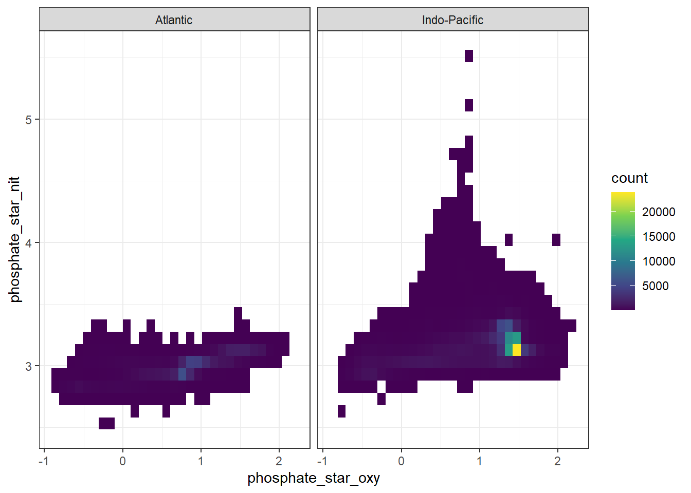
GLODAP <- GLODAP %>%
select(-phosphate_star_nit) %>%
rename(phosphate_star = phosphate_star_oxy)4 Reference year adjustment
The reference year adjustment relies on an apriori estimate of Cant at a given location and depth, which is used as a scaling factor for the concurrent change in atmospheric CO2. The underlying assumption is a transient steady state for the oceanic Cant uptake. Here, Cant from the GLODAP mapped Climatology was used.
Note that eq. 6 in Clement and Gruber (2018) misses pCO2 pre-industrial in the denominator. Here we use the equation published in Gruber et al. (2019).
4.1 Merge data sets
4.1.1 GLODAP + Cant
Cant_clim <- Cant_clim %>%
drop_na()
Cant_clim_obs <- left_join(GLODAP_obs_grid, Cant_clim) %>%
select(-n)
# Cant_clim_obs_nr <- Cant_clim_obs %>%
# group_by(lon, lat) %>%
# summarise(n_cant = n()) %>%
# ungroup()
# Cant_clim_obs %>%
# filter(n < 1) %>%
# ggplot(aes(lon,lat)) +
# geom_point(data = GLODAP_obs_grid, aes(lon, lat)) +
# geom_point(col = "red")
rm(Cant_clim, GLODAP_obs_grid)
GLODAP_Cant_obs <- full_join(GLODAP, Cant_clim_obs)
rm(GLODAP, Cant_clim_obs)The mapped Cant product was merged with GLODAP observation by:
- using an identical 1x1° horizontal grid
- linear interpolation of Cant from standard to sampling depth
# GLODAP_Cant_obs <- full_join(GLODAP_Cant_obs, Cant_clim_obs_nr)
GLODAP_Cant_obs <- GLODAP_Cant_obs %>%
# filter(n_cant > 1) %>%
group_by(lat, lon) %>%
arrange(depth) %>%
mutate(cant_int = approxfun(depth, cant, rule = 2)(depth)) %>%
ungroup()
# GLODAP_Cant_obs_set <- GLODAP_Cant_obs %>%
# filter(n_cant == 1) %>%
# group_by(lat, lon) %>%
# arrange(depth) %>%
# mutate(cant_int = mean(cant, na.rm = TRUE)) %>%
# ungroup()
ggplot() +
geom_path(
data = GLODAP_Cant_obs %>%
filter(lat == 48.5, lon == 165.5,!is.na(cant)) %>%
arrange(depth),
aes(cant, depth, col = "mapped")
) +
geom_point(
data = GLODAP_Cant_obs %>%
filter(lat == 48.5, lon == 165.5,!is.na(cant)) %>%
arrange(depth),
aes(cant, depth, col = "mapped")
) +
geom_point(
data = GLODAP_Cant_obs %>%
filter(lat == 48.5, lon == 165.5, date == ymd("2018-06-27")),
aes(cant_int, depth, col = "interpolated")
) +
scale_y_reverse() +
scale_color_brewer(palette = "Dark2", name = "") +
labs(title = "Cant interpolation to sampling depth - example profile")
# remove cant data at grid cells without observations
GLODAP <- GLODAP_Cant_obs %>%
filter(!is.na(Cstar)) %>%
mutate(cant = cant_int) %>%
select(-cant_int)
rm(GLODAP_Cant_obs)4.1.2 GLODAP + atm. pCO2
GLODAP observations were merged with mean annual atmospheric pCO2 levels by year.
GLODAP <- left_join(GLODAP, co2_atm)4.2 Calculate adjustment
GLODAP <- GLODAP %>%
group_by(era) %>%
mutate(tref = median(year)) %>%
ungroup()
tref <- GLODAP %>%
group_by(era) %>%
summarise(year = median(year)) %>%
ungroup()
co2_atm_tref <- right_join(co2_atm, tref) %>%
select(-year) %>%
rename(pCO2_tref = pCO2)
GLODAP <- full_join(GLODAP, co2_atm_tref)
rm(co2_atm, co2_atm_tref, tref)
GLODAP <- GLODAP %>%
mutate(Cstar_tref_delta =
((pCO2 - pCO2_tref) / (pCO2_tref - 280)) * cant,
Cstar_tref = Cstar - Cstar_tref_delta)4.3 Control plots
4.3.1 Histogram
GLODAP %>%
ggplot(aes(Cstar_tref_delta)) +
geom_histogram()
4.3.2 Time series
GLODAP %>%
sample_n(1e4) %>%
ggplot(aes(year, Cstar_tref_delta, col = cant)) +
geom_point() +
scale_color_viridis_c() +
labs(title = "random subsample 1e4")
5 Selected section plots
A selected section is plotted to demonstrate the magnitude of various parameters and corrections relevant to C*.
GLODAP_cruise <- GLODAP %>%
filter(cruise %in% parameters$cruises_meridional)GLODAP_cruise %>%
arrange(date) %>%
ggplot(aes(lon, lat)) +
geom_raster(data = landmask %>% filter(region == "land"),
aes(lon, lat), fill = "grey80") +
geom_path() +
geom_point(aes(col = date)) +
coord_quickmap(expand = 0) +
scale_color_viridis_c(trans = "date") +
labs(title = paste("Cruise year:", mean(GLODAP_cruise$year))) +
theme(legend.position = "bottom")
lat_section <-
GLODAP_cruise %>%
ggplot(aes(lat, depth)) +
scale_y_reverse() +
scale_color_viridis_c() +
theme(legend.position = "bottom")
lat_section +
geom_point(aes(col = tco2))
lat_section +
geom_point(aes(col = talk))
lat_section +
geom_point(aes(col = phosphate))
lat_section +
geom_point(aes(col = rCP_phosphate))
lat_section +
geom_point(aes(col = talk_05))
lat_section +
geom_point(aes(col = rNP_phosphate_05))
lat_section +
geom_point(aes(col = Cstar))
lat_section +
geom_point(aes(col = cant))
lat_section +
geom_point(aes(col = -Cstar_tref_delta))
rm(lat_section, GLODAP_cruise)6 MLR
6.1 Isoneutral slabs
The following boundaries for isoneutral slabs were defined:
- Atlantic: -Inf, 26, 26.5, 26.75, 27, 27.25, 27.5, 27.75, 27.85, 27.95, 28.05, 28.1, 28.15, 28.2, Inf
- Indo-Pacific: -Inf, 26, 26.5, 26.75, 27, 27.25, 27.5, 27.75, 27.85, 27.95, 28.05, 28.1, Inf
Continuous neutral densities (gamma) values from GLODAP are grouped into isoneutral slabs.
GLODAP_Atl <- GLODAP %>%
filter(basin == "Atlantic") %>%
mutate(gamma_slab = cut(gamma, slabs_Atl))
GLODAP_Ind_Pac <- GLODAP %>%
filter(basin == "Indo-Pacific") %>%
mutate(gamma_slab = cut(gamma, slabs_Ind_Pac))
GLODAP <- bind_rows(GLODAP_Atl, GLODAP_Ind_Pac)
rm(GLODAP_Atl, GLODAP_Ind_Pac, slabs_Atl, slabs_Ind_Pac)GLODAP_cruise <- GLODAP %>%
filter(cruise %in% parameters$cruises_meridional)
lat_section <-
GLODAP_cruise %>%
ggplot(aes(lat, depth)) +
scale_y_reverse() +
theme(legend.position = "bottom")
lat_section +
geom_point(aes(col = gamma)) +
scale_color_viridis_c()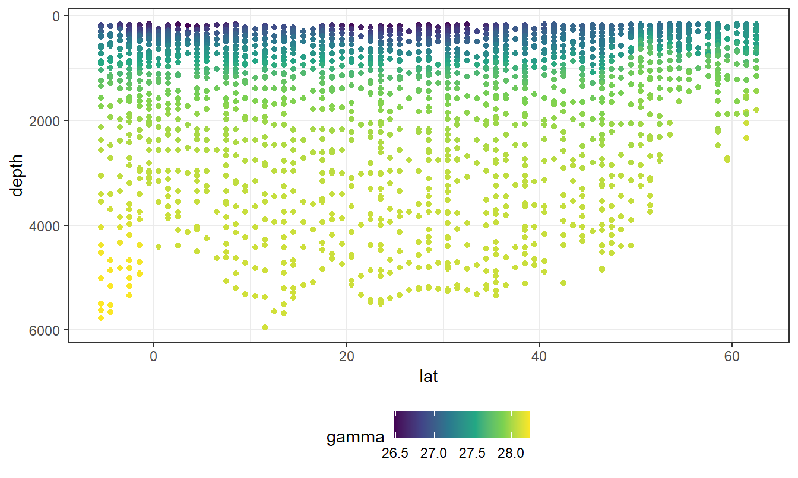
lat_section +
geom_point(aes(col = gamma_slab)) +
scale_color_viridis_d()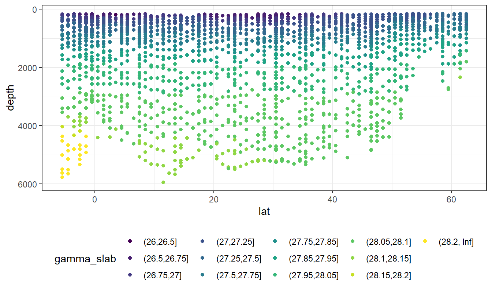
rm(lat_section, GLODAP_cruise)GLODAP_cruise <- GLODAP %>%
filter(cruise %in% parameters$cruises_meridional)
library(oce)
GLODAP_cruise <- GLODAP_cruise %>%
mutate(THETA = swTheta(salinity = sal,
temperature = tem,
pressure = depth,
referencePressure = 0,
longitude = lon-180,
latitude = lat))
GLODAP_cruise <- GLODAP_cruise %>%
rename(LATITUDE = lat,
LONGITUDE = lon,
SALNTY = sal,
CTDPRS = depth,
gamma_provided = gamma)
library(reticulate)
source_python(here::here("code/python_scripts",
"Gamma_GLODAP_python.py"))
GLODAP_cruise <- calculate_gamma(GLODAP_cruise)
GLODAP_cruise <- GLODAP_cruise %>%
mutate(gamma_delta = gamma_provided - GAMMA)
lat_section <-
GLODAP_cruise %>%
ggplot(aes(LATITUDE, CTDPRS)) +
scale_y_reverse() +
theme(legend.position = "bottom")
lat_section +
geom_point(aes(col = gamma_delta)) +
scale_color_viridis_c()
GLODAP_cruise %>%
ggplot(aes(gamma_delta))+
geom_histogram()
rm(lat_section, GLODAP_cruise, cruises_meridional)6.1.1 Observations coverage
GLODAP <- GLODAP %>%
mutate(era = factor(era, c("JGOFS_WOCE", "GO_SHIP", "new_era"))) %>%
mutate(gamma_slab = factor(gamma_slab),
gamma_slab = factor(gamma_slab, levels = rev(levels(gamma_slab))))
GLODAP %>%
filter(basin == "Atlantic") %>%
ggplot(aes(lat, gamma_slab)) +
geom_bin2d(binwidth = 5) +
scale_fill_viridis_c(option = "magma", direction = -1, trans = "log10",
name = "log10(n)") +
scale_x_continuous(breaks = seq(-100,100,20)) +
facet_grid(era~basin)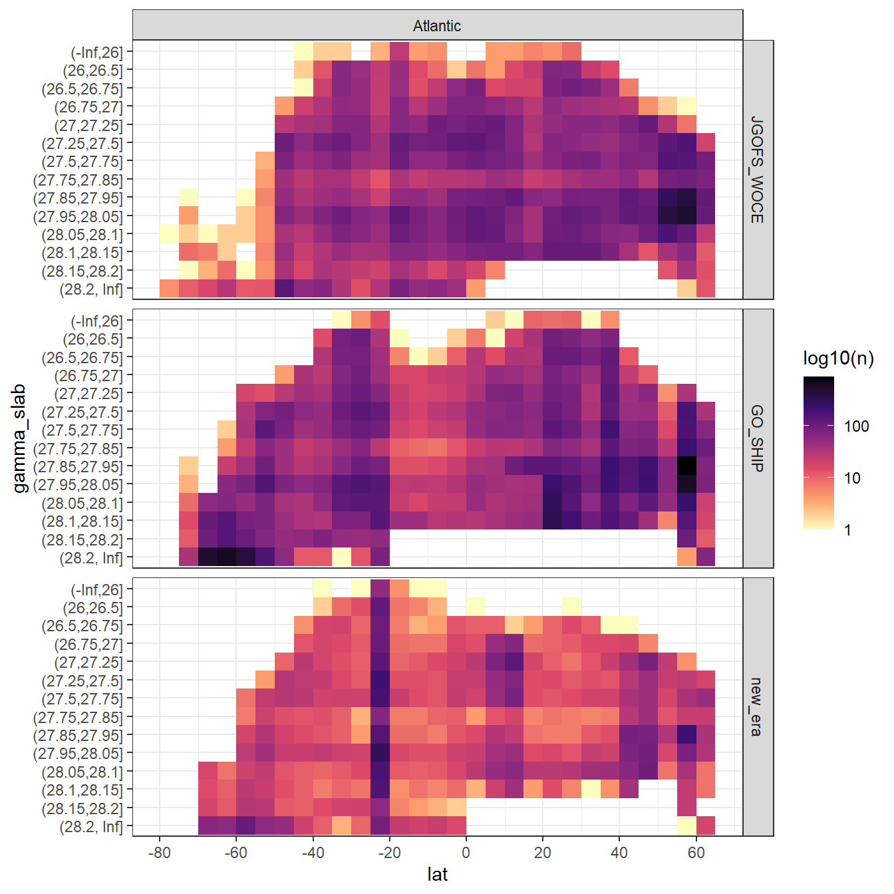
GLODAP %>%
filter(basin == "Indo-Pacific") %>%
ggplot(aes(lat, gamma_slab)) +
geom_bin2d(binwidth = 5) +
scale_fill_viridis_c(option = "magma", direction = -1, trans = "log10",
name = "log10(n)") +
scale_x_continuous(breaks = seq(-100,100,20)) +
facet_grid(era~basin)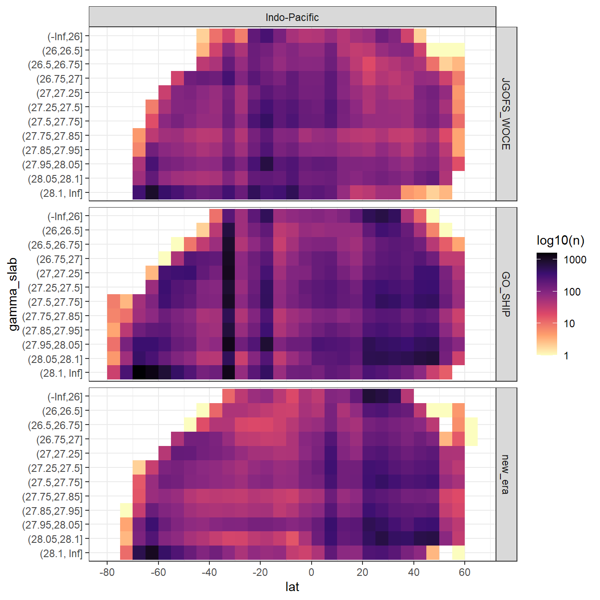
6.2 Predictor correlation
The correlation between:
- pairs of seven potential predictor variables and
- C* and seven potential predictor variables
were investigated based on:
- property-property plots and
- calculated correlation coeffcients.
6.2.1 Correlation plots
For an overview, a random subset of data from all eras was plotted separately for both basins, with color indicating neutral density slabs (high density = dark-purple color).
GLODAP %>%
filter(basin == "Atlantic") %>%
sample_frac(0.05) %>%
ggpairs(columns = c("Cstar",
"sal",
"tem",
"aou",
"oxygen",
"silicate",
"phosphate",
"phosphate_star"),
upper = "blank",
ggplot2::aes(col = gamma_slab, fill = gamma_slab, alpha = 0.01)) +
scale_fill_viridis_d(direction = -1) +
scale_color_viridis_d(direction = -1) +
labs(title = paste("Basin: Atlantic | era: all | subsample size: 5 % of",
nrow(GLODAP %>% filter(basin == "Atlantic"))))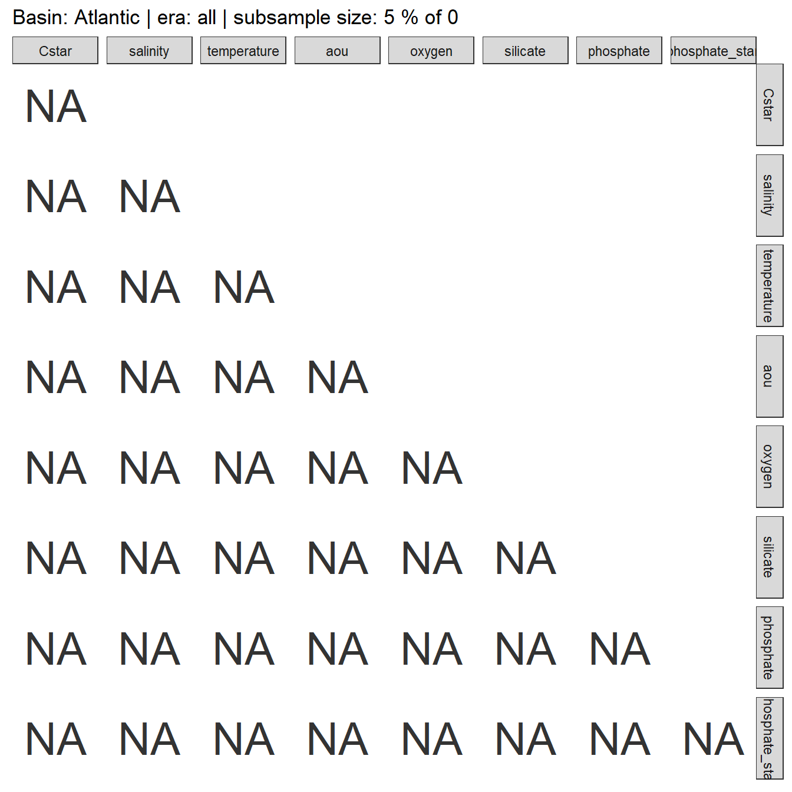
GLODAP %>%
filter(basin == "Indo-Pacific") %>%
sample_frac(0.05) %>%
ggpairs(columns = c("Cstar",
"sal",
"tem",
"aou",
"oxygen",
"silicate",
"phosphate",
"phosphate_star"),
upper = "blank",
ggplot2::aes(col = gamma_slab, fill = gamma_slab, alpha = 0.01)) +
scale_fill_viridis_d(direction = -1) +
scale_color_viridis_d(direction = -1) +
labs(title = paste("Basin: Indo-Pacific | era: all | subsample size: 5 % of",
nrow(GLODAP %>% filter(basin == "Indo-Pacific") )))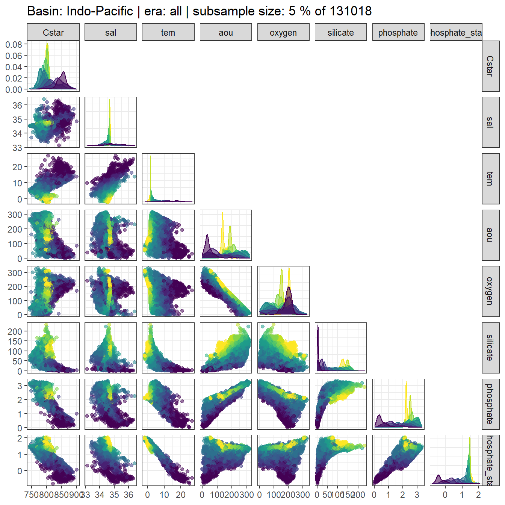
Individual correlation plots for each basin, era and neutral density (gamma) slab are available here.
for (i_basin in unique(GLODAP$basin)) {
for (i_era in unique(GLODAP$era)) {
# i_basin <- unique(GLODAP$basin)[1]
# i_era <- unique(GLODAP$era)[1]
print(i_basin)
print(i_era)
GLODAP_basin_era <- GLODAP %>%
filter(basin == i_basin,
era == i_era)
for (i_gamma_slab in unique(GLODAP_basin_era$gamma_slab)) {
# i_gamma_slab <- unique(GLODAP_basin_era$gamma_slab)[5]
print(i_gamma_slab)
GLODAP_highlight <- GLODAP_basin_era %>%
mutate(gamma_highlight = if_else(gamma_slab == i_gamma_slab,
"in", "out")) %>%
arrange(desc(gamma_highlight))
p <- GLODAP_highlight %>%
ggpairs(columns = c("Cstar",
"sal",
"tem",
"aou",
"oxygen",
"silicate",
"phosphate",
"phosphate_star"),
ggplot2::aes(col = gamma_highlight, fill = gamma_highlight, alpha = 0.01)) +
scale_fill_manual( values = c("red", "grey")) +
scale_color_manual(values = c("red", "grey")) +
labs(title = paste(i_basin,
"|", i_era,
"| Gamma slab", i_gamma_slab,
"| # obs total", nrow(GLODAP_basin_era),
"| # obs slab", nrow(GLODAP_highlight %>%
filter(gamma_highlight == "in"))))
png(here::here("output/figure/eMLR/predictor_correlation",
paste("predictor_correlation", i_basin, i_era, i_gamma_slab, ".png", sep = "_")),
width = 12, height = 12, units = "in", res = 300)
print(p)
dev.off()
}
}
}6.2.2 Correlation assesment
6.2.2.1 Calculation of correlation coeffcients
Correlation coefficients were calculated indivdually within each slabs, era and basin.
for (i_basin in unique(GLODAP$basin)) {
for (i_era in unique(GLODAP$era)) {
# i_basin <- unique(GLODAP$basin)[1]
# i_era <- unique(GLODAP$era)[1]
print(i_basin)
print(i_era)
GLODAP_basin_era <- GLODAP %>%
filter(basin == i_basin,
era == i_era) %>%
select(basin,
era,
gamma_slab,
Cstar,
sal,
tem,
aou,
oxygen,
silicate,
phosphate,
phosphate_star)
for (i_gamma_slab in unique(GLODAP_basin_era$gamma_slab)) {
# i_gamma_slab <- unique(GLODAP_basin_era$gamma_slab)[5]
print(i_gamma_slab)
GLODAP_basin_era_slab <- GLODAP_basin_era %>%
filter(gamma_slab == i_gamma_slab)
cor_Cstar_predictor_temp <- GLODAP_basin_era_slab %>%
select(-c(basin, era, gamma_slab)) %>%
correlate() %>%
focus(Cstar) %>%
mutate(basin = i_basin,
era = i_era,
gamma_slab = i_gamma_slab)
if (exists("cor_Cstar_predictor")) {
cor_Cstar_predictor <- bind_rows(cor_Cstar_predictor, cor_Cstar_predictor_temp)
}
if (!exists("cor_Cstar_predictor")) {
cor_Cstar_predictor <- cor_Cstar_predictor_temp
}
cor_predictors_temp <- GLODAP_basin_era_slab %>%
select(-c(basin, era, gamma_slab)) %>%
correlate() %>%
shave %>%
stretch() %>%
filter(!is.na(r),
x != "Cstar",
y != "Cstar") %>%
mutate(pair = paste(x, y, sep = " + ")) %>%
select(-c(x, y)) %>%
mutate(basin = i_basin,
era = i_era,
gamma_slab = i_gamma_slab)
if (exists("cor_predictors")) {
cor_predictors <- bind_rows(cor_predictors, cor_predictors_temp)
}
if (!exists("cor_predictors")) {
cor_predictors <- cor_predictors_temp
}
}
}
}
cor_predictors %>%
write_csv(here::here("data/eMLR",
"cor_predictors.csv"))
cor_Cstar_predictor %>%
write_csv(here::here("data/eMLR",
"cor_Cstar_predictor.csv"))
rm(cor_predictors_temp, cor_Cstar_predictor_temp,
i_gamma_slab, i_era, i_basin,
GLODAP_basin_era, GLODAP_basin_era_slab)6.2.2.2 Predictor pairs
Below, the range of correlations coefficients for each predictor pair is plotted per basin (facet) and density slab (color). Note that the range indicates the min and max values of in total 3 calculated coefficients (one per era).
cor_predictors <-
read_csv(here::here("data/eMLR",
"cor_predictors.csv"))
cor_predictors_stats <- cor_predictors %>%
group_by(pair, basin, gamma_slab) %>%
summarise(mean_r = mean(r),
min_r = min(r),
max_r = max(r)) %>%
ungroup()
cor_predictors_stats %>%
mutate(pair = reorder(pair, mean_r)) %>%
ggplot() +
geom_vline(xintercept = c(-0.9, 0.9), col = "red") +
geom_vline(xintercept = 0) +
geom_linerange(
aes(y = pair, xmin = min_r, xmax = max_r, col = gamma_slab),
position = position_dodge(width = 0.6)) +
facet_wrap(~basin) +
scale_color_viridis_d(direction = -1) +
labs(x = "correlation coefficient", y = "") +
theme(legend.position = "top")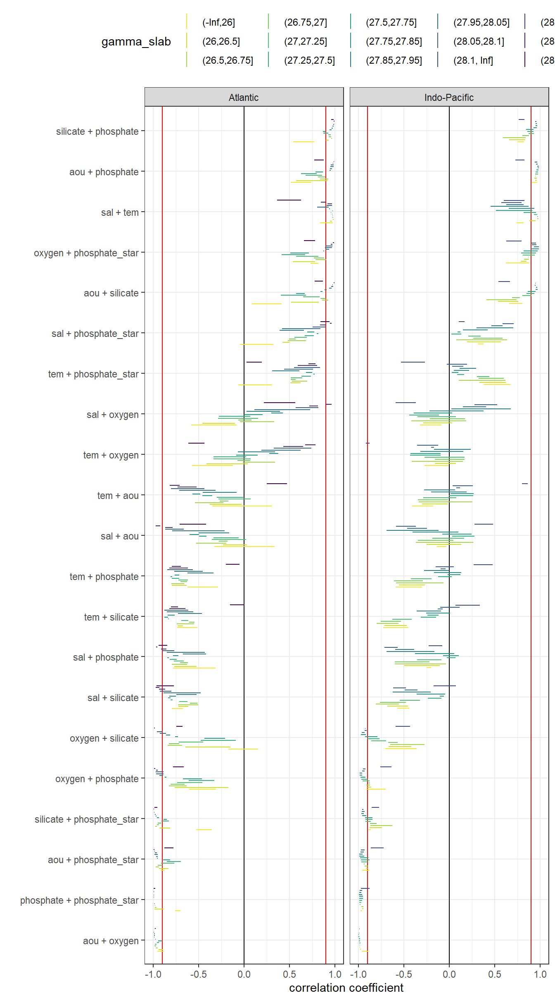
kable(cor_predictors_stats) %>%
add_header_above() %>%
kable_styling() %>%
scroll_box(width = "100%", height = "400px")| pair | basin | gamma_slab | mean_r | min_r | max_r |
|---|---|---|---|---|---|
| aou + oxygen | Atlantic | (-Inf,26] | -0.9181612 | -0.9566141 | -0.8863166 |
| aou + oxygen | Atlantic | (26,26.5] | -0.9168222 | -0.9409620 | -0.8987570 |
| aou + oxygen | Atlantic | (26.5,26.75] | -0.9652673 | -0.9754904 | -0.9501770 |
| aou + oxygen | Atlantic | (26.75,27] | -0.9782180 | -0.9856810 | -0.9697365 |
| aou + oxygen | Atlantic | (27,27.25] | -0.9744293 | -0.9820587 | -0.9637201 |
| aou + oxygen | Atlantic | (27.25,27.5] | -0.9522776 | -0.9608428 | -0.9397143 |
| aou + oxygen | Atlantic | (27.5,27.75] | -0.9303794 | -0.9470832 | -0.9028461 |
| aou + oxygen | Atlantic | (27.75,27.85] | -0.9772131 | -0.9786507 | -0.9759298 |
| aou + oxygen | Atlantic | (27.85,27.95] | -0.9893344 | -0.9918342 | -0.9873376 |
| aou + oxygen | Atlantic | (27.95,28.05] | -0.9889256 | -0.9926695 | -0.9823756 |
| aou + oxygen | Atlantic | (28.05,28.1] | -0.9893533 | -0.9942939 | -0.9813655 |
| aou + oxygen | Atlantic | (28.1,28.15] | -0.9938055 | -0.9945634 | -0.9923620 |
| aou + oxygen | Atlantic | (28.15,28.2] | -0.9981383 | -0.9986039 | -0.9974366 |
| aou + oxygen | Atlantic | (28.2, Inf] | -0.9785520 | -0.9837852 | -0.9737943 |
| aou + oxygen | Indo-Pacific | (-Inf,26] | -0.9236143 | -0.9667488 | -0.8972692 |
| aou + oxygen | Indo-Pacific | (26,26.5] | -0.9808894 | -0.9845577 | -0.9738178 |
| aou + oxygen | Indo-Pacific | (26.5,26.75] | -0.9853155 | -0.9882411 | -0.9820234 |
| aou + oxygen | Indo-Pacific | (26.75,27] | -0.9839420 | -0.9853368 | -0.9830976 |
| aou + oxygen | Indo-Pacific | (27,27.25] | -0.9886685 | -0.9928849 | -0.9803680 |
| aou + oxygen | Indo-Pacific | (27.25,27.5] | -0.9912493 | -0.9952739 | -0.9836197 |
| aou + oxygen | Indo-Pacific | (27.5,27.75] | -0.9925089 | -0.9967320 | -0.9850839 |
| aou + oxygen | Indo-Pacific | (27.75,27.85] | -0.9959869 | -0.9989585 | -0.9919032 |
| aou + oxygen | Indo-Pacific | (27.85,27.95] | -0.9967344 | -0.9990057 | -0.9944556 |
| aou + oxygen | Indo-Pacific | (27.95,28.05] | -0.9951746 | -0.9964353 | -0.9934051 |
| aou + oxygen | Indo-Pacific | (28.05,28.1] | -0.9956092 | -0.9966147 | -0.9946069 |
| aou + oxygen | Indo-Pacific | (28.1, Inf] | -0.9908817 | -0.9923555 | -0.9887883 |
| aou + phosphate | Atlantic | (-Inf,26] | 0.6488368 | 0.5161554 | 0.7417322 |
| aou + phosphate | Atlantic | (26,26.5] | 0.7509904 | 0.5753655 | 0.9216757 |
| aou + phosphate | Atlantic | (26.5,26.75] | 0.8799344 | 0.8385999 | 0.9294296 |
| aou + phosphate | Atlantic | (26.75,27] | 0.8653866 | 0.8170427 | 0.8970329 |
| aou + phosphate | Atlantic | (27,27.25] | 0.7961680 | 0.6776659 | 0.8599479 |
| aou + phosphate | Atlantic | (27.25,27.5] | 0.7214986 | 0.6277934 | 0.8023489 |
| aou + phosphate | Atlantic | (27.5,27.75] | 0.8384476 | 0.7895234 | 0.8678536 |
| aou + phosphate | Atlantic | (27.75,27.85] | 0.9466782 | 0.9405605 | 0.9553219 |
| aou + phosphate | Atlantic | (27.85,27.95] | 0.9573251 | 0.9478591 | 0.9688590 |
| aou + phosphate | Atlantic | (27.95,28.05] | 0.9643270 | 0.9511925 | 0.9862507 |
| aou + phosphate | Atlantic | (28.05,28.1] | 0.9705710 | 0.9555563 | 0.9871036 |
| aou + phosphate | Atlantic | (28.1,28.15] | 0.9805780 | 0.9784785 | 0.9841974 |
| aou + phosphate | Atlantic | (28.15,28.2] | 0.9922852 | 0.9889823 | 0.9946912 |
| aou + phosphate | Atlantic | (28.2, Inf] | 0.8184560 | 0.7760113 | 0.8773826 |
| aou + phosphate | Indo-Pacific | (-Inf,26] | 0.9430311 | 0.9128374 | 0.9696641 |
| aou + phosphate | Indo-Pacific | (26,26.5] | 0.9553162 | 0.9491949 | 0.9640881 |
| aou + phosphate | Indo-Pacific | (26.5,26.75] | 0.9515877 | 0.9393080 | 0.9638471 |
| aou + phosphate | Indo-Pacific | (26.75,27] | 0.9505203 | 0.9459297 | 0.9539790 |
| aou + phosphate | Indo-Pacific | (27,27.25] | 0.9664795 | 0.9484998 | 0.9806798 |
| aou + phosphate | Indo-Pacific | (27.25,27.5] | 0.9709204 | 0.9520615 | 0.9803746 |
| aou + phosphate | Indo-Pacific | (27.5,27.75] | 0.9749164 | 0.9603843 | 0.9823181 |
| aou + phosphate | Indo-Pacific | (27.75,27.85] | 0.9822762 | 0.9736000 | 0.9883639 |
| aou + phosphate | Indo-Pacific | (27.85,27.95] | 0.9801007 | 0.9706154 | 0.9891580 |
| aou + phosphate | Indo-Pacific | (27.95,28.05] | 0.9675386 | 0.9569900 | 0.9761508 |
| aou + phosphate | Indo-Pacific | (28.05,28.1] | 0.9573078 | 0.9443355 | 0.9715225 |
| aou + phosphate | Indo-Pacific | (28.1, Inf] | 0.7805310 | 0.7289653 | 0.8296450 |
| aou + phosphate_star | Atlantic | (-Inf,26] | -0.8923905 | -0.9183924 | -0.8772572 |
| aou + phosphate_star | Atlantic | (26,26.5] | -0.8933367 | -0.9384669 | -0.8343264 |
| aou + phosphate_star | Atlantic | (26.5,26.75] | -0.9492546 | -0.9748982 | -0.9362400 |
| aou + phosphate_star | Atlantic | (26.75,27] | -0.9315267 | -0.9493338 | -0.9014717 |
| aou + phosphate_star | Atlantic | (27,27.25] | -0.8647670 | -0.9128106 | -0.7698567 |
| aou + phosphate_star | Atlantic | (27.25,27.5] | -0.7824957 | -0.8505337 | -0.6946999 |
| aou + phosphate_star | Atlantic | (27.5,27.75] | -0.8623106 | -0.8929301 | -0.8168445 |
| aou + phosphate_star | Atlantic | (27.75,27.85] | -0.9559132 | -0.9597149 | -0.9518413 |
| aou + phosphate_star | Atlantic | (27.85,27.95] | -0.9618303 | -0.9712720 | -0.9520253 |
| aou + phosphate_star | Atlantic | (27.95,28.05] | -0.9658849 | -0.9857587 | -0.9533034 |
| aou + phosphate_star | Atlantic | (28.05,28.1] | -0.9737469 | -0.9844808 | -0.9608342 |
| aou + phosphate_star | Atlantic | (28.1,28.15] | -0.9852890 | -0.9886459 | -0.9811148 |
| aou + phosphate_star | Atlantic | (28.15,28.2] | -0.9920551 | -0.9960114 | -0.9883376 |
| aou + phosphate_star | Atlantic | (28.2, Inf] | -0.8179057 | -0.8785730 | -0.7796276 |
| aou + phosphate_star | Indo-Pacific | (-Inf,26] | -0.9215305 | -0.9609277 | -0.8846722 |
| aou + phosphate_star | Indo-Pacific | (26,26.5] | -0.9062277 | -0.9170201 | -0.8982568 |
| aou + phosphate_star | Indo-Pacific | (26.5,26.75] | -0.9168439 | -0.9322594 | -0.8962566 |
| aou + phosphate_star | Indo-Pacific | (26.75,27] | -0.9396358 | -0.9428877 | -0.9350229 |
| aou + phosphate_star | Indo-Pacific | (27,27.25] | -0.9461166 | -0.9705723 | -0.9005201 |
| aou + phosphate_star | Indo-Pacific | (27.25,27.5] | -0.9421992 | -0.9742031 | -0.8784340 |
| aou + phosphate_star | Indo-Pacific | (27.5,27.75] | -0.9495700 | -0.9817387 | -0.8930001 |
| aou + phosphate_star | Indo-Pacific | (27.75,27.85] | -0.9702798 | -0.9908660 | -0.9392251 |
| aou + phosphate_star | Indo-Pacific | (27.85,27.95] | -0.9751755 | -0.9916509 | -0.9564150 |
| aou + phosphate_star | Indo-Pacific | (27.95,28.05] | -0.9618317 | -0.9786594 | -0.9435386 |
| aou + phosphate_star | Indo-Pacific | (28.05,28.1] | -0.9526787 | -0.9739551 | -0.9313490 |
| aou + phosphate_star | Indo-Pacific | (28.1, Inf] | -0.7844217 | -0.8642836 | -0.7212390 |
| aou + silicate | Atlantic | (-Inf,26] | 0.2654543 | 0.0884202 | 0.4145649 |
| aou + silicate | Atlantic | (26,26.5] | 0.6747329 | 0.5172910 | 0.8265329 |
| aou + silicate | Atlantic | (26.5,26.75] | 0.8953646 | 0.8608648 | 0.9291670 |
| aou + silicate | Atlantic | (26.75,27] | 0.8767545 | 0.8429220 | 0.9015240 |
| aou + silicate | Atlantic | (27,27.25] | 0.7587540 | 0.6532535 | 0.8355002 |
| aou + silicate | Atlantic | (27.25,27.5] | 0.5181865 | 0.4038500 | 0.6853791 |
| aou + silicate | Atlantic | (27.5,27.75] | 0.6086402 | 0.5720276 | 0.6699890 |
| aou + silicate | Atlantic | (27.75,27.85] | 0.8515955 | 0.8448051 | 0.8642328 |
| aou + silicate | Atlantic | (27.85,27.95] | 0.8977712 | 0.8893889 | 0.9121609 |
| aou + silicate | Atlantic | (27.95,28.05] | 0.9473367 | 0.9366867 | 0.9638062 |
| aou + silicate | Atlantic | (28.05,28.1] | 0.9710848 | 0.9618608 | 0.9826435 |
| aou + silicate | Atlantic | (28.1,28.15] | 0.9768582 | 0.9752126 | 0.9792466 |
| aou + silicate | Atlantic | (28.15,28.2] | 0.9911038 | 0.9862753 | 0.9955321 |
| aou + silicate | Atlantic | (28.2, Inf] | 0.8287733 | 0.7792842 | 0.8681030 |
| aou + silicate | Indo-Pacific | (-Inf,26] | 0.7341802 | 0.6585781 | 0.8063089 |
| aou + silicate | Indo-Pacific | (26,26.5] | 0.6560246 | 0.5381656 | 0.7585899 |
| aou + silicate | Indo-Pacific | (26.5,26.75] | 0.6155266 | 0.4093259 | 0.7404216 |
| aou + silicate | Indo-Pacific | (26.75,27] | 0.7499497 | 0.6938246 | 0.7795344 |
| aou + silicate | Indo-Pacific | (27,27.25] | 0.8632804 | 0.8054567 | 0.9080507 |
| aou + silicate | Indo-Pacific | (27.25,27.5] | 0.8983801 | 0.8521049 | 0.9373634 |
| aou + silicate | Indo-Pacific | (27.5,27.75] | 0.9184567 | 0.8664890 | 0.9528226 |
| aou + silicate | Indo-Pacific | (27.75,27.85] | 0.9668533 | 0.9508782 | 0.9761360 |
| aou + silicate | Indo-Pacific | (27.85,27.95] | 0.9642729 | 0.9543989 | 0.9707377 |
| aou + silicate | Indo-Pacific | (27.95,28.05] | 0.9491873 | 0.9415492 | 0.9533539 |
| aou + silicate | Indo-Pacific | (28.05,28.1] | 0.9486127 | 0.9459875 | 0.9528102 |
| aou + silicate | Indo-Pacific | (28.1, Inf] | 0.6263672 | 0.5401927 | 0.6694759 |
| oxygen + phosphate | Atlantic | (-Inf,26] | -0.4412587 | -0.6061311 | -0.3072346 |
| oxygen + phosphate | Atlantic | (26,26.5] | -0.4575598 | -0.7627491 | -0.1724774 |
| oxygen + phosphate | Atlantic | (26.5,26.75] | -0.7300061 | -0.8281720 | -0.6306966 |
| oxygen + phosphate | Atlantic | (26.75,27] | -0.7453860 | -0.8115376 | -0.6537454 |
| oxygen + phosphate | Atlantic | (27,27.25] | -0.6443769 | -0.7382896 | -0.4603906 |
| oxygen + phosphate | Atlantic | (27.25,27.5] | -0.4827029 | -0.6095132 | -0.3297344 |
| oxygen + phosphate | Atlantic | (27.5,27.75] | -0.5966809 | -0.6749872 | -0.4653694 |
| oxygen + phosphate | Atlantic | (27.75,27.85] | -0.8629912 | -0.8760309 | -0.8562542 |
| oxygen + phosphate | Atlantic | (27.85,27.95] | -0.9109015 | -0.9348224 | -0.8915953 |
| oxygen + phosphate | Atlantic | (27.95,28.05] | -0.9275300 | -0.9680297 | -0.8866843 |
| oxygen + phosphate | Atlantic | (28.05,28.1] | -0.9356801 | -0.9742818 | -0.8890527 |
| oxygen + phosphate | Atlantic | (28.1,28.15] | -0.9594641 | -0.9679879 | -0.9515113 |
| oxygen + phosphate | Atlantic | (28.15,28.2] | -0.9886288 | -0.9933712 | -0.9803690 |
| oxygen + phosphate | Atlantic | (28.2, Inf] | -0.7033246 | -0.7805874 | -0.6632504 |
| oxygen + phosphate | Indo-Pacific | (-Inf,26] | -0.7929968 | -0.9142219 | -0.7019392 |
| oxygen + phosphate | Indo-Pacific | (26,26.5] | -0.8862491 | -0.9082971 | -0.8593493 |
| oxygen + phosphate | Indo-Pacific | (26.5,26.75] | -0.8901984 | -0.9168553 | -0.8726298 |
| oxygen + phosphate | Indo-Pacific | (26.75,27] | -0.8841471 | -0.8898956 | -0.8744815 |
| oxygen + phosphate | Indo-Pacific | (27,27.25] | -0.9235393 | -0.9561043 | -0.8761859 |
| oxygen + phosphate | Indo-Pacific | (27.25,27.5] | -0.9422463 | -0.9674903 | -0.8950246 |
| oxygen + phosphate | Indo-Pacific | (27.5,27.75] | -0.9578123 | -0.9797089 | -0.9221370 |
| oxygen + phosphate | Indo-Pacific | (27.75,27.85] | -0.9752401 | -0.9887694 | -0.9585316 |
| oxygen + phosphate | Indo-Pacific | (27.85,27.95] | -0.9720875 | -0.9878715 | -0.9582296 |
| oxygen + phosphate | Indo-Pacific | (27.95,28.05] | -0.9467136 | -0.9591235 | -0.9309152 |
| oxygen + phosphate | Indo-Pacific | (28.05,28.1] | -0.9338575 | -0.9526139 | -0.9222755 |
| oxygen + phosphate | Indo-Pacific | (28.1, Inf] | -0.7020610 | -0.7608328 | -0.6369693 |
| oxygen + phosphate_star | Atlantic | (-Inf,26] | 0.7865517 | 0.7327100 | 0.8180245 |
| oxygen + phosphate_star | Atlantic | (26,26.5] | 0.6681961 | 0.5374254 | 0.7834098 |
| oxygen + phosphate_star | Atlantic | (26.5,26.75] | 0.8415472 | 0.7883927 | 0.9061182 |
| oxygen + phosphate_star | Atlantic | (26.75,27] | 0.8386104 | 0.7712405 | 0.8848335 |
| oxygen + phosphate_star | Atlantic | (27,27.25] | 0.7343223 | 0.5760302 | 0.8197204 |
| oxygen + phosphate_star | Atlantic | (27.25,27.5] | 0.5628038 | 0.4135220 | 0.6758859 |
| oxygen + phosphate_star | Atlantic | (27.5,27.75] | 0.6349337 | 0.5085658 | 0.7151415 |
| oxygen + phosphate_star | Atlantic | (27.75,27.85] | 0.8786350 | 0.8750420 | 0.8839863 |
| oxygen + phosphate_star | Atlantic | (27.85,27.95] | 0.9183379 | 0.8980476 | 0.9397390 |
| oxygen + phosphate_star | Atlantic | (27.95,28.05] | 0.9312940 | 0.8914315 | 0.9693612 |
| oxygen + phosphate_star | Atlantic | (28.05,28.1] | 0.9410425 | 0.8985993 | 0.9724058 |
| oxygen + phosphate_star | Atlantic | (28.1,28.15] | 0.9675592 | 0.9564225 | 0.9760167 |
| oxygen + phosphate_star | Atlantic | (28.15,28.2] | 0.9887973 | 0.9809134 | 0.9939642 |
| oxygen + phosphate_star | Atlantic | (28.2, Inf] | 0.7046203 | 0.6583356 | 0.7831452 |
| oxygen + phosphate_star | Indo-Pacific | (-Inf,26] | 0.7330805 | 0.6222680 | 0.8846818 |
| oxygen + phosphate_star | Indo-Pacific | (26,26.5] | 0.8225764 | 0.7896305 | 0.8506652 |
| oxygen + phosphate_star | Indo-Pacific | (26.5,26.75] | 0.8486576 | 0.8253500 | 0.8776107 |
| oxygen + phosphate_star | Indo-Pacific | (26.75,27] | 0.8723411 | 0.8687001 | 0.8750640 |
| oxygen + phosphate_star | Indo-Pacific | (27,27.25] | 0.8964122 | 0.8102509 | 0.9435023 |
| oxygen + phosphate_star | Indo-Pacific | (27.25,27.5] | 0.9016707 | 0.7909855 | 0.9583043 |
| oxygen + phosphate_star | Indo-Pacific | (27.5,27.75] | 0.9176698 | 0.8195438 | 0.9751664 |
| oxygen + phosphate_star | Indo-Pacific | (27.75,27.85] | 0.9538054 | 0.9019055 | 0.9889471 |
| oxygen + phosphate_star | Indo-Pacific | (27.85,27.95] | 0.9621937 | 0.9323389 | 0.9896092 |
| oxygen + phosphate_star | Indo-Pacific | (27.95,28.05] | 0.9384194 | 0.9108558 | 0.9621106 |
| oxygen + phosphate_star | Indo-Pacific | (28.05,28.1] | 0.9266754 | 0.9040632 | 0.9550349 |
| oxygen + phosphate_star | Indo-Pacific | (28.1, Inf] | 0.7061323 | 0.6301705 | 0.7991590 |
| oxygen + silicate | Atlantic | (-Inf,26] | -0.0202925 | -0.1715993 | 0.1534811 |
| oxygen + silicate | Atlantic | (26,26.5] | -0.3941576 | -0.6443663 | -0.1482352 |
| oxygen + silicate | Atlantic | (26.5,26.75] | -0.7701318 | -0.8436954 | -0.6846121 |
| oxygen + silicate | Atlantic | (26.75,27] | -0.7780682 | -0.8302180 | -0.7139144 |
| oxygen + silicate | Atlantic | (27,27.25] | -0.6142032 | -0.7169366 | -0.4522280 |
| oxygen + silicate | Atlantic | (27.25,27.5] | -0.2596380 | -0.4764353 | -0.0923371 |
| oxygen + silicate | Atlantic | (27.5,27.75] | -0.3185453 | -0.4360723 | -0.2092809 |
| oxygen + silicate | Atlantic | (27.75,27.85] | -0.7407622 | -0.7579846 | -0.7298223 |
| oxygen + silicate | Atlantic | (27.85,27.95] | -0.8322018 | -0.8599509 | -0.8161961 |
| oxygen + silicate | Atlantic | (27.95,28.05] | -0.8965103 | -0.9290503 | -0.8615934 |
| oxygen + silicate | Atlantic | (28.05,28.1] | -0.9316667 | -0.9616389 | -0.8975675 |
| oxygen + silicate | Atlantic | (28.1,28.15] | -0.9522411 | -0.9528684 | -0.9511337 |
| oxygen + silicate | Atlantic | (28.15,28.2] | -0.9869917 | -0.9916129 | -0.9808054 |
| oxygen + silicate | Atlantic | (28.2, Inf] | -0.7163708 | -0.7458716 | -0.6760719 |
| oxygen + silicate | Indo-Pacific | (-Inf,26] | -0.5098696 | -0.7068590 | -0.3570615 |
| oxygen + silicate | Indo-Pacific | (26,26.5] | -0.5383409 | -0.6683985 | -0.4175494 |
| oxygen + silicate | Indo-Pacific | (26.5,26.75] | -0.4977414 | -0.6493148 | -0.2746742 |
| oxygen + silicate | Indo-Pacific | (26.75,27] | -0.6373246 | -0.6739034 | -0.5683559 |
| oxygen + silicate | Indo-Pacific | (27,27.25] | -0.7925279 | -0.8597847 | -0.6943939 |
| oxygen + silicate | Indo-Pacific | (27.25,27.5] | -0.8475756 | -0.9066026 | -0.7684755 |
| oxygen + silicate | Indo-Pacific | (27.5,27.75] | -0.8776475 | -0.9290188 | -0.7911157 |
| oxygen + silicate | Indo-Pacific | (27.75,27.85] | -0.9512889 | -0.9721552 | -0.9203932 |
| oxygen + silicate | Indo-Pacific | (27.85,27.95] | -0.9499935 | -0.9648651 | -0.9322933 |
| oxygen + silicate | Indo-Pacific | (27.95,28.05] | -0.9243300 | -0.9323370 | -0.9106410 |
| oxygen + silicate | Indo-Pacific | (28.05,28.1] | -0.9254025 | -0.9263804 | -0.9236258 |
| oxygen + silicate | Indo-Pacific | (28.1, Inf] | -0.5374285 | -0.5927076 | -0.4299572 |
| phosphate + phosphate_star | Atlantic | (-Inf,26] | -0.7246652 | -0.7603510 | -0.7003933 |
| phosphate + phosphate_star | Atlantic | (26,26.5] | -0.9255695 | -0.9886250 | -0.8893376 |
| phosphate + phosphate_star | Atlantic | (26.5,26.75] | -0.9766255 | -0.9818145 | -0.9666308 |
| phosphate + phosphate_star | Atlantic | (26.75,27] | -0.9825627 | -0.9850995 | -0.9801916 |
| phosphate + phosphate_star | Atlantic | (27,27.25] | -0.9875967 | -0.9903419 | -0.9843432 |
| phosphate + phosphate_star | Atlantic | (27.25,27.5] | -0.9921676 | -0.9935190 | -0.9909282 |
| phosphate + phosphate_star | Atlantic | (27.5,27.75] | -0.9959024 | -0.9964220 | -0.9956397 |
| phosphate + phosphate_star | Atlantic | (27.75,27.85] | -0.9968701 | -0.9977268 | -0.9963606 |
| phosphate + phosphate_star | Atlantic | (27.85,27.95] | -0.9949163 | -0.9958776 | -0.9940222 |
| phosphate + phosphate_star | Atlantic | (27.95,28.05] | -0.9938602 | -0.9953857 | -0.9913353 |
| phosphate + phosphate_star | Atlantic | (28.05,28.1] | -0.9928625 | -0.9940815 | -0.9905919 |
| phosphate + phosphate_star | Atlantic | (28.1,28.15] | -0.9952762 | -0.9964594 | -0.9932125 |
| phosphate + phosphate_star | Atlantic | (28.15,28.2] | -0.9969649 | -0.9977864 | -0.9963027 |
| phosphate + phosphate_star | Atlantic | (28.2, Inf] | -0.9889567 | -0.9949464 | -0.9786039 |
| phosphate + phosphate_star | Indo-Pacific | (-Inf,26] | -0.9698752 | -0.9769677 | -0.9611886 |
| phosphate + phosphate_star | Indo-Pacific | (26,26.5] | -0.9526861 | -0.9600135 | -0.9469746 |
| phosphate + phosphate_star | Indo-Pacific | (26.5,26.75] | -0.9596354 | -0.9701601 | -0.9479436 |
| phosphate + phosphate_star | Indo-Pacific | (26.75,27] | -0.9834628 | -0.9895121 | -0.9802433 |
| phosphate + phosphate_star | Indo-Pacific | (27,27.25] | -0.9820325 | -0.9919428 | -0.9671313 |
| phosphate + phosphate_star | Indo-Pacific | (27.25,27.5] | -0.9817667 | -0.9925823 | -0.9619816 |
| phosphate + phosphate_star | Indo-Pacific | (27.5,27.75] | -0.9784779 | -0.9935614 | -0.9500403 |
| phosphate + phosphate_star | Indo-Pacific | (27.75,27.85] | -0.9787389 | -0.9939804 | -0.9514364 |
| phosphate + phosphate_star | Indo-Pacific | (27.85,27.95] | -0.9823503 | -0.9951048 | -0.9615154 |
| phosphate + phosphate_star | Indo-Pacific | (27.95,28.05] | -0.9818528 | -0.9931431 | -0.9678949 |
| phosphate + phosphate_star | Indo-Pacific | (28.05,28.1] | -0.9776019 | -0.9880526 | -0.9620262 |
| phosphate + phosphate_star | Indo-Pacific | (28.1, Inf] | -0.9350647 | -0.9730936 | -0.8781849 |
| sal + aou | Atlantic | (-Inf,26] | -0.0452495 | -0.3257778 | 0.3355069 |
| sal + aou | Atlantic | (26,26.5] | -0.1316899 | -0.2309276 | 0.0334238 |
| sal + aou | Atlantic | (26.5,26.75] | -0.3436234 | -0.5297627 | -0.1936560 |
| sal + aou | Atlantic | (26.75,27] | -0.2274688 | -0.2786631 | -0.1798969 |
| sal + aou | Atlantic | (27,27.25] | -0.1722725 | -0.3548045 | 0.0243317 |
| sal + aou | Atlantic | (27.25,27.5] | -0.1716808 | -0.3370859 | -0.0600930 |
| sal + aou | Atlantic | (27.5,27.75] | -0.4656439 | -0.4956237 | -0.4140142 |
| sal + aou | Atlantic | (27.75,27.85] | -0.5438494 | -0.6028770 | -0.4959685 |
| sal + aou | Atlantic | (27.85,27.95] | -0.3566450 | -0.5027073 | -0.1656048 |
| sal + aou | Atlantic | (27.95,28.05] | -0.5444684 | -0.7924660 | -0.2117975 |
| sal + aou | Atlantic | (28.05,28.1] | -0.7479505 | -0.8681681 | -0.6651277 |
| sal + aou | Atlantic | (28.1,28.15] | -0.8326742 | -0.8705770 | -0.7857761 |
| sal + aou | Atlantic | (28.15,28.2] | -0.9536576 | -0.9757986 | -0.9232777 |
| sal + aou | Atlantic | (28.2, Inf] | -0.5299343 | -0.7118279 | -0.4183440 |
| sal + aou | Indo-Pacific | (-Inf,26] | -0.1007275 | -0.1348394 | -0.0327037 |
| sal + aou | Indo-Pacific | (26,26.5] | -0.0462443 | -0.2484904 | 0.1341664 |
| sal + aou | Indo-Pacific | (26.5,26.75] | -0.0499808 | -0.3662272 | 0.2662912 |
| sal + aou | Indo-Pacific | (26.75,27] | -0.1465444 | -0.3473383 | 0.0457714 |
| sal + aou | Indo-Pacific | (27,27.25] | -0.0664612 | -0.1869272 | 0.1660639 |
| sal + aou | Indo-Pacific | (27.25,27.5] | 0.1235788 | 0.0311502 | 0.2796906 |
| sal + aou | Indo-Pacific | (27.5,27.75] | 0.0539318 | -0.0757758 | 0.2444715 |
| sal + aou | Indo-Pacific | (27.75,27.85] | -0.1591760 | -0.4051461 | 0.1020511 |
| sal + aou | Indo-Pacific | (27.85,27.95] | -0.3664921 | -0.6902419 | -0.1163589 |
| sal + aou | Indo-Pacific | (27.95,28.05] | -0.3710596 | -0.4619637 | -0.2457736 |
| sal + aou | Indo-Pacific | (28.05,28.1] | -0.4568953 | -0.5848017 | -0.3673960 |
| sal + aou | Indo-Pacific | (28.1, Inf] | 0.4000127 | 0.2765693 | 0.4836507 |
| sal + oxygen | Atlantic | (-Inf,26] | -0.3109640 | -0.5824114 | -0.0830958 |
| sal + oxygen | Atlantic | (26,26.5] | -0.2558098 | -0.4586109 | -0.0978965 |
| sal + oxygen | Atlantic | (26.5,26.75] | 0.0954246 | -0.0452345 | 0.3329757 |
| sal + oxygen | Atlantic | (26.75,27] | 0.0271900 | -0.0618028 | 0.0825327 |
| sal + oxygen | Atlantic | (27,27.25] | -0.0428928 | -0.2848910 | 0.1542667 |
| sal + oxygen | Atlantic | (27.25,27.5] | -0.1247762 | -0.2755115 | 0.0699327 |
| sal + oxygen | Atlantic | (27.5,27.75] | 0.1285747 | 0.0007210 | 0.2049111 |
| sal + oxygen | Atlantic | (27.75,27.85] | 0.3596203 | 0.2998878 | 0.4260460 |
| sal + oxygen | Atlantic | (27.85,27.95] | 0.2285522 | 0.0268688 | 0.3965104 |
| sal + oxygen | Atlantic | (27.95,28.05] | 0.4435389 | 0.1139659 | 0.7289259 |
| sal + oxygen | Atlantic | (28.05,28.1] | 0.6554291 | 0.5677434 | 0.8196414 |
| sal + oxygen | Atlantic | (28.1,28.15] | 0.7693824 | 0.7201298 | 0.8169252 |
| sal + oxygen | Atlantic | (28.15,28.2] | 0.9361833 | 0.8965298 | 0.9637406 |
| sal + oxygen | Atlantic | (28.2, Inf] | 0.3650789 | 0.2179548 | 0.5646201 |
| sal + oxygen | Indo-Pacific | (-Inf,26] | -0.2050939 | -0.3225624 | -0.0853819 |
| sal + oxygen | Indo-Pacific | (26,26.5] | -0.1331539 | -0.2879960 | 0.0333019 |
| sal + oxygen | Indo-Pacific | (26.5,26.75] | -0.1105800 | -0.4189153 | 0.1874838 |
| sal + oxygen | Indo-Pacific | (26.75,27] | -0.0254177 | -0.2113746 | 0.1739144 |
| sal + oxygen | Indo-Pacific | (27,27.25] | -0.0704212 | -0.3515906 | 0.0755114 |
| sal + oxygen | Indo-Pacific | (27.25,27.5] | -0.2325910 | -0.4392475 | -0.1152695 |
| sal + oxygen | Indo-Pacific | (27.5,27.75] | -0.1397071 | -0.3924178 | 0.0324730 |
| sal + oxygen | Indo-Pacific | (27.75,27.85] | 0.0892654 | -0.2197215 | 0.3778925 |
| sal + oxygen | Indo-Pacific | (27.85,27.95] | 0.3099987 | 0.0234029 | 0.6777124 |
| sal + oxygen | Indo-Pacific | (27.95,28.05] | 0.2958454 | 0.1485588 | 0.4038045 |
| sal + oxygen | Indo-Pacific | (28.05,28.1] | 0.3810227 | 0.2769292 | 0.5276693 |
| sal + oxygen | Indo-Pacific | (28.1, Inf] | -0.4958183 | -0.5911751 | -0.3703990 |
| sal + phosphate | Atlantic | (-Inf,26] | -0.5368678 | -0.7820996 | -0.3151151 |
| sal + phosphate | Atlantic | (26,26.5] | -0.6861720 | -0.7694493 | -0.5227085 |
| sal + phosphate | Atlantic | (26.5,26.75] | -0.7286769 | -0.7958907 | -0.6260673 |
| sal + phosphate | Atlantic | (26.75,27] | -0.6705112 | -0.7056194 | -0.6198328 |
| sal + phosphate | Atlantic | (27,27.25] | -0.7145275 | -0.7748703 | -0.6639096 |
| sal + phosphate | Atlantic | (27.25,27.5] | -0.7876444 | -0.8205324 | -0.7418126 |
| sal + phosphate | Atlantic | (27.5,27.75] | -0.8352052 | -0.8445523 | -0.8291386 |
| sal + phosphate | Atlantic | (27.75,27.85] | -0.7551779 | -0.7831275 | -0.7242229 |
| sal + phosphate | Atlantic | (27.85,27.95] | -0.5751115 | -0.6726756 | -0.4171452 |
| sal + phosphate | Atlantic | (27.95,28.05] | -0.6954715 | -0.8503110 | -0.4308056 |
| sal + phosphate | Atlantic | (28.05,28.1] | -0.8442799 | -0.9056577 | -0.7678284 |
| sal + phosphate | Atlantic | (28.1,28.15] | -0.8938608 | -0.9149390 | -0.8537034 |
| sal + phosphate | Atlantic | (28.15,28.2] | -0.9592330 | -0.9685939 | -0.9542868 |
| sal + phosphate | Atlantic | (28.2, Inf] | -0.8964793 | -0.9415770 | -0.8474669 |
| sal + phosphate | Indo-Pacific | (-Inf,26] | -0.2198128 | -0.2517569 | -0.1978531 |
| sal + phosphate | Indo-Pacific | (26,26.5] | -0.2788263 | -0.4965027 | -0.1021091 |
| sal + phosphate | Indo-Pacific | (26.5,26.75] | -0.3024912 | -0.6026729 | -0.0366340 |
| sal + phosphate | Indo-Pacific | (26.75,27] | -0.4017141 | -0.6011400 | -0.2166537 |
| sal + phosphate | Indo-Pacific | (27,27.25] | -0.2502806 | -0.3556547 | -0.0875812 |
| sal + phosphate | Indo-Pacific | (27.25,27.5] | 0.0124007 | -0.0277407 | 0.0674829 |
| sal + phosphate | Indo-Pacific | (27.5,27.75] | -0.0070455 | -0.0695993 | 0.1069794 |
| sal + phosphate | Indo-Pacific | (27.75,27.85] | -0.1826353 | -0.3793168 | 0.0529917 |
| sal + phosphate | Indo-Pacific | (27.85,27.95] | -0.4106655 | -0.6925250 | -0.1626217 |
| sal + phosphate | Indo-Pacific | (27.95,28.05] | -0.5116451 | -0.5966346 | -0.3879426 |
| sal + phosphate | Indo-Pacific | (28.05,28.1] | -0.6183353 | -0.7160040 | -0.5687749 |
| sal + phosphate | Indo-Pacific | (28.1, Inf] | -0.1340679 | -0.2265805 | -0.0753210 |
| sal + phosphate_star | Atlantic | (-Inf,26] | 0.1998114 | -0.0441654 | 0.3224651 |
| sal + phosphate_star | Atlantic | (26,26.5] | 0.4669722 | 0.4252582 | 0.4991462 |
| sal + phosphate_star | Atlantic | (26.5,26.75] | 0.5841224 | 0.4822478 | 0.6822662 |
| sal + phosphate_star | Atlantic | (26.75,27] | 0.5408556 | 0.4969719 | 0.5683795 |
| sal + phosphate_star | Atlantic | (27,27.25] | 0.6152328 | 0.5573508 | 0.6941158 |
| sal + phosphate_star | Atlantic | (27.25,27.5] | 0.7265547 | 0.6672941 | 0.7688312 |
| sal + phosphate_star | Atlantic | (27.5,27.75] | 0.8094865 | 0.7999244 | 0.8184019 |
| sal + phosphate_star | Atlantic | (27.75,27.85] | 0.7335917 | 0.6948847 | 0.7727746 |
| sal + phosphate_star | Atlantic | (27.85,27.95] | 0.5573448 | 0.3908420 | 0.6585912 |
| sal + phosphate_star | Atlantic | (27.95,28.05] | 0.6864666 | 0.4188034 | 0.8436039 |
| sal + phosphate_star | Atlantic | (28.05,28.1] | 0.8332615 | 0.7550822 | 0.8997839 |
| sal + phosphate_star | Atlantic | (28.1,28.15] | 0.8799648 | 0.8373786 | 0.9045802 |
| sal + phosphate_star | Atlantic | (28.15,28.2] | 0.9568581 | 0.9479875 | 0.9635437 |
| sal + phosphate_star | Atlantic | (28.2, Inf] | 0.8918222 | 0.8425701 | 0.9411809 |
| sal + phosphate_star | Indo-Pacific | (-Inf,26] | 0.3534643 | 0.3127014 | 0.3794176 |
| sal + phosphate_star | Indo-Pacific | (26,26.5] | 0.3606897 | 0.1968814 | 0.5708911 |
| sal + phosphate_star | Indo-Pacific | (26.5,26.75] | 0.3483125 | 0.0794106 | 0.6374159 |
| sal + phosphate_star | Indo-Pacific | (26.75,27] | 0.4109705 | 0.2625066 | 0.5868281 |
| sal + phosphate_star | Indo-Pacific | (27,27.25] | 0.2892141 | 0.2085420 | 0.3456438 |
| sal + phosphate_star | Indo-Pacific | (27.25,27.5] | 0.0672090 | 0.0209922 | 0.1333828 |
| sal + phosphate_star | Indo-Pacific | (27.5,27.75] | 0.1147146 | 0.0936756 | 0.1255064 |
| sal + phosphate_star | Indo-Pacific | (27.75,27.85] | 0.2840688 | 0.1511085 | 0.4227808 |
| sal + phosphate_star | Indo-Pacific | (27.85,27.95] | 0.4744299 | 0.3011865 | 0.7065521 |
| sal + phosphate_star | Indo-Pacific | (27.95,28.05] | 0.5405203 | 0.4647126 | 0.5871297 |
| sal + phosphate_star | Indo-Pacific | (28.05,28.1] | 0.6419724 | 0.5867936 | 0.7125517 |
| sal + phosphate_star | Indo-Pacific | (28.1, Inf] | 0.1268535 | 0.1031580 | 0.1682807 |
| sal + silicate | Atlantic | (-Inf,26] | -0.7139001 | -0.7950883 | -0.6725144 |
| sal + silicate | Atlantic | (26,26.5] | -0.6824066 | -0.7243435 | -0.6125911 |
| sal + silicate | Atlantic | (26.5,26.75] | -0.6350098 | -0.7294011 | -0.5055632 |
| sal + silicate | Atlantic | (26.75,27] | -0.5545102 | -0.5946755 | -0.5155890 |
| sal + silicate | Atlantic | (27,27.25] | -0.6607943 | -0.7124112 | -0.6219032 |
| sal + silicate | Atlantic | (27.25,27.5] | -0.7972274 | -0.8097390 | -0.7859144 |
| sal + silicate | Atlantic | (27.5,27.75] | -0.8197880 | -0.8386444 | -0.8101704 |
| sal + silicate | Atlantic | (27.75,27.85] | -0.7884695 | -0.8228682 | -0.7518060 |
| sal + silicate | Atlantic | (27.85,27.95] | -0.6617053 | -0.7465839 | -0.5237283 |
| sal + silicate | Atlantic | (27.95,28.05] | -0.7307836 | -0.8883221 | -0.4777178 |
| sal + silicate | Atlantic | (28.05,28.1] | -0.8591589 | -0.9274773 | -0.7987466 |
| sal + silicate | Atlantic | (28.1,28.15] | -0.9053625 | -0.9385148 | -0.8708267 |
| sal + silicate | Atlantic | (28.15,28.2] | -0.9565403 | -0.9729301 | -0.9307135 |
| sal + silicate | Atlantic | (28.2, Inf] | -0.8546034 | -0.9653379 | -0.7751529 |
| sal + silicate | Indo-Pacific | (-Inf,26] | -0.5269882 | -0.5731307 | -0.4408109 |
| sal + silicate | Indo-Pacific | (26,26.5] | -0.5615187 | -0.6829091 | -0.4549151 |
| sal + silicate | Indo-Pacific | (26.5,26.75] | -0.6677445 | -0.8098948 | -0.5567328 |
| sal + silicate | Indo-Pacific | (26.75,27] | -0.6562476 | -0.7628181 | -0.4768095 |
| sal + silicate | Indo-Pacific | (27,27.25] | -0.4573032 | -0.5470162 | -0.3205614 |
| sal + silicate | Indo-Pacific | (27.25,27.5] | -0.1630008 | -0.2354897 | -0.0874834 |
| sal + silicate | Indo-Pacific | (27.5,27.75] | -0.0820400 | -0.1062914 | -0.0579965 |
| sal + silicate | Indo-Pacific | (27.75,27.85] | -0.2108744 | -0.3571247 | -0.0466023 |
| sal + silicate | Indo-Pacific | (27.85,27.95] | -0.3894004 | -0.6239515 | -0.2031514 |
| sal + silicate | Indo-Pacific | (27.95,28.05] | -0.4335087 | -0.4910533 | -0.3501070 |
| sal + silicate | Indo-Pacific | (28.05,28.1] | -0.5445378 | -0.6170559 | -0.4767160 |
| sal + silicate | Indo-Pacific | (28.1, Inf] | -0.0734950 | -0.1703735 | 0.0732319 |
| sal + tem | Atlantic | (-Inf,26] | 0.9207161 | 0.8381654 | 0.9786562 |
| sal + tem | Atlantic | (26,26.5] | 0.9600524 | 0.9470189 | 0.9717127 |
| sal + tem | Atlantic | (26.5,26.75] | 0.9866701 | 0.9811261 | 0.9902331 |
| sal + tem | Atlantic | (26.75,27] | 0.9794774 | 0.9741859 | 0.9843463 |
| sal + tem | Atlantic | (27,27.25] | 0.9773384 | 0.9758270 | 0.9794429 |
| sal + tem | Atlantic | (27.25,27.5] | 0.9728298 | 0.9698213 | 0.9754742 |
| sal + tem | Atlantic | (27.5,27.75] | 0.9596412 | 0.9556522 | 0.9622929 |
| sal + tem | Atlantic | (27.75,27.85] | 0.9789351 | 0.9753679 | 0.9808720 |
| sal + tem | Atlantic | (27.85,27.95] | 0.9441199 | 0.9369742 | 0.9480091 |
| sal + tem | Atlantic | (27.95,28.05] | 0.8823423 | 0.8069203 | 0.9317987 |
| sal + tem | Atlantic | (28.05,28.1] | 0.9497597 | 0.9127320 | 0.9685717 |
| sal + tem | Atlantic | (28.1,28.15] | 0.9486238 | 0.9195421 | 0.9706795 |
| sal + tem | Atlantic | (28.15,28.2] | 0.8825453 | 0.8477644 | 0.9035039 |
| sal + tem | Atlantic | (28.2, Inf] | 0.4658301 | 0.3653252 | 0.6272068 |
| sal + tem | Indo-Pacific | (-Inf,26] | 0.7708979 | 0.7410815 | 0.8182287 |
| sal + tem | Indo-Pacific | (26,26.5] | 0.9287394 | 0.8853113 | 0.9530410 |
| sal + tem | Indo-Pacific | (26.5,26.75] | 0.9782800 | 0.9690919 | 0.9832747 |
| sal + tem | Indo-Pacific | (26.75,27] | 0.9768591 | 0.9720313 | 0.9799282 |
| sal + tem | Indo-Pacific | (27,27.25] | 0.9501819 | 0.9326539 | 0.9710015 |
| sal + tem | Indo-Pacific | (27.25,27.5] | 0.8788236 | 0.8219365 | 0.9585099 |
| sal + tem | Indo-Pacific | (27.5,27.75] | 0.7118918 | 0.5144167 | 0.9159312 |
| sal + tem | Indo-Pacific | (27.75,27.85] | 0.8138537 | 0.6545628 | 0.9395278 |
| sal + tem | Indo-Pacific | (27.85,27.95] | 0.7036211 | 0.4548127 | 0.8728347 |
| sal + tem | Indo-Pacific | (27.95,28.05] | 0.7224713 | 0.6298824 | 0.8210732 |
| sal + tem | Indo-Pacific | (28.05,28.1] | 0.6987818 | 0.5756878 | 0.7977441 |
| sal + tem | Indo-Pacific | (28.1, Inf] | 0.7138260 | 0.5996297 | 0.8278324 |
| silicate + phosphate | Atlantic | (-Inf,26] | 0.6435212 | 0.5417703 | 0.7736760 |
| silicate + phosphate | Atlantic | (26,26.5] | 0.9197612 | 0.9020743 | 0.9319463 |
| silicate + phosphate | Atlantic | (26.5,26.75] | 0.9667453 | 0.9625265 | 0.9712821 |
| silicate + phosphate | Atlantic | (26.75,27] | 0.9516208 | 0.9345927 | 0.9610085 |
| silicate + phosphate | Atlantic | (27,27.25] | 0.9447014 | 0.9296485 | 0.9556204 |
| silicate + phosphate | Atlantic | (27.25,27.5] | 0.8978592 | 0.8721677 | 0.9280920 |
| silicate + phosphate | Atlantic | (27.5,27.75] | 0.8895426 | 0.8694482 | 0.9021325 |
| silicate + phosphate | Atlantic | (27.75,27.85] | 0.9520945 | 0.9423096 | 0.9653637 |
| silicate + phosphate | Atlantic | (27.85,27.95] | 0.9714709 | 0.9666891 | 0.9776300 |
| silicate + phosphate | Atlantic | (27.95,28.05] | 0.9807086 | 0.9759663 | 0.9866261 |
| silicate + phosphate | Atlantic | (28.05,28.1] | 0.9890124 | 0.9850664 | 0.9911994 |
| silicate + phosphate | Atlantic | (28.1,28.15] | 0.9933245 | 0.9921857 | 0.9941494 |
| silicate + phosphate | Atlantic | (28.15,28.2] | 0.9941483 | 0.9898345 | 0.9973286 |
| silicate + phosphate | Atlantic | (28.2, Inf] | 0.9695668 | 0.9599850 | 0.9887272 |
| silicate + phosphate | Indo-Pacific | (-Inf,26] | 0.7970365 | 0.7532736 | 0.8266286 |
| silicate + phosphate | Indo-Pacific | (26,26.5] | 0.7607970 | 0.6608833 | 0.8380775 |
| silicate + phosphate | Indo-Pacific | (26.5,26.75] | 0.7518371 | 0.5908688 | 0.8429329 |
| silicate + phosphate | Indo-Pacific | (26.75,27] | 0.8535440 | 0.8041063 | 0.8812693 |
| silicate + phosphate | Indo-Pacific | (27,27.25] | 0.8988752 | 0.8736363 | 0.9333806 |
| silicate + phosphate | Indo-Pacific | (27.25,27.5] | 0.8884682 | 0.8592060 | 0.9285349 |
| silicate + phosphate | Indo-Pacific | (27.5,27.75] | 0.8900713 | 0.8459587 | 0.9314354 |
| silicate + phosphate | Indo-Pacific | (27.75,27.85] | 0.9510737 | 0.9308561 | 0.9640862 |
| silicate + phosphate | Indo-Pacific | (27.85,27.95] | 0.9643449 | 0.9516445 | 0.9715323 |
| silicate + phosphate | Indo-Pacific | (27.95,28.05] | 0.9592635 | 0.9505559 | 0.9637854 |
| silicate + phosphate | Indo-Pacific | (28.05,28.1] | 0.9558185 | 0.9482961 | 0.9622048 |
| silicate + phosphate | Indo-Pacific | (28.1, Inf] | 0.7942203 | 0.7644862 | 0.8300839 |
| silicate + phosphate_star | Atlantic | (-Inf,26] | -0.4597412 | -0.5262541 | -0.3528730 |
| silicate + phosphate_star | Atlantic | (26,26.5] | -0.8574505 | -0.9335528 | -0.8130364 |
| silicate + phosphate_star | Atlantic | (26.5,26.75] | -0.9685756 | -0.9766017 | -0.9601052 |
| silicate + phosphate_star | Atlantic | (26.75,27] | -0.9519782 | -0.9612813 | -0.9358391 |
| silicate + phosphate_star | Atlantic | (27,27.25] | -0.9294604 | -0.9493202 | -0.9137595 |
| silicate + phosphate_star | Atlantic | (27.25,27.5] | -0.8663259 | -0.9105063 | -0.8263441 |
| silicate + phosphate_star | Atlantic | (27.5,27.75] | -0.8716164 | -0.8856450 | -0.8506583 |
| silicate + phosphate_star | Atlantic | (27.75,27.85] | -0.9466740 | -0.9588018 | -0.9372276 |
| silicate + phosphate_star | Atlantic | (27.85,27.95] | -0.9682789 | -0.9748126 | -0.9643712 |
| silicate + phosphate_star | Atlantic | (27.95,28.05] | -0.9787977 | -0.9851869 | -0.9750396 |
| silicate + phosphate_star | Atlantic | (28.05,28.1] | -0.9883932 | -0.9908217 | -0.9862850 |
| silicate + phosphate_star | Atlantic | (28.1,28.15] | -0.9911087 | -0.9920310 | -0.9900185 |
| silicate + phosphate_star | Atlantic | (28.15,28.2] | -0.9948277 | -0.9971700 | -0.9910553 |
| silicate + phosphate_star | Atlantic | (28.2, Inf] | -0.9684514 | -0.9898211 | -0.9538790 |
| silicate + phosphate_star | Indo-Pacific | (-Inf,26] | -0.8810392 | -0.8928076 | -0.8633550 |
| silicate + phosphate_star | Indo-Pacific | (26,26.5] | -0.8193160 | -0.8792221 | -0.7409978 |
| silicate + phosphate_star | Indo-Pacific | (26.5,26.75] | -0.7815493 | -0.8711187 | -0.6272799 |
| silicate + phosphate_star | Indo-Pacific | (26.75,27] | -0.8465096 | -0.8733674 | -0.8017950 |
| silicate + phosphate_star | Indo-Pacific | (27,27.25] | -0.8921453 | -0.9255978 | -0.8656112 |
| silicate + phosphate_star | Indo-Pacific | (27.25,27.5] | -0.8819789 | -0.9229355 | -0.8463770 |
| silicate + phosphate_star | Indo-Pacific | (27.5,27.75] | -0.8910168 | -0.9291147 | -0.8443627 |
| silicate + phosphate_star | Indo-Pacific | (27.75,27.85] | -0.9449097 | -0.9600448 | -0.9163417 |
| silicate + phosphate_star | Indo-Pacific | (27.85,27.95] | -0.9580159 | -0.9685465 | -0.9409673 |
| silicate + phosphate_star | Indo-Pacific | (27.95,28.05] | -0.9491689 | -0.9665294 | -0.9335964 |
| silicate + phosphate_star | Indo-Pacific | (28.05,28.1] | -0.9549649 | -0.9610554 | -0.9484612 |
| silicate + phosphate_star | Indo-Pacific | (28.1, Inf] | -0.8057462 | -0.8556006 | -0.7743155 |
| tem + aou | Atlantic | (-Inf,26] | -0.0687693 | -0.3518914 | 0.3120683 |
| tem + aou | Atlantic | (26,26.5] | -0.2026044 | -0.3782715 | -0.0257882 |
| tem + aou | Atlantic | (26.5,26.75] | -0.3626266 | -0.5394586 | -0.2278605 |
| tem + aou | Atlantic | (26.75,27] | -0.2258924 | -0.2684537 | -0.1748759 |
| tem + aou | Atlantic | (27,27.25] | -0.1116539 | -0.2812963 | 0.0747144 |
| tem + aou | Atlantic | (27.25,27.5] | -0.1280238 | -0.2994314 | -0.0069762 |
| tem + aou | Atlantic | (27.5,27.75] | -0.4163606 | -0.4606483 | -0.3507414 |
| tem + aou | Atlantic | (27.75,27.85] | -0.5228423 | -0.5682867 | -0.4812475 |
| tem + aou | Atlantic | (27.85,27.95] | -0.3044515 | -0.4569619 | -0.0804600 |
| tem + aou | Atlantic | (27.95,28.05] | -0.5202876 | -0.7151551 | -0.3144163 |
| tem + aou | Atlantic | (28.05,28.1] | -0.6062227 | -0.8064307 | -0.4385820 |
| tem + aou | Atlantic | (28.1,28.15] | -0.6597060 | -0.7330619 | -0.5223213 |
| tem + aou | Atlantic | (28.15,28.2] | -0.7563883 | -0.8202708 | -0.7093370 |
| tem + aou | Atlantic | (28.2, Inf] | 0.3523127 | 0.2491837 | 0.4736749 |
| tem + aou | Indo-Pacific | (-Inf,26] | -0.2722316 | -0.4106364 | -0.1756575 |
| tem + aou | Indo-Pacific | (26,26.5] | -0.1194041 | -0.2979562 | -0.0170725 |
| tem + aou | Indo-Pacific | (26.5,26.75] | -0.0403527 | -0.3355578 | 0.2570151 |
| tem + aou | Indo-Pacific | (26.75,27] | -0.1647195 | -0.3441368 | -0.0129495 |
| tem + aou | Indo-Pacific | (27,27.25] | -0.1447080 | -0.2850675 | 0.0782669 |
| tem + aou | Indo-Pacific | (27.25,27.5] | 0.0937411 | -0.0020667 | 0.2629607 |
| tem + aou | Indo-Pacific | (27.5,27.75] | 0.1113591 | 0.0131166 | 0.2677859 |
| tem + aou | Indo-Pacific | (27.75,27.85] | -0.0032064 | -0.1982387 | 0.1936379 |
| tem + aou | Indo-Pacific | (27.85,27.95] | -0.0703416 | -0.2789347 | 0.0637697 |
| tem + aou | Indo-Pacific | (27.95,28.05] | 0.0906200 | 0.0763459 | 0.1173523 |
| tem + aou | Indo-Pacific | (28.05,28.1] | 0.1582755 | 0.0357532 | 0.2615890 |
| tem + aou | Indo-Pacific | (28.1, Inf] | 0.8408267 | 0.8004585 | 0.8667850 |
| tem + oxygen | Atlantic | (-Inf,26] | -0.3163713 | -0.5749811 | -0.1206498 |
| tem + oxygen | Atlantic | (26,26.5] | -0.1968196 | -0.4148047 | 0.0427067 |
| tem + oxygen | Atlantic | (26.5,26.75] | 0.1118365 | -0.0150026 | 0.3410353 |
| tem + oxygen | Atlantic | (26.75,27] | 0.0214474 | -0.0706434 | 0.0678025 |
| tem + oxygen | Atlantic | (27,27.25] | -0.1086535 | -0.3379192 | 0.0727534 |
| tem + oxygen | Atlantic | (27.25,27.5] | -0.1762577 | -0.3351416 | 0.0234851 |
| tem + oxygen | Atlantic | (27.5,27.75] | 0.0584126 | -0.0852544 | 0.1518829 |
| tem + oxygen | Atlantic | (27.75,27.85] | 0.3304151 | 0.2786541 | 0.3801715 |
| tem + oxygen | Atlantic | (27.85,27.95] | 0.1653514 | -0.0686148 | 0.3399528 |
| tem + oxygen | Atlantic | (27.95,28.05] | 0.3933041 | 0.1904284 | 0.6256963 |
| tem + oxygen | Atlantic | (28.05,28.1] | 0.4917184 | 0.3267804 | 0.7418371 |
| tem + oxygen | Atlantic | (28.1,28.15] | 0.5766872 | 0.4345949 | 0.6498435 |
| tem + oxygen | Atlantic | (28.15,28.2] | 0.7180076 | 0.6732370 | 0.7888052 |
| tem + oxygen | Atlantic | (28.2, Inf] | -0.5293353 | -0.6164468 | -0.4358133 |
| tem + oxygen | Indo-Pacific | (-Inf,26] | -0.1032603 | -0.2745694 | -0.0104878 |
| tem + oxygen | Indo-Pacific | (26,26.5] | -0.0727019 | -0.1580104 | 0.0734543 |
| tem + oxygen | Indo-Pacific | (26.5,26.75] | -0.1248874 | -0.4160528 | 0.1518972 |
| tem + oxygen | Indo-Pacific | (26.75,27] | -0.0118269 | -0.1574711 | 0.1667299 |
| tem + oxygen | Indo-Pacific | (27,27.25] | 0.0015818 | -0.2729761 | 0.1689748 |
| tem + oxygen | Indo-Pacific | (27.25,27.5] | -0.2162391 | -0.4322640 | -0.0949851 |
| tem + oxygen | Indo-Pacific | (27.5,27.75] | -0.2228174 | -0.4294064 | -0.0938038 |
| tem + oxygen | Indo-Pacific | (27.75,27.85] | -0.0780331 | -0.3165264 | 0.1534029 |
| tem + oxygen | Indo-Pacific | (27.85,27.95] | -0.0054680 | -0.1680901 | 0.2362149 |
| tem + oxygen | Indo-Pacific | (27.95,28.05] | -0.1860042 | -0.1995946 | -0.1673701 |
| tem + oxygen | Indo-Pacific | (28.05,28.1] | -0.2406214 | -0.3537611 | -0.1237291 |
| tem + oxygen | Indo-Pacific | (28.1, Inf] | -0.9012284 | -0.9172228 | -0.8760409 |
| tem + phosphate | Atlantic | (-Inf,26] | -0.4465037 | -0.6217540 | -0.2872539 |
| tem + phosphate | Atlantic | (26,26.5] | -0.7252611 | -0.7977219 | -0.6318815 |
| tem + phosphate | Atlantic | (26.5,26.75] | -0.7441481 | -0.8013726 | -0.6584993 |
| tem + phosphate | Atlantic | (26.75,27] | -0.6690712 | -0.7005508 | -0.6280295 |
| tem + phosphate | Atlantic | (27,27.25] | -0.6703935 | -0.7235873 | -0.6197743 |
| tem + phosphate | Atlantic | (27.25,27.5] | -0.7580177 | -0.7945460 | -0.7146478 |
| tem + phosphate | Atlantic | (27.5,27.75] | -0.7998618 | -0.8089097 | -0.7910859 |
| tem + phosphate | Atlantic | (27.75,27.85] | -0.7425998 | -0.7630549 | -0.7137399 |
| tem + phosphate | Atlantic | (27.85,27.95] | -0.5252112 | -0.6256550 | -0.3343713 |
| tem + phosphate | Atlantic | (27.95,28.05] | -0.6492760 | -0.7702004 | -0.4548313 |
| tem + phosphate | Atlantic | (28.05,28.1] | -0.7213138 | -0.8442823 | -0.5630099 |
| tem + phosphate | Atlantic | (28.1,28.15] | -0.7416721 | -0.8216944 | -0.6194000 |
| tem + phosphate | Atlantic | (28.15,28.2] | -0.7549808 | -0.7961936 | -0.6943424 |
| tem + phosphate | Atlantic | (28.2, Inf] | -0.1112661 | -0.1984830 | -0.0519485 |
| tem + phosphate | Indo-Pacific | (-Inf,26] | -0.4323561 | -0.5907832 | -0.2998380 |
| tem + phosphate | Indo-Pacific | (26,26.5] | -0.3689015 | -0.5549061 | -0.2683633 |
| tem + phosphate | Indo-Pacific | (26.5,26.75] | -0.3057328 | -0.5850451 | -0.0615034 |
| tem + phosphate | Indo-Pacific | (26.75,27] | -0.4350420 | -0.6099013 | -0.2910911 |
| tem + phosphate | Indo-Pacific | (27,27.25] | -0.3471856 | -0.4234578 | -0.1961448 |
| tem + phosphate | Indo-Pacific | (27.25,27.5] | -0.0500689 | -0.1213691 | 0.0284870 |
| tem + phosphate | Indo-Pacific | (27.5,27.75] | 0.0426798 | -0.0155293 | 0.1237490 |
| tem + phosphate | Indo-Pacific | (27.75,27.85] | -0.0281936 | -0.1669361 | 0.1343332 |
| tem + phosphate | Indo-Pacific | (27.85,27.95] | -0.1200123 | -0.2780650 | -0.0010696 |
| tem + phosphate | Indo-Pacific | (27.95,28.05] | -0.0710536 | -0.0944506 | -0.0398646 |
| tem + phosphate | Indo-Pacific | (28.05,28.1] | -0.0289602 | -0.1498496 | 0.0490411 |
| tem + phosphate | Indo-Pacific | (28.1, Inf] | 0.3944451 | 0.2679137 | 0.4779643 |
| tem + phosphate_star | Atlantic | (-Inf,26] | 0.1519132 | -0.0653365 | 0.3096019 |
| tem + phosphate_star | Atlantic | (26,26.5] | 0.5529396 | 0.5079708 | 0.6251879 |
| tem + phosphate_star | Atlantic | (26.5,26.75] | 0.6108935 | 0.5279889 | 0.6975139 |
| tem + phosphate_star | Atlantic | (26.75,27] | 0.5487442 | 0.5154852 | 0.5714517 |
| tem + phosphate_star | Atlantic | (27,27.25] | 0.5717025 | 0.5126821 | 0.6424344 |
| tem + phosphate_star | Atlantic | (27.25,27.5] | 0.6922955 | 0.6336130 | 0.7397797 |
| tem + phosphate_star | Atlantic | (27.5,27.75] | 0.7695790 | 0.7645013 | 0.7779957 |
| tem + phosphate_star | Atlantic | (27.75,27.85] | 0.7207069 | 0.6838512 | 0.7517880 |
| tem + phosphate_star | Atlantic | (27.85,27.95] | 0.5069296 | 0.3076263 | 0.6091582 |
| tem + phosphate_star | Atlantic | (27.95,28.05] | 0.6369114 | 0.4399580 | 0.7593713 |
| tem + phosphate_star | Atlantic | (28.05,28.1] | 0.7094623 | 0.5514256 | 0.8374482 |
| tem + phosphate_star | Atlantic | (28.1,28.15] | 0.7212057 | 0.5931143 | 0.8075016 |
| tem + phosphate_star | Atlantic | (28.15,28.2] | 0.7529396 | 0.7100942 | 0.7864352 |
| tem + phosphate_star | Atlantic | (28.2, Inf] | 0.1012601 | 0.0295041 | 0.1975806 |
| tem + phosphate_star | Indo-Pacific | (-Inf,26] | 0.5273644 | 0.3799723 | 0.6777656 |
| tem + phosphate_star | Indo-Pacific | (26,26.5] | 0.4429074 | 0.3337122 | 0.6245983 |
| tem + phosphate_star | Indo-Pacific | (26.5,26.75] | 0.3503523 | 0.1038031 | 0.6211509 |
| tem + phosphate_star | Indo-Pacific | (26.75,27] | 0.4443595 | 0.3256567 | 0.6016652 |
| tem + phosphate_star | Indo-Pacific | (27,27.25] | 0.3884500 | 0.3035589 | 0.4398328 |
| tem + phosphate_star | Indo-Pacific | (27.25,27.5] | 0.1320934 | 0.0860420 | 0.1640058 |
| tem + phosphate_star | Indo-Pacific | (27.5,27.75] | 0.0671267 | 0.0292266 | 0.0984471 |
| tem + phosphate_star | Indo-Pacific | (27.75,27.85] | 0.1238721 | 0.0502088 | 0.2175226 |
| tem + phosphate_star | Indo-Pacific | (27.85,27.95] | 0.1766033 | 0.1145829 | 0.2972145 |
| tem + phosphate_star | Indo-Pacific | (27.95,28.05] | 0.0951229 | 0.0319698 | 0.1546229 |
| tem + phosphate_star | Indo-Pacific | (28.05,28.1] | 0.0498790 | -0.0248495 | 0.1965124 |
| tem + phosphate_star | Indo-Pacific | (28.1, Inf] | -0.3998708 | -0.5302868 | -0.2681462 |
| tem + silicate | Atlantic | (-Inf,26] | -0.6058851 | -0.7356100 | -0.5118555 |
| tem + silicate | Atlantic | (26,26.5] | -0.6940228 | -0.7324635 | -0.6713966 |
| tem + silicate | Atlantic | (26.5,26.75] | -0.6575854 | -0.7401620 | -0.5514632 |
| tem + silicate | Atlantic | (26.75,27] | -0.5731056 | -0.6058513 | -0.5474068 |
| tem + silicate | Atlantic | (27,27.25] | -0.6439136 | -0.6895759 | -0.6139537 |
| tem + silicate | Atlantic | (27.25,27.5] | -0.8337342 | -0.8392335 | -0.8288195 |
| tem + silicate | Atlantic | (27.5,27.75] | -0.8573527 | -0.8796812 | -0.8389417 |
| tem + silicate | Atlantic | (27.75,27.85] | -0.8042016 | -0.8434315 | -0.7626576 |
| tem + silicate | Atlantic | (27.85,27.95] | -0.6354677 | -0.7301266 | -0.4645337 |
| tem + silicate | Atlantic | (27.95,28.05] | -0.7256101 | -0.8518541 | -0.5596467 |
| tem + silicate | Atlantic | (28.05,28.1] | -0.7473424 | -0.8802581 | -0.6125043 |
| tem + silicate | Atlantic | (28.1,28.15] | -0.7610483 | -0.8231982 | -0.6456801 |
| tem + silicate | Atlantic | (28.15,28.2] | -0.7570242 | -0.8073258 | -0.7273218 |
| tem + silicate | Atlantic | (28.2, Inf] | -0.0842811 | -0.1558594 | 0.0039567 |
| tem + silicate | Indo-Pacific | (-Inf,26] | -0.5967725 | -0.7261407 | -0.4499679 |
| tem + silicate | Indo-Pacific | (26,26.5] | -0.6110836 | -0.7160420 | -0.4703853 |
| tem + silicate | Indo-Pacific | (26.5,26.75] | -0.6666527 | -0.8021744 | -0.5602649 |
| tem + silicate | Indo-Pacific | (26.75,27] | -0.6684323 | -0.7561768 | -0.5323795 |
| tem + silicate | Indo-Pacific | (27,27.25] | -0.5265025 | -0.6256717 | -0.4123352 |
| tem + silicate | Indo-Pacific | (27.25,27.5] | -0.2437907 | -0.3118250 | -0.1471327 |
| tem + silicate | Indo-Pacific | (27.5,27.75] | -0.1739307 | -0.2391804 | -0.1198311 |
| tem + silicate | Indo-Pacific | (27.75,27.85] | -0.1230091 | -0.2532228 | 0.0094038 |
| tem + silicate | Indo-Pacific | (27.85,27.95] | -0.1946195 | -0.3604705 | -0.0905682 |
| tem + silicate | Indo-Pacific | (27.95,28.05] | -0.1000350 | -0.1253313 | -0.0704056 |
| tem + silicate | Indo-Pacific | (28.05,28.1] | 0.0336616 | -0.1001331 | 0.1153910 |
| tem + silicate | Indo-Pacific | (28.1, Inf] | 0.2411614 | 0.0680485 | 0.3365357 |
rm(cor_predictors, cor_predictors_stats)6.2.2.3 C* vs individual predictors
Below, the range of correlations coefficients for C* with each predictor is plotted per basin (facet) and density slab (color). Note that the range indicates the min and max values of in total 3 calculated coefficients (one per era).
cor_Cstar_predictor <-
read_csv(here::here("data/eMLR",
"cor_Cstar_predictor.csv")) %>%
rename(predictor = rowname)
cor_Cstar_predictor_stats <- cor_Cstar_predictor %>%
group_by(predictor, basin, gamma_slab) %>%
summarise(mean_r = mean(Cstar),
min_r = min(Cstar),
max_r = max(Cstar)) %>%
ungroup()
cor_Cstar_predictor_stats %>%
mutate(predictor = reorder(predictor, mean_r)) %>%
ggplot() +
geom_vline(xintercept = c(-0.9, 0.9), col = "red") +
geom_vline(xintercept = 0) +
geom_linerange(
aes(y = predictor, xmin = min_r, xmax = max_r, col = gamma_slab),
position = position_dodge(width = 0.6)) +
facet_wrap(~basin) +
scale_color_viridis_d(direction = -1) +
labs(x = "correlation coefficient", y = "C* correlation with...") +
theme(legend.position = "top")
kable(cor_Cstar_predictor_stats) %>%
add_header_above() %>%
kable_styling() %>%
scroll_box(width = "100%", height = "400px")| predictor | basin | gamma_slab | mean_r | min_r | max_r |
|---|---|---|---|---|---|
| aou | Atlantic | (-Inf,26] | 0.0948744 | -0.3711871 | 0.5332243 |
| aou | Atlantic | (26,26.5] | -0.3140197 | -0.6933099 | 0.0545390 |
| aou | Atlantic | (26.5,26.75] | -0.5996279 | -0.6700148 | -0.5064340 |
| aou | Atlantic | (26.75,27] | -0.5053251 | -0.5703139 | -0.4583983 |
| aou | Atlantic | (27,27.25] | -0.4571842 | -0.5506422 | -0.2911704 |
| aou | Atlantic | (27.25,27.5] | -0.4924236 | -0.5716618 | -0.4010756 |
| aou | Atlantic | (27.5,27.75] | -0.7856120 | -0.8211551 | -0.7382048 |
| aou | Atlantic | (27.75,27.85] | -0.9354504 | -0.9470128 | -0.9249823 |
| aou | Atlantic | (27.85,27.95] | -0.9469077 | -0.9628294 | -0.9359087 |
| aou | Atlantic | (27.95,28.05] | -0.9189538 | -0.9271593 | -0.9128789 |
| aou | Atlantic | (28.05,28.1] | -0.9002490 | -0.9131254 | -0.8806348 |
| aou | Atlantic | (28.1,28.15] | -0.9281787 | -0.9396740 | -0.9162489 |
| aou | Atlantic | (28.15,28.2] | -0.9620568 | -0.9692194 | -0.9510549 |
| aou | Atlantic | (28.2, Inf] | -0.6922519 | -0.8195458 | -0.6205950 |
| aou | Indo-Pacific | (-Inf,26] | -0.5149130 | -0.6400200 | -0.4472197 |
| aou | Indo-Pacific | (26,26.5] | -0.8403968 | -0.8517341 | -0.8211536 |
| aou | Indo-Pacific | (26.5,26.75] | -0.8411200 | -0.8622968 | -0.8156240 |
| aou | Indo-Pacific | (26.75,27] | -0.8469647 | -0.8923007 | -0.8202075 |
| aou | Indo-Pacific | (27,27.25] | -0.6301663 | -0.6922140 | -0.5758841 |
| aou | Indo-Pacific | (27.25,27.5] | 0.0751200 | 0.0133650 | 0.1165430 |
| aou | Indo-Pacific | (27.5,27.75] | 0.4206555 | 0.2894476 | 0.5021573 |
| aou | Indo-Pacific | (27.75,27.85] | 0.4546896 | 0.2770580 | 0.5841937 |
| aou | Indo-Pacific | (27.85,27.95] | 0.2854072 | 0.1545060 | 0.4147307 |
| aou | Indo-Pacific | (27.95,28.05] | -0.1214957 | -0.1998843 | 0.0217023 |
| aou | Indo-Pacific | (28.05,28.1] | -0.2517368 | -0.3794373 | -0.1798966 |
| aou | Indo-Pacific | (28.1, Inf] | 0.1316069 | -0.0348118 | 0.3660777 |
| oxygen | Atlantic | (-Inf,26] | -0.1061722 | -0.5051495 | 0.2983873 |
| oxygen | Atlantic | (26,26.5] | 0.0339248 | -0.3966024 | 0.5419770 |
| oxygen | Atlantic | (26.5,26.75] | 0.4001245 | 0.2477960 | 0.5192255 |
| oxygen | Atlantic | (26.75,27] | 0.3308273 | 0.2401203 | 0.4345322 |
| oxygen | Atlantic | (27,27.25] | 0.2586414 | 0.0372186 | 0.3720205 |
| oxygen | Atlantic | (27.25,27.5] | 0.2170106 | 0.0774325 | 0.3328796 |
| oxygen | Atlantic | (27.5,27.75] | 0.5333498 | 0.4050772 | 0.6073790 |
| oxygen | Atlantic | (27.75,27.85] | 0.8590177 | 0.8398607 | 0.8807056 |
| oxygen | Atlantic | (27.85,27.95] | 0.9150818 | 0.8995165 | 0.9460879 |
| oxygen | Atlantic | (27.95,28.05] | 0.8963245 | 0.8577963 | 0.9269719 |
| oxygen | Atlantic | (28.05,28.1] | 0.8777149 | 0.8516523 | 0.9197717 |
| oxygen | Atlantic | (28.1,28.15] | 0.9181816 | 0.9012301 | 0.9322195 |
| oxygen | Atlantic | (28.15,28.2] | 0.9637201 | 0.9592676 | 0.9686129 |
| oxygen | Atlantic | (28.2, Inf] | 0.5704957 | 0.4729743 | 0.7272496 |
| oxygen | Indo-Pacific | (-Inf,26] | 0.5187760 | 0.4489442 | 0.6463468 |
| oxygen | Indo-Pacific | (26,26.5] | 0.7541153 | 0.7056275 | 0.7868059 |
| oxygen | Indo-Pacific | (26.5,26.75] | 0.7586165 | 0.7280525 | 0.7996299 |
| oxygen | Indo-Pacific | (26.75,27] | 0.7693725 | 0.7368726 | 0.8254535 |
| oxygen | Indo-Pacific | (27,27.25] | 0.6159865 | 0.5465735 | 0.7060918 |
| oxygen | Indo-Pacific | (27.25,27.5] | -0.0341996 | -0.0859565 | 0.0258549 |
| oxygen | Indo-Pacific | (27.5,27.75] | -0.3632628 | -0.4653161 | -0.2009100 |
| oxygen | Indo-Pacific | (27.75,27.85] | -0.4160886 | -0.5629082 | -0.2079738 |
| oxygen | Indo-Pacific | (27.85,27.95] | -0.2623530 | -0.4000667 | -0.1137397 |
| oxygen | Indo-Pacific | (27.95,28.05] | 0.1155996 | -0.0268951 | 0.1878919 |
| oxygen | Indo-Pacific | (28.05,28.1] | 0.2316176 | 0.1663804 | 0.3491391 |
| oxygen | Indo-Pacific | (28.1, Inf] | -0.1818398 | -0.4177864 | -0.0154040 |
| phosphate | Atlantic | (-Inf,26] | -0.4126614 | -0.8052489 | -0.0480374 |
| phosphate | Atlantic | (26,26.5] | -0.7844496 | -0.8659538 | -0.6799348 |
| phosphate | Atlantic | (26.5,26.75] | -0.8776544 | -0.9092614 | -0.8542561 |
| phosphate | Atlantic | (26.75,27] | -0.8525408 | -0.8702323 | -0.8225758 |
| phosphate | Atlantic | (27,27.25] | -0.8889143 | -0.8895507 | -0.8881820 |
| phosphate | Atlantic | (27.25,27.5] | -0.9505560 | -0.9579696 | -0.9420302 |
| phosphate | Atlantic | (27.5,27.75] | -0.9884561 | -0.9907126 | -0.9853712 |
| phosphate | Atlantic | (27.75,27.85] | -0.9827512 | -0.9876438 | -0.9756229 |
| phosphate | Atlantic | (27.85,27.95] | -0.9667140 | -0.9716584 | -0.9627816 |
| phosphate | Atlantic | (27.95,28.05] | -0.9502178 | -0.9649152 | -0.9339718 |
| phosphate | Atlantic | (28.05,28.1] | -0.9425539 | -0.9587959 | -0.9251717 |
| phosphate | Atlantic | (28.1,28.15] | -0.9583747 | -0.9684832 | -0.9464709 |
| phosphate | Atlantic | (28.15,28.2] | -0.9810583 | -0.9883310 | -0.9724947 |
| phosphate | Atlantic | (28.2, Inf] | -0.9620339 | -0.9790526 | -0.9387764 |
| phosphate | Indo-Pacific | (-Inf,26] | -0.5757197 | -0.7038862 | -0.5064227 |
| phosphate | Indo-Pacific | (26,26.5] | -0.9332592 | -0.9444061 | -0.9231474 |
| phosphate | Indo-Pacific | (26.5,26.75] | -0.9484042 | -0.9543277 | -0.9445690 |
| phosphate | Indo-Pacific | (26.75,27] | -0.9436843 | -0.9637762 | -0.9204828 |
| phosphate | Indo-Pacific | (27,27.25] | -0.7103496 | -0.7337122 | -0.6729956 |
| phosphate | Indo-Pacific | (27.25,27.5] | -0.0322365 | -0.1080636 | 0.0193553 |
| phosphate | Indo-Pacific | (27.5,27.75] | 0.3069690 | 0.1761650 | 0.3992740 |
| phosphate | Indo-Pacific | (27.75,27.85] | 0.3446414 | 0.1547443 | 0.4817711 |
| phosphate | Indo-Pacific | (27.85,27.95] | 0.1562262 | -0.0006677 | 0.3154189 |
| phosphate | Indo-Pacific | (27.95,28.05] | -0.2719782 | -0.3645910 | -0.0880230 |
| phosphate | Indo-Pacific | (28.05,28.1] | -0.4185162 | -0.5442209 | -0.3012822 |
| phosphate | Indo-Pacific | (28.1, Inf] | -0.2882605 | -0.4338247 | -0.0213370 |
| phosphate_star | Atlantic | (-Inf,26] | 0.0852110 | -0.3107099 | 0.4679325 |
| phosphate_star | Atlantic | (26,26.5] | 0.5953132 | 0.4056159 | 0.8207026 |
| phosphate_star | Atlantic | (26.5,26.75] | 0.7837150 | 0.7341827 | 0.8316432 |
| phosphate_star | Atlantic | (26.75,27] | 0.7557814 | 0.7184803 | 0.7776726 |
| phosphate_star | Atlantic | (27,27.25] | 0.8173721 | 0.8104400 | 0.8256805 |
| phosphate_star | Atlantic | (27.25,27.5] | 0.9140649 | 0.9080173 | 0.9253392 |
| phosphate_star | Atlantic | (27.5,27.75] | 0.9796202 | 0.9739620 | 0.9833678 |
| phosphate_star | Atlantic | (27.75,27.85] | 0.9785808 | 0.9743759 | 0.9834257 |
| phosphate_star | Atlantic | (27.85,27.95] | 0.9600672 | 0.9536722 | 0.9656760 |
| phosphate_star | Atlantic | (27.95,28.05] | 0.9419644 | 0.9326019 | 0.9573361 |
| phosphate_star | Atlantic | (28.05,28.1] | 0.9314569 | 0.9217391 | 0.9505445 |
| phosphate_star | Atlantic | (28.1,28.15] | 0.9514635 | 0.9445157 | 0.9638225 |
| phosphate_star | Atlantic | (28.15,28.2] | 0.9768003 | 0.9722670 | 0.9848328 |
| phosphate_star | Atlantic | (28.2, Inf] | 0.9465581 | 0.9097462 | 0.9702612 |
| phosphate_star | Indo-Pacific | (-Inf,26] | 0.5713195 | 0.5135592 | 0.6860143 |
| phosphate_star | Indo-Pacific | (26,26.5] | 0.8997899 | 0.8775949 | 0.9120232 |
| phosphate_star | Indo-Pacific | (26.5,26.75] | 0.9163360 | 0.9060975 | 0.9331184 |
| phosphate_star | Indo-Pacific | (26.75,27] | 0.9286735 | 0.9016496 | 0.9488903 |
| phosphate_star | Indo-Pacific | (27,27.25] | 0.6811982 | 0.6279505 | 0.7078588 |
| phosphate_star | Indo-Pacific | (27.25,27.5] | 0.0003180 | -0.0355198 | 0.0544422 |
| phosphate_star | Indo-Pacific | (27.5,27.75] | -0.3714883 | -0.4286810 | -0.2992500 |
| phosphate_star | Indo-Pacific | (27.75,27.85] | -0.4310357 | -0.5307686 | -0.3172332 |
| phosphate_star | Indo-Pacific | (27.85,27.95] | -0.2398445 | -0.3579772 | -0.1570786 |
| phosphate_star | Indo-Pacific | (27.95,28.05] | 0.1992997 | 0.0370836 | 0.3055968 |
| phosphate_star | Indo-Pacific | (28.05,28.1] | 0.3354716 | 0.2318912 | 0.4700224 |
| phosphate_star | Indo-Pacific | (28.1, Inf] | 0.1380383 | -0.0859155 | 0.3038694 |
| sal | Atlantic | (-Inf,26] | 0.2893199 | 0.2228703 | 0.3269860 |
| sal | Atlantic | (26,26.5] | 0.7307163 | 0.5226450 | 0.8666493 |
| sal | Atlantic | (26.5,26.75] | 0.8567660 | 0.8063865 | 0.8880440 |
| sal | Atlantic | (26.75,27] | 0.8973845 | 0.8699793 | 0.9146719 |
| sal | Atlantic | (27,27.25] | 0.9172249 | 0.8999376 | 0.9429090 |
| sal | Atlantic | (27.25,27.5] | 0.9109993 | 0.8814810 | 0.9378890 |
| sal | Atlantic | (27.5,27.75] | 0.8557359 | 0.8418518 | 0.8667822 |
| sal | Atlantic | (27.75,27.85] | 0.7298170 | 0.7081495 | 0.7436290 |
| sal | Atlantic | (27.85,27.95] | 0.4577464 | 0.3090975 | 0.5387157 |
| sal | Atlantic | (27.95,28.05] | 0.5549736 | 0.2690369 | 0.7159448 |
| sal | Atlantic | (28.05,28.1] | 0.7234078 | 0.6613456 | 0.7730548 |
| sal | Atlantic | (28.1,28.15] | 0.7974262 | 0.7724322 | 0.8443428 |
| sal | Atlantic | (28.15,28.2] | 0.9099105 | 0.8925141 | 0.9326793 |
| sal | Atlantic | (28.2, Inf] | 0.9028001 | 0.8621840 | 0.9295343 |
| sal | Indo-Pacific | (-Inf,26] | 0.1443091 | 0.1302355 | 0.1546539 |
| sal | Indo-Pacific | (26,26.5] | 0.4066345 | 0.2672732 | 0.6262333 |
| sal | Indo-Pacific | (26.5,26.75] | 0.4347134 | 0.2122471 | 0.7126362 |
| sal | Indo-Pacific | (26.75,27] | 0.4486777 | 0.2980179 | 0.6668893 |
| sal | Indo-Pacific | (27,27.25] | 0.0056159 | -0.1171006 | 0.1952502 |
| sal | Indo-Pacific | (27.25,27.5] | -0.4052340 | -0.6169920 | -0.2139092 |
| sal | Indo-Pacific | (27.5,27.75] | -0.3436362 | -0.4420790 | -0.2545677 |
| sal | Indo-Pacific | (27.75,27.85] | -0.4349627 | -0.5218193 | -0.3141648 |
| sal | Indo-Pacific | (27.85,27.95] | -0.2636138 | -0.3691842 | -0.0940164 |
| sal | Indo-Pacific | (27.95,28.05] | 0.1868750 | 0.0427199 | 0.3360299 |
| sal | Indo-Pacific | (28.05,28.1] | 0.2957974 | 0.2258232 | 0.4167223 |
| sal | Indo-Pacific | (28.1, Inf] | 0.3148342 | 0.2540835 | 0.4136392 |
| silicate | Atlantic | (-Inf,26] | -0.3229475 | -0.5522968 | -0.0825164 |
| silicate | Atlantic | (26,26.5] | -0.7356319 | -0.8267582 | -0.6270016 |
| silicate | Atlantic | (26.5,26.75] | -0.8212687 | -0.8391818 | -0.7891525 |
| silicate | Atlantic | (26.75,27] | -0.7667031 | -0.7871720 | -0.7496485 |
| silicate | Atlantic | (27,27.25] | -0.8433176 | -0.8716919 | -0.8191915 |
| silicate | Atlantic | (27.25,27.5] | -0.8992211 | -0.9059750 | -0.8945185 |
| silicate | Atlantic | (27.5,27.75] | -0.8829288 | -0.9051178 | -0.8630863 |
| silicate | Atlantic | (27.75,27.85] | -0.9073224 | -0.9314085 | -0.8764643 |
| silicate | Atlantic | (27.85,27.95] | -0.9030935 | -0.9219478 | -0.8890345 |
| silicate | Atlantic | (27.95,28.05] | -0.9003694 | -0.9327048 | -0.8740608 |
| silicate | Atlantic | (28.05,28.1] | -0.9082445 | -0.9356242 | -0.8911054 |
| silicate | Atlantic | (28.1,28.15] | -0.9385935 | -0.9562571 | -0.9230594 |
| silicate | Atlantic | (28.15,28.2] | -0.9704431 | -0.9773359 | -0.9651271 |
| silicate | Atlantic | (28.2, Inf] | -0.9111351 | -0.9642570 | -0.8445701 |
| silicate | Indo-Pacific | (-Inf,26] | -0.5181503 | -0.6288626 | -0.4567030 |
| silicate | Indo-Pacific | (26,26.5] | -0.7752146 | -0.8161663 | -0.7136697 |
| silicate | Indo-Pacific | (26.5,26.75] | -0.7667013 | -0.8437098 | -0.6332848 |
| silicate | Indo-Pacific | (26.75,27] | -0.7707259 | -0.7995253 | -0.7199367 |
| silicate | Indo-Pacific | (27,27.25] | -0.4302448 | -0.5067676 | -0.3849373 |
| silicate | Indo-Pacific | (27.25,27.5] | 0.3475535 | 0.2829936 | 0.4238548 |
| silicate | Indo-Pacific | (27.5,27.75] | 0.6195443 | 0.5405623 | 0.6742328 |
| silicate | Indo-Pacific | (27.75,27.85] | 0.5161567 | 0.3737043 | 0.6335329 |
| silicate | Indo-Pacific | (27.85,27.95] | 0.2814989 | 0.1568541 | 0.4182219 |
| silicate | Indo-Pacific | (27.95,28.05] | -0.1474978 | -0.2375041 | 0.0164143 |
| silicate | Indo-Pacific | (28.05,28.1] | -0.3077753 | -0.4291197 | -0.2382106 |
| silicate | Indo-Pacific | (28.1, Inf] | -0.2072558 | -0.3324222 | -0.0587563 |
| tem | Atlantic | (-Inf,26] | 0.0655155 | -0.0827931 | 0.1465154 |
| tem | Atlantic | (26,26.5] | 0.7223412 | 0.5595250 | 0.8169447 |
| tem | Atlantic | (26.5,26.75] | 0.8562581 | 0.8275488 | 0.8735358 |
| tem | Atlantic | (26.75,27] | 0.8850341 | 0.8656686 | 0.9019147 |
| tem | Atlantic | (27,27.25] | 0.8879506 | 0.8729674 | 0.9066721 |
| tem | Atlantic | (27.25,27.5] | 0.8839156 | 0.8608731 | 0.9128891 |
| tem | Atlantic | (27.5,27.75] | 0.8129182 | 0.7950602 | 0.8219969 |
| tem | Atlantic | (27.75,27.85] | 0.7102829 | 0.6959796 | 0.7246136 |
| tem | Atlantic | (27.85,27.95] | 0.4251724 | 0.2476208 | 0.5283781 |
| tem | Atlantic | (27.95,28.05] | 0.5337535 | 0.3266584 | 0.6577087 |
| tem | Atlantic | (28.05,28.1] | 0.6005779 | 0.4727863 | 0.6745071 |
| tem | Atlantic | (28.1,28.15] | 0.6225691 | 0.5370767 | 0.7289768 |
| tem | Atlantic | (28.15,28.2] | 0.6648944 | 0.6118608 | 0.7276289 |
| tem | Atlantic | (28.2, Inf] | 0.1867555 | 0.0586055 | 0.3122400 |
| tem | Indo-Pacific | (-Inf,26] | -0.0028411 | -0.0794153 | 0.0630388 |
| tem | Indo-Pacific | (26,26.5] | 0.4477372 | 0.3214697 | 0.6350025 |
| tem | Indo-Pacific | (26.5,26.75] | 0.4303970 | 0.2238553 | 0.6928678 |
| tem | Indo-Pacific | (26.75,27] | 0.4918282 | 0.3790500 | 0.6861830 |
| tem | Indo-Pacific | (27,27.25] | 0.1484349 | 0.0539126 | 0.3364576 |
| tem | Indo-Pacific | (27.25,27.5] | -0.3341194 | -0.5112289 | -0.1917468 |
| tem | Indo-Pacific | (27.5,27.75] | -0.4277935 | -0.5502807 | -0.3446213 |
| tem | Indo-Pacific | (27.75,27.85] | -0.4471220 | -0.5549833 | -0.3217166 |
| tem | Indo-Pacific | (27.85,27.95] | -0.3308109 | -0.4395518 | -0.1738875 |
| tem | Indo-Pacific | (27.95,28.05] | 0.0310968 | -0.0262811 | 0.0715985 |
| tem | Indo-Pacific | (28.05,28.1] | 0.1150922 | 0.1068726 | 0.1233232 |
| tem | Indo-Pacific | (28.1, Inf] | 0.2932324 | 0.1233658 | 0.5486616 |
rm(cor_Cstar_predictor, cor_Cstar_predictor_stats)6.3 Model fitting
GLODAP %>% write_csv(here::here("data/GLODAPv2_2020/_summarized_data_files",
"GLODAP_MLR_fitting_ready.csv"))6.3.1 Predictor selection
Individual linear regression models were fitted for C* as a function of each predictor combination. Fitting was performed separately within each basin, era, and slab. The root mean squared error (RMSE) was calculated for each fitted model.
for (i_basin in unique(GLODAP$basin)) {
for (i_era in unique(GLODAP$era)) {
# i_basin <- unique(GLODAP$basin)[1]
# i_era <- unique(GLODAP$era)[1]
print(i_basin)
print(i_era )
GLODAP_basin_era <- GLODAP %>%
filter(basin == i_basin, era == i_era)
for (i_gamma_slab in unique(GLODAP_basin_era$gamma_slab)) {
# i_gamma_slab <- unique(GLODAP_basin_era$gamma_slab)[1]
print(i_gamma_slab)
GLODAP_basin_era_slab <- GLODAP_basin_era %>%
filter(gamma_slab == i_gamma_slab)
lm_full <- lm(Cstar ~
sal +
tem +
aou +
oxygen +
silicate +
phosphate +
phosphate_star,
data = GLODAP_basin_era_slab)
lm_all <- ols_step_all_possible(lm_full)
temp <- as_tibble(lm_all$result)
temp <- temp %>%
mutate(basin = i_basin,
era = i_era,
gamma_slab = i_gamma_slab)
if (exists("all_lm_stats")) {
all_lm_stats <- bind_rows(all_lm_stats, temp)
}
if (!exists("all_lm_stats")) {
all_lm_stats <- temp
}
rm(lm_full, lm_all, temp)
}
}
}
all_lm_stats %>%
write_csv(here::here("data/eMLR",
"all_lm_stats.csv"))
rm(i_gamma_slab, i_era, i_basin,
GLODAP_basin_era, GLODAP_basin_era_slab,
all_lm_stats)RMSE was plotted against the number of predictors (limited to 2 - 5).
all_lm_stats <- read_csv(here::here("data/eMLR",
"all_lm_stats.csv"))
# nrow(all_lm_stats)
# length(unique(all_lm_stats$rmse))
# length(unique(all_lm_stats$adjr))
# length(unique(all_lm_stats$rsquare))
# length(unique(all_lm_stats$cp))
# length(unique(all_lm_stats$aic))
# length(unique(all_lm_stats$mindex))
all_lm_stats <- all_lm_stats %>%
filter(n >= parameters$predictors_min,
n <= parameters$predictors_max)
all_lm_stats %>%
ggplot(aes(n, rmse, col = basin)) +
geom_hline(yintercept = 10) +
geom_point(shape = 21) +
facet_grid(gamma_slab~era) +
scale_color_brewer(palette = "Set1")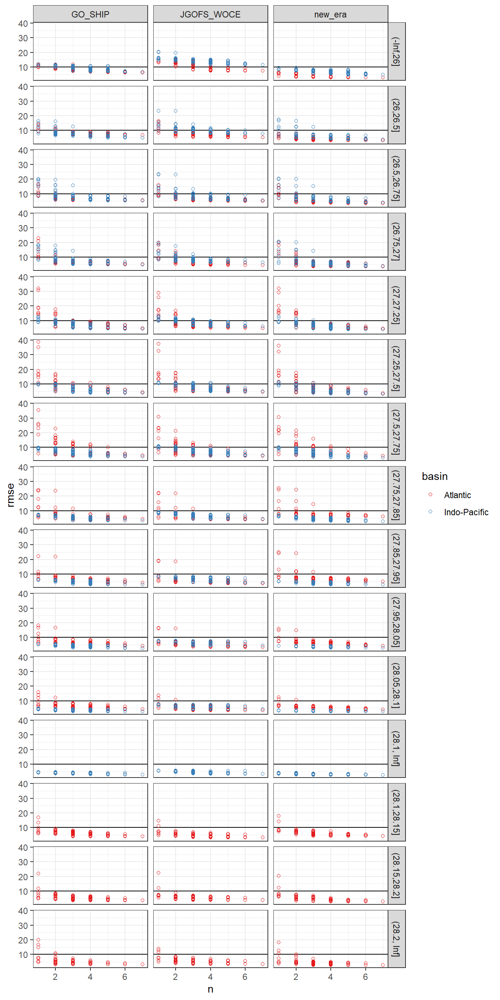
AIC is an alternative criterion to RMSE to judge model quality, but not (yet) taken into account.
all_lm_stats %>%
ggplot(aes(rmse, aic, col = gamma_slab)) +
geom_point() +
scale_color_viridis_d() +
facet_grid(era~basin)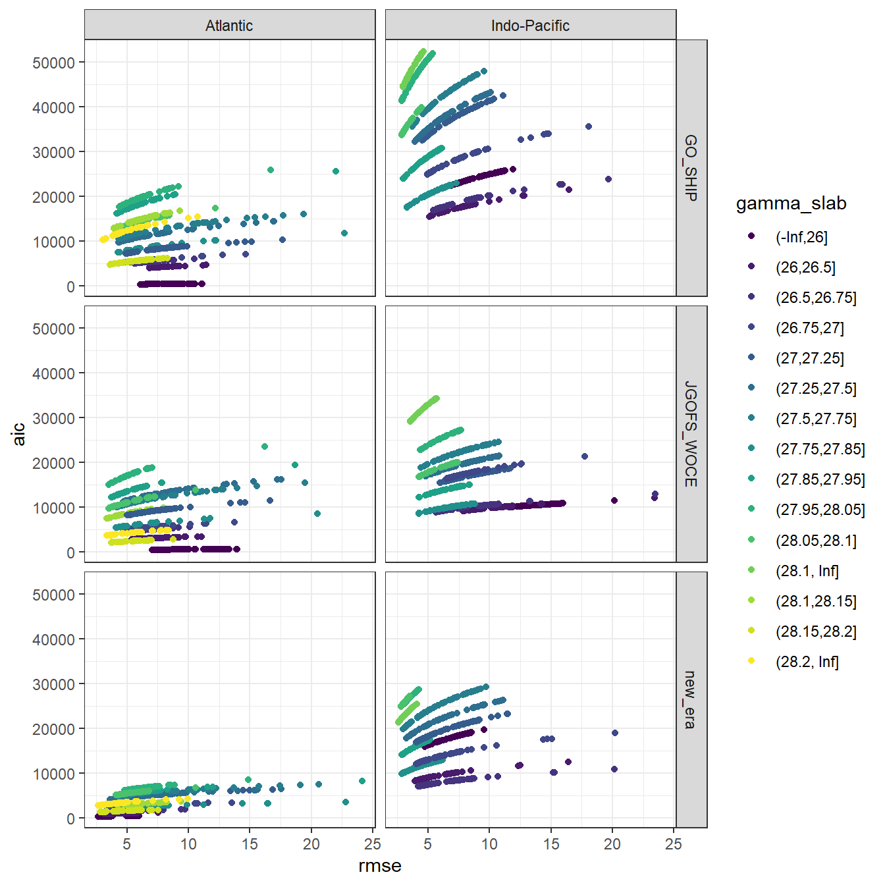
Within each basin and slab, the 10 linear regression models with lowest summed RMSE across all eras were selected.
all_lm_stats <- all_lm_stats %>%
select(basin, era, gamma_slab, predictors, rmse)
all_lm_stats_wide <- all_lm_stats %>%
pivot_wider(names_from = era,
values_from = rmse,
names_prefix = "rmse_")
all_lm_stats_wide <- all_lm_stats_wide %>%
mutate(
rmse_sum_JGOFS_GO = rmse_JGOFS_WOCE + rmse_GO_SHIP,
rmse_sum_GO_new = rmse_GO_SHIP + rmse_new_era
)
all_lm_stats <- all_lm_stats_wide %>%
pivot_longer(
c(rmse_sum_JGOFS_GO, rmse_sum_GO_new),
names_to = "eras",
values_to = "rmse_sum",
names_prefix = "rmse_sum_"
)
lm_best <- all_lm_stats %>%
group_by(basin, gamma_slab, eras) %>%
slice_min(order_by = rmse_sum,
with_ties = FALSE,
n = parameters$MLR_number) %>%
ungroup() %>%
arrange(basin, gamma_slab, eras, predictors)
kable(lm_best) %>%
add_header_above() %>%
kable_styling() %>%
scroll_box(width = "100%", height = "400px")| basin | gamma_slab | predictors | rmse_JGOFS_WOCE | rmse_GO_SHIP | rmse_new_era | eras | rmse_sum |
|---|---|---|---|---|---|---|---|
| Atlantic | (-Inf,26] | aou oxygen silicate phosphate phosphate_star | 7.551415 | 6.172312 | 2.751708 | GO_new | 8.924020 |
| Atlantic | (-Inf,26] | sal aou oxygen phosphate phosphate_star | 7.713991 | 6.065739 | 2.731656 | GO_new | 8.797395 |
| Atlantic | (-Inf,26] | sal aou oxygen silicate phosphate | 7.367183 | 6.069229 | 2.875347 | GO_new | 8.944576 |
| Atlantic | (-Inf,26] | sal tem aou phosphate phosphate_star | 7.585762 | 6.128055 | 2.717708 | GO_new | 8.845763 |
| Atlantic | (-Inf,26] | sal tem aou silicate phosphate | 7.278011 | 6.171501 | 2.857798 | GO_new | 9.029299 |
| Atlantic | (-Inf,26] | sal tem oxygen phosphate phosphate_star | 7.547678 | 6.166720 | 2.711688 | GO_new | 8.878408 |
| Atlantic | (-Inf,26] | sal tem oxygen silicate phosphate | 7.248967 | 6.204419 | 2.852778 | GO_new | 9.057197 |
| Atlantic | (-Inf,26] | tem aou oxygen phosphate phosphate_star | 7.150296 | 6.325439 | 2.671672 | GO_new | 8.997111 |
| Atlantic | (-Inf,26] | tem aou silicate phosphate phosphate_star | 7.415798 | 6.146663 | 2.744721 | GO_new | 8.891383 |
| Atlantic | (-Inf,26] | tem oxygen silicate phosphate phosphate_star | 7.358462 | 6.126738 | 2.734672 | GO_new | 8.861410 |
| Atlantic | (-Inf,26] | sal aou oxygen silicate phosphate | 7.367183 | 6.069229 | 2.875347 | JGOFS_GO | 13.436411 |
| Atlantic | (-Inf,26] | sal tem aou oxygen phosphate | 7.173663 | 6.319107 | 2.765130 | JGOFS_GO | 13.492771 |
| Atlantic | (-Inf,26] | sal tem aou phosphate phosphate_star | 7.585762 | 6.128055 | 2.717708 | JGOFS_GO | 13.713817 |
| Atlantic | (-Inf,26] | sal tem aou silicate phosphate | 7.278011 | 6.171501 | 2.857798 | JGOFS_GO | 13.449512 |
| Atlantic | (-Inf,26] | sal tem oxygen phosphate phosphate_star | 7.547678 | 6.166720 | 2.711688 | JGOFS_GO | 13.714398 |
| Atlantic | (-Inf,26] | sal tem oxygen silicate phosphate | 7.248967 | 6.204419 | 2.852778 | JGOFS_GO | 13.453386 |
| Atlantic | (-Inf,26] | tem aou oxygen phosphate phosphate_star | 7.150296 | 6.325439 | 2.671672 | JGOFS_GO | 13.475735 |
| Atlantic | (-Inf,26] | tem aou oxygen silicate phosphate | 7.054569 | 6.553880 | 2.766765 | JGOFS_GO | 13.608449 |
| Atlantic | (-Inf,26] | tem aou silicate phosphate phosphate_star | 7.415798 | 6.146663 | 2.744721 | JGOFS_GO | 13.562461 |
| Atlantic | (-Inf,26] | tem oxygen silicate phosphate phosphate_star | 7.358462 | 6.126738 | 2.734672 | JGOFS_GO | 13.485200 |
| Atlantic | (26,26.5] | aou oxygen phosphate phosphate_star | 5.479554 | 6.973773 | 3.206234 | GO_new | 10.180007 |
| Atlantic | (26,26.5] | aou oxygen silicate phosphate | 5.446518 | 7.022801 | 3.184956 | GO_new | 10.207756 |
| Atlantic | (26,26.5] | aou oxygen silicate phosphate phosphate_star | 5.391757 | 6.902167 | 3.178032 | GO_new | 10.080199 |
| Atlantic | (26,26.5] | sal aou oxygen phosphate phosphate_star | 5.456763 | 6.970849 | 3.196238 | GO_new | 10.167087 |
| Atlantic | (26,26.5] | sal aou oxygen silicate phosphate | 5.434466 | 6.997568 | 3.182424 | GO_new | 10.179991 |
| Atlantic | (26,26.5] | sal tem aou oxygen phosphate | 5.477425 | 6.872313 | 3.164633 | GO_new | 10.036947 |
| Atlantic | (26,26.5] | tem aou oxygen phosphate | 5.478784 | 6.872333 | 3.181060 | GO_new | 10.053393 |
| Atlantic | (26,26.5] | tem aou oxygen phosphate phosphate_star | 5.452186 | 6.854777 | 3.180828 | GO_new | 10.035605 |
| Atlantic | (26,26.5] | tem aou oxygen silicate phosphate | 5.363554 | 6.815718 | 3.120245 | GO_new | 9.935963 |
| Atlantic | (26,26.5] | tem aou silicate phosphate phosphate_star | 5.429777 | 6.960158 | 3.193715 | GO_new | 10.153873 |
| Atlantic | (26,26.5] | aou oxygen phosphate phosphate_star | 5.479554 | 6.973773 | 3.206234 | JGOFS_GO | 12.453327 |
| Atlantic | (26,26.5] | aou oxygen silicate phosphate | 5.446518 | 7.022801 | 3.184956 | JGOFS_GO | 12.469318 |
| Atlantic | (26,26.5] | aou oxygen silicate phosphate phosphate_star | 5.391757 | 6.902167 | 3.178032 | JGOFS_GO | 12.293924 |
| Atlantic | (26,26.5] | sal aou oxygen phosphate phosphate_star | 5.456763 | 6.970849 | 3.196238 | JGOFS_GO | 12.427613 |
| Atlantic | (26,26.5] | sal aou oxygen silicate phosphate | 5.434466 | 6.997568 | 3.182424 | JGOFS_GO | 12.432034 |
| Atlantic | (26,26.5] | sal tem aou oxygen phosphate | 5.477425 | 6.872313 | 3.164633 | JGOFS_GO | 12.349739 |
| Atlantic | (26,26.5] | tem aou oxygen phosphate | 5.478784 | 6.872333 | 3.181060 | JGOFS_GO | 12.351117 |
| Atlantic | (26,26.5] | tem aou oxygen phosphate phosphate_star | 5.452186 | 6.854777 | 3.180828 | JGOFS_GO | 12.306963 |
| Atlantic | (26,26.5] | tem aou oxygen silicate phosphate | 5.363554 | 6.815718 | 3.120245 | JGOFS_GO | 12.179271 |
| Atlantic | (26,26.5] | tem aou silicate phosphate phosphate_star | 5.429777 | 6.960158 | 3.193715 | JGOFS_GO | 12.389935 |
| Atlantic | (26.5,26.75] | aou oxygen silicate phosphate phosphate_star | 5.187377 | 5.677938 | 3.699733 | GO_new | 9.377671 |
| Atlantic | (26.5,26.75] | sal aou oxygen phosphate phosphate_star | 5.397352 | 5.674157 | 3.690864 | GO_new | 9.365021 |
| Atlantic | (26.5,26.75] | sal tem aou oxygen phosphate | 5.318827 | 5.588430 | 3.703778 | GO_new | 9.292208 |
| Atlantic | (26.5,26.75] | sal tem aou phosphate phosphate_star | 5.340770 | 5.620498 | 3.707786 | GO_new | 9.328284 |
| Atlantic | (26.5,26.75] | sal tem oxygen phosphate phosphate_star | 5.324850 | 5.603974 | 3.734403 | GO_new | 9.338378 |
| Atlantic | (26.5,26.75] | tem aou oxygen phosphate | 5.360609 | 5.628268 | 3.705511 | GO_new | 9.333779 |
| Atlantic | (26.5,26.75] | tem aou oxygen phosphate phosphate_star | 5.357372 | 5.609565 | 3.646853 | GO_new | 9.256419 |
| Atlantic | (26.5,26.75] | tem aou oxygen silicate phosphate | 5.153695 | 5.620094 | 3.704869 | GO_new | 9.324962 |
| Atlantic | (26.5,26.75] | tem aou silicate phosphate phosphate_star | 5.154882 | 5.637006 | 3.730283 | GO_new | 9.367289 |
| Atlantic | (26.5,26.75] | tem oxygen silicate phosphate phosphate_star | 5.141157 | 5.617650 | 3.758446 | GO_new | 9.376097 |
| Atlantic | (26.5,26.75] | aou oxygen silicate phosphate phosphate_star | 5.187377 | 5.677938 | 3.699733 | JGOFS_GO | 10.865315 |
| Atlantic | (26.5,26.75] | sal aou oxygen silicate phosphate | 5.121400 | 5.673332 | 3.769774 | JGOFS_GO | 10.794732 |
| Atlantic | (26.5,26.75] | sal tem aou oxygen phosphate | 5.318827 | 5.588430 | 3.703778 | JGOFS_GO | 10.907257 |
| Atlantic | (26.5,26.75] | sal tem aou silicate phosphate | 5.080928 | 5.614607 | 3.805535 | JGOFS_GO | 10.695536 |
| Atlantic | (26.5,26.75] | sal tem oxygen silicate phosphate | 5.073639 | 5.596750 | 3.838208 | JGOFS_GO | 10.670389 |
| Atlantic | (26.5,26.75] | tem aou oxygen silicate phosphate | 5.153695 | 5.620094 | 3.704869 | JGOFS_GO | 10.773788 |
| Atlantic | (26.5,26.75] | tem aou silicate phosphate | 5.173069 | 5.666457 | 3.809027 | JGOFS_GO | 10.839526 |
| Atlantic | (26.5,26.75] | tem aou silicate phosphate phosphate_star | 5.154882 | 5.637006 | 3.730283 | JGOFS_GO | 10.791888 |
| Atlantic | (26.5,26.75] | tem oxygen silicate phosphate | 5.158997 | 5.644808 | 3.842072 | JGOFS_GO | 10.803805 |
| Atlantic | (26.5,26.75] | tem oxygen silicate phosphate phosphate_star | 5.141157 | 5.617650 | 3.758446 | JGOFS_GO | 10.758807 |
| Atlantic | (26.75,27] | aou oxygen silicate phosphate phosphate_star | 4.835819 | 4.995037 | 3.480513 | GO_new | 8.475549 |
| Atlantic | (26.75,27] | sal aou oxygen phosphate phosphate_star | 4.840760 | 5.037419 | 3.441292 | GO_new | 8.478711 |
| Atlantic | (26.75,27] | sal tem aou phosphate phosphate_star | 4.759298 | 5.018815 | 3.415301 | GO_new | 8.434116 |
| Atlantic | (26.75,27] | sal tem aou silicate phosphate | 4.708472 | 4.969119 | 3.448332 | GO_new | 8.417452 |
| Atlantic | (26.75,27] | sal tem oxygen phosphate phosphate_star | 4.737133 | 5.008805 | 3.405761 | GO_new | 8.414566 |
| Atlantic | (26.75,27] | sal tem oxygen silicate phosphate | 4.689137 | 4.956845 | 3.438851 | GO_new | 8.395696 |
| Atlantic | (26.75,27] | tem aou oxygen phosphate phosphate_star | 4.761392 | 5.006690 | 3.456965 | GO_new | 8.463654 |
| Atlantic | (26.75,27] | tem aou silicate phosphate phosphate_star | 4.767595 | 4.974144 | 3.429472 | GO_new | 8.403616 |
| Atlantic | (26.75,27] | tem oxygen phosphate phosphate_star | 4.769503 | 5.012519 | 3.460589 | GO_new | 8.473107 |
| Atlantic | (26.75,27] | tem oxygen silicate phosphate phosphate_star | 4.739924 | 4.961115 | 3.415486 | GO_new | 8.376601 |
| Atlantic | (26.75,27] | sal aou oxygen silicate phosphate | 4.810239 | 5.008928 | 3.490149 | JGOFS_GO | 9.819166 |
| Atlantic | (26.75,27] | sal tem aou phosphate phosphate_star | 4.759298 | 5.018815 | 3.415301 | JGOFS_GO | 9.778113 |
| Atlantic | (26.75,27] | sal tem aou silicate phosphate | 4.708472 | 4.969119 | 3.448332 | JGOFS_GO | 9.677591 |
| Atlantic | (26.75,27] | sal tem oxygen phosphate phosphate_star | 4.737133 | 5.008805 | 3.405761 | JGOFS_GO | 9.745938 |
| Atlantic | (26.75,27] | sal tem oxygen silicate phosphate | 4.689137 | 4.956845 | 3.438851 | JGOFS_GO | 9.645981 |
| Atlantic | (26.75,27] | tem aou oxygen phosphate phosphate_star | 4.761392 | 5.006690 | 3.456965 | JGOFS_GO | 9.768082 |
| Atlantic | (26.75,27] | tem aou phosphate phosphate_star | 4.795872 | 5.022362 | 3.476304 | JGOFS_GO | 9.818234 |
| Atlantic | (26.75,27] | tem aou silicate phosphate phosphate_star | 4.767595 | 4.974144 | 3.429472 | JGOFS_GO | 9.741739 |
| Atlantic | (26.75,27] | tem oxygen phosphate phosphate_star | 4.769503 | 5.012519 | 3.460589 | JGOFS_GO | 9.782022 |
| Atlantic | (26.75,27] | tem oxygen silicate phosphate phosphate_star | 4.739924 | 4.961115 | 3.415486 | JGOFS_GO | 9.701040 |
| Atlantic | (27,27.25] | aou oxygen phosphate phosphate_star | 5.401370 | 5.068241 | 4.546280 | GO_new | 9.614522 |
| Atlantic | (27,27.25] | aou oxygen silicate phosphate phosphate_star | 5.328621 | 5.017816 | 4.477069 | GO_new | 9.494885 |
| Atlantic | (27,27.25] | sal aou oxygen phosphate phosphate_star | 5.387715 | 5.017391 | 4.533016 | GO_new | 9.550408 |
| Atlantic | (27,27.25] | sal tem aou phosphate phosphate_star | 5.250498 | 4.962351 | 4.519119 | GO_new | 9.481471 |
| Atlantic | (27,27.25] | sal tem oxygen phosphate phosphate_star | 5.196334 | 4.924601 | 4.501528 | GO_new | 9.426129 |
| Atlantic | (27,27.25] | tem aou oxygen phosphate phosphate_star | 5.147498 | 4.914744 | 4.485850 | GO_new | 9.400593 |
| Atlantic | (27,27.25] | tem aou phosphate phosphate_star | 5.284619 | 4.989642 | 4.526341 | GO_new | 9.515983 |
| Atlantic | (27,27.25] | tem aou silicate phosphate phosphate_star | 5.192439 | 4.929965 | 4.448113 | GO_new | 9.378079 |
| Atlantic | (27,27.25] | tem oxygen phosphate phosphate_star | 5.234406 | 4.949687 | 4.507371 | GO_new | 9.457059 |
| Atlantic | (27,27.25] | tem oxygen silicate phosphate phosphate_star | 5.142108 | 4.888961 | 4.425074 | GO_new | 9.314035 |
| Atlantic | (27,27.25] | sal tem aou phosphate phosphate_star | 5.250498 | 4.962351 | 4.519119 | JGOFS_GO | 10.212849 |
| Atlantic | (27,27.25] | sal tem aou silicate phosphate | 5.078648 | 5.067501 | 4.676695 | JGOFS_GO | 10.146150 |
| Atlantic | (27,27.25] | sal tem oxygen phosphate phosphate_star | 5.196334 | 4.924601 | 4.501528 | JGOFS_GO | 10.120936 |
| Atlantic | (27,27.25] | sal tem oxygen silicate phosphate | 5.018688 | 5.043558 | 4.665827 | JGOFS_GO | 10.062246 |
| Atlantic | (27,27.25] | tem aou oxygen phosphate phosphate_star | 5.147498 | 4.914744 | 4.485850 | JGOFS_GO | 10.062242 |
| Atlantic | (27,27.25] | tem aou oxygen silicate phosphate | 5.132734 | 5.053192 | 4.710145 | JGOFS_GO | 10.185926 |
| Atlantic | (27,27.25] | tem aou silicate phosphate phosphate_star | 5.192439 | 4.929965 | 4.448113 | JGOFS_GO | 10.122404 |
| Atlantic | (27,27.25] | tem oxygen phosphate phosphate_star | 5.234406 | 4.949687 | 4.507371 | JGOFS_GO | 10.184093 |
| Atlantic | (27,27.25] | tem oxygen silicate phosphate | 5.156878 | 5.054717 | 4.711437 | JGOFS_GO | 10.211595 |
| Atlantic | (27,27.25] | tem oxygen silicate phosphate phosphate_star | 5.142108 | 4.888961 | 4.425074 | JGOFS_GO | 10.031069 |
| Atlantic | (27.25,27.5] | aou oxygen phosphate phosphate_star | 4.928107 | 4.403394 | 3.676872 | GO_new | 8.080267 |
| Atlantic | (27.25,27.5] | aou oxygen silicate phosphate phosphate_star | 4.915736 | 4.397225 | 3.652675 | GO_new | 8.049900 |
| Atlantic | (27.25,27.5] | sal aou oxygen phosphate phosphate_star | 4.902251 | 4.329200 | 3.676427 | GO_new | 8.005628 |
| Atlantic | (27.25,27.5] | sal tem aou phosphate phosphate_star | 4.823760 | 4.301531 | 3.657423 | GO_new | 7.958953 |
| Atlantic | (27.25,27.5] | sal tem oxygen phosphate phosphate_star | 4.777170 | 4.300744 | 3.649328 | GO_new | 7.950072 |
| Atlantic | (27.25,27.5] | tem aou oxygen phosphate phosphate_star | 4.772737 | 4.401334 | 3.650559 | GO_new | 8.051893 |
| Atlantic | (27.25,27.5] | tem aou phosphate phosphate_star | 4.869864 | 4.406926 | 3.657707 | GO_new | 8.064632 |
| Atlantic | (27.25,27.5] | tem aou silicate phosphate phosphate_star | 4.856829 | 4.394293 | 3.639306 | GO_new | 8.033599 |
| Atlantic | (27.25,27.5] | tem oxygen phosphate phosphate_star | 4.829126 | 4.427319 | 3.650830 | GO_new | 8.078149 |
| Atlantic | (27.25,27.5] | tem oxygen silicate phosphate phosphate_star | 4.808670 | 4.407059 | 3.638511 | GO_new | 8.045570 |
| Atlantic | (27.25,27.5] | sal tem aou oxygen phosphate | 4.685854 | 4.337938 | 3.941030 | JGOFS_GO | 9.023792 |
| Atlantic | (27.25,27.5] | sal tem aou phosphate | 4.825263 | 4.338114 | 3.941898 | JGOFS_GO | 9.163377 |
| Atlantic | (27.25,27.5] | sal tem aou phosphate phosphate_star | 4.823760 | 4.301531 | 3.657423 | JGOFS_GO | 9.125291 |
| Atlantic | (27.25,27.5] | sal tem aou silicate phosphate | 4.824954 | 4.332108 | 3.862285 | JGOFS_GO | 9.157061 |
| Atlantic | (27.25,27.5] | sal tem oxygen phosphate | 4.779201 | 4.346109 | 3.951432 | JGOFS_GO | 9.125310 |
| Atlantic | (27.25,27.5] | sal tem oxygen phosphate phosphate_star | 4.777170 | 4.300744 | 3.649328 | JGOFS_GO | 9.077914 |
| Atlantic | (27.25,27.5] | sal tem oxygen silicate phosphate | 4.779166 | 4.341614 | 3.878332 | JGOFS_GO | 9.120780 |
| Atlantic | (27.25,27.5] | tem aou oxygen phosphate | 4.776702 | 4.419883 | 3.945447 | JGOFS_GO | 9.196584 |
| Atlantic | (27.25,27.5] | tem aou oxygen phosphate phosphate_star | 4.772737 | 4.401334 | 3.650559 | JGOFS_GO | 9.174070 |
| Atlantic | (27.25,27.5] | tem aou oxygen silicate phosphate | 4.708352 | 4.417138 | 3.863306 | JGOFS_GO | 9.125490 |
| Atlantic | (27.5,27.75] | aou oxygen silicate phosphate | 4.185459 | 4.356671 | 4.334895 | GO_new | 8.691566 |
| Atlantic | (27.5,27.75] | aou oxygen silicate phosphate phosphate_star | 4.169785 | 4.343844 | 4.225606 | GO_new | 8.569449 |
| Atlantic | (27.5,27.75] | sal aou oxygen silicate phosphate | 4.174741 | 4.328080 | 4.306869 | GO_new | 8.634949 |
| Atlantic | (27.5,27.75] | sal aou silicate phosphate phosphate_star | 4.301244 | 4.424822 | 4.231676 | GO_new | 8.656499 |
| Atlantic | (27.5,27.75] | sal tem aou silicate phosphate | 4.161707 | 4.340464 | 4.307726 | GO_new | 8.648190 |
| Atlantic | (27.5,27.75] | sal tem oxygen silicate phosphate | 4.152754 | 4.352114 | 4.311898 | GO_new | 8.664012 |
| Atlantic | (27.5,27.75] | tem aou oxygen silicate phosphate | 4.152046 | 4.332673 | 4.334831 | GO_new | 8.667504 |
| Atlantic | (27.5,27.75] | tem aou silicate phosphate | 4.168309 | 4.368467 | 4.336453 | GO_new | 8.704921 |
| Atlantic | (27.5,27.75] | tem aou silicate phosphate phosphate_star | 4.152646 | 4.354761 | 4.230365 | GO_new | 8.585126 |
| Atlantic | (27.5,27.75] | tem oxygen silicate phosphate phosphate_star | 4.143670 | 4.370246 | 4.236112 | GO_new | 8.606358 |
| Atlantic | (27.5,27.75] | aou oxygen silicate phosphate | 4.185459 | 4.356671 | 4.334895 | JGOFS_GO | 8.542130 |
| Atlantic | (27.5,27.75] | aou oxygen silicate phosphate phosphate_star | 4.169785 | 4.343844 | 4.225606 | JGOFS_GO | 8.513629 |
| Atlantic | (27.5,27.75] | sal aou oxygen silicate phosphate | 4.174741 | 4.328080 | 4.306869 | JGOFS_GO | 8.502821 |
| Atlantic | (27.5,27.75] | sal tem aou silicate phosphate | 4.161707 | 4.340464 | 4.307726 | JGOFS_GO | 8.502171 |
| Atlantic | (27.5,27.75] | sal tem oxygen silicate phosphate | 4.152754 | 4.352114 | 4.311898 | JGOFS_GO | 8.504868 |
| Atlantic | (27.5,27.75] | tem aou oxygen silicate phosphate | 4.152046 | 4.332673 | 4.334831 | JGOFS_GO | 8.484719 |
| Atlantic | (27.5,27.75] | tem aou silicate phosphate | 4.168309 | 4.368467 | 4.336453 | JGOFS_GO | 8.536776 |
| Atlantic | (27.5,27.75] | tem aou silicate phosphate phosphate_star | 4.152646 | 4.354761 | 4.230365 | JGOFS_GO | 8.507407 |
| Atlantic | (27.5,27.75] | tem oxygen silicate phosphate | 4.158773 | 4.386122 | 4.340037 | JGOFS_GO | 8.544894 |
| Atlantic | (27.5,27.75] | tem oxygen silicate phosphate phosphate_star | 4.143670 | 4.370246 | 4.236112 | JGOFS_GO | 8.513916 |
| Atlantic | (27.75,27.85] | aou oxygen silicate phosphate phosphate_star | 4.196722 | 4.299163 | 6.038116 | GO_new | 10.337279 |
| Atlantic | (27.75,27.85] | sal aou oxygen silicate phosphate | 4.113685 | 4.277923 | 6.026571 | GO_new | 10.304494 |
| Atlantic | (27.75,27.85] | sal aou silicate phosphate | 4.120126 | 4.284911 | 6.051476 | GO_new | 10.336387 |
| Atlantic | (27.75,27.85] | sal aou silicate phosphate phosphate_star | 4.106682 | 4.277368 | 6.048439 | GO_new | 10.325807 |
| Atlantic | (27.75,27.85] | sal oxygen silicate phosphate | 4.121204 | 4.278115 | 6.042167 | GO_new | 10.320282 |
| Atlantic | (27.75,27.85] | sal oxygen silicate phosphate phosphate_star | 4.109309 | 4.270082 | 6.038244 | GO_new | 10.308327 |
| Atlantic | (27.75,27.85] | sal tem aou silicate phosphate | 4.114571 | 4.278130 | 6.036798 | GO_new | 10.314928 |
| Atlantic | (27.75,27.85] | sal tem oxygen silicate phosphate | 4.112834 | 4.277933 | 6.034910 | GO_new | 10.312842 |
| Atlantic | (27.75,27.85] | tem aou oxygen silicate phosphate | 4.200707 | 4.299464 | 5.985892 | GO_new | 10.285355 |
| Atlantic | (27.75,27.85] | tem oxygen silicate phosphate phosphate_star | 4.188746 | 4.295924 | 6.039920 | GO_new | 10.335844 |
| Atlantic | (27.75,27.85] | aou oxygen silicate phosphate phosphate_star | 4.196722 | 4.299163 | 6.038116 | JGOFS_GO | 8.495885 |
| Atlantic | (27.75,27.85] | sal aou oxygen silicate phosphate | 4.113685 | 4.277923 | 6.026571 | JGOFS_GO | 8.391608 |
| Atlantic | (27.75,27.85] | sal aou silicate phosphate | 4.120126 | 4.284911 | 6.051476 | JGOFS_GO | 8.405037 |
| Atlantic | (27.75,27.85] | sal aou silicate phosphate phosphate_star | 4.106682 | 4.277368 | 6.048439 | JGOFS_GO | 8.384051 |
| Atlantic | (27.75,27.85] | sal oxygen silicate phosphate | 4.121204 | 4.278115 | 6.042167 | JGOFS_GO | 8.399319 |
| Atlantic | (27.75,27.85] | sal oxygen silicate phosphate phosphate_star | 4.109309 | 4.270082 | 6.038244 | JGOFS_GO | 8.379391 |
| Atlantic | (27.75,27.85] | sal tem aou silicate phosphate | 4.114571 | 4.278130 | 6.036798 | JGOFS_GO | 8.392700 |
| Atlantic | (27.75,27.85] | sal tem oxygen silicate phosphate | 4.112834 | 4.277933 | 6.034910 | JGOFS_GO | 8.390766 |
| Atlantic | (27.75,27.85] | tem aou silicate phosphate phosphate_star | 4.191536 | 4.297340 | 6.042127 | JGOFS_GO | 8.488876 |
| Atlantic | (27.75,27.85] | tem oxygen silicate phosphate phosphate_star | 4.188746 | 4.295924 | 6.039920 | JGOFS_GO | 8.484670 |
| Atlantic | (27.85,27.95] | sal aou oxygen silicate phosphate | 3.728892 | 4.171368 | 4.839290 | GO_new | 9.010658 |
| Atlantic | (27.85,27.95] | sal aou silicate phosphate | 3.924663 | 4.617415 | 5.383637 | GO_new | 10.001052 |
| Atlantic | (27.85,27.95] | sal aou silicate phosphate phosphate_star | 3.894236 | 4.600712 | 5.375904 | GO_new | 9.976616 |
| Atlantic | (27.85,27.95] | sal oxygen silicate phosphate | 3.788985 | 4.443802 | 5.328717 | GO_new | 9.772519 |
| Atlantic | (27.85,27.95] | sal oxygen silicate phosphate phosphate_star | 3.771449 | 4.414214 | 5.307082 | GO_new | 9.721296 |
| Atlantic | (27.85,27.95] | sal tem aou silicate phosphate | 3.751565 | 4.193647 | 4.873647 | GO_new | 9.067294 |
| Atlantic | (27.85,27.95] | sal tem oxygen silicate phosphate | 3.740886 | 4.187591 | 4.873867 | GO_new | 9.061459 |
| Atlantic | (27.85,27.95] | sal tem silicate phosphate | 3.981572 | 4.291511 | 4.873938 | GO_new | 9.165448 |
| Atlantic | (27.85,27.95] | sal tem silicate phosphate phosphate_star | 3.880601 | 4.291497 | 4.833368 | GO_new | 9.124864 |
| Atlantic | (27.85,27.95] | tem aou oxygen silicate phosphate | 4.212035 | 4.851104 | 5.267509 | GO_new | 10.118613 |
| Atlantic | (27.85,27.95] | sal aou oxygen silicate phosphate | 3.728892 | 4.171368 | 4.839290 | JGOFS_GO | 7.900259 |
| Atlantic | (27.85,27.95] | sal aou silicate phosphate | 3.924663 | 4.617415 | 5.383637 | JGOFS_GO | 8.542077 |
| Atlantic | (27.85,27.95] | sal aou silicate phosphate phosphate_star | 3.894236 | 4.600712 | 5.375904 | JGOFS_GO | 8.494948 |
| Atlantic | (27.85,27.95] | sal oxygen silicate phosphate | 3.788985 | 4.443802 | 5.328717 | JGOFS_GO | 8.232787 |
| Atlantic | (27.85,27.95] | sal oxygen silicate phosphate phosphate_star | 3.771449 | 4.414214 | 5.307082 | JGOFS_GO | 8.185663 |
| Atlantic | (27.85,27.95] | sal silicate phosphate phosphate_star | 4.141855 | 4.897347 | 5.381931 | JGOFS_GO | 9.039202 |
| Atlantic | (27.85,27.95] | sal tem aou silicate phosphate | 3.751565 | 4.193647 | 4.873647 | JGOFS_GO | 7.945212 |
| Atlantic | (27.85,27.95] | sal tem oxygen silicate phosphate | 3.740886 | 4.187591 | 4.873867 | JGOFS_GO | 7.928478 |
| Atlantic | (27.85,27.95] | sal tem silicate phosphate | 3.981572 | 4.291511 | 4.873938 | JGOFS_GO | 8.273083 |
| Atlantic | (27.85,27.95] | sal tem silicate phosphate phosphate_star | 3.880601 | 4.291497 | 4.833368 | JGOFS_GO | 8.172097 |
| Atlantic | (27.95,28.05] | sal aou oxygen silicate phosphate | 3.487770 | 4.363515 | 4.820087 | GO_new | 9.183601 |
| Atlantic | (27.95,28.05] | sal aou silicate phosphate | 3.757788 | 4.574558 | 5.190912 | GO_new | 9.765470 |
| Atlantic | (27.95,28.05] | sal aou silicate phosphate phosphate_star | 3.750648 | 4.565335 | 5.100329 | GO_new | 9.665664 |
| Atlantic | (27.95,28.05] | sal oxygen silicate phosphate | 3.570686 | 4.398756 | 5.020607 | GO_new | 9.419363 |
| Atlantic | (27.95,28.05] | sal oxygen silicate phosphate phosphate_star | 3.570396 | 4.378362 | 4.875191 | GO_new | 9.253553 |
| Atlantic | (27.95,28.05] | sal tem aou oxygen phosphate | 3.755336 | 4.367751 | 4.799080 | GO_new | 9.166831 |
| Atlantic | (27.95,28.05] | sal tem aou silicate phosphate | 3.508118 | 4.406907 | 4.931814 | GO_new | 9.338721 |
| Atlantic | (27.95,28.05] | sal tem oxygen silicate phosphate | 3.498901 | 4.381935 | 4.910557 | GO_new | 9.292492 |
| Atlantic | (27.95,28.05] | sal tem silicate phosphate | 3.758011 | 4.813288 | 4.988962 | GO_new | 9.802249 |
| Atlantic | (27.95,28.05] | sal tem silicate phosphate phosphate_star | 3.755808 | 4.805916 | 4.861915 | GO_new | 9.667831 |
| Atlantic | (27.95,28.05] | sal aou oxygen silicate phosphate | 3.487770 | 4.363515 | 4.820087 | JGOFS_GO | 7.851285 |
| Atlantic | (27.95,28.05] | sal aou silicate phosphate | 3.757788 | 4.574558 | 5.190912 | JGOFS_GO | 8.332346 |
| Atlantic | (27.95,28.05] | sal aou silicate phosphate phosphate_star | 3.750648 | 4.565335 | 5.100329 | JGOFS_GO | 8.315983 |
| Atlantic | (27.95,28.05] | sal oxygen silicate phosphate | 3.570686 | 4.398756 | 5.020607 | JGOFS_GO | 7.969442 |
| Atlantic | (27.95,28.05] | sal oxygen silicate phosphate phosphate_star | 3.570396 | 4.378362 | 4.875191 | JGOFS_GO | 7.948758 |
| Atlantic | (27.95,28.05] | sal tem aou oxygen phosphate | 3.755336 | 4.367751 | 4.799080 | JGOFS_GO | 8.123088 |
| Atlantic | (27.95,28.05] | sal tem aou silicate phosphate | 3.508118 | 4.406907 | 4.931814 | JGOFS_GO | 7.915025 |
| Atlantic | (27.95,28.05] | sal tem oxygen phosphate | 3.776519 | 4.629008 | 5.393715 | JGOFS_GO | 8.405527 |
| Atlantic | (27.95,28.05] | sal tem oxygen phosphate phosphate_star | 3.771038 | 4.628018 | 5.306430 | JGOFS_GO | 8.399056 |
| Atlantic | (27.95,28.05] | sal tem oxygen silicate phosphate | 3.498901 | 4.381935 | 4.910557 | JGOFS_GO | 7.880836 |
| Atlantic | (28.05,28.1] | sal aou oxygen silicate phosphate | 3.554108 | 4.594985 | 4.529410 | GO_new | 9.124395 |
| Atlantic | (28.05,28.1] | sal oxygen silicate phosphate | 3.555467 | 4.604476 | 4.534233 | GO_new | 9.138709 |
| Atlantic | (28.05,28.1] | sal oxygen silicate phosphate phosphate_star | 3.548422 | 4.588242 | 4.447473 | GO_new | 9.035715 |
| Atlantic | (28.05,28.1] | sal tem aou oxygen phosphate | 3.539499 | 4.360234 | 4.144983 | GO_new | 8.505217 |
| Atlantic | (28.05,28.1] | sal tem oxygen phosphate | 3.557078 | 4.627894 | 4.416199 | GO_new | 9.044093 |
| Atlantic | (28.05,28.1] | sal tem oxygen phosphate phosphate_star | 3.554312 | 4.623523 | 4.356252 | GO_new | 8.979775 |
| Atlantic | (28.05,28.1] | sal tem oxygen silicate phosphate | 3.531111 | 4.577761 | 4.415293 | GO_new | 8.993054 |
| Atlantic | (28.05,28.1] | tem aou oxygen phosphate | 3.737933 | 4.455027 | 4.228193 | GO_new | 8.683219 |
| Atlantic | (28.05,28.1] | tem aou oxygen phosphate phosphate_star | 3.737328 | 4.451323 | 4.186888 | GO_new | 8.638211 |
| Atlantic | (28.05,28.1] | tem aou oxygen silicate phosphate | 3.643192 | 4.334898 | 4.117142 | GO_new | 8.452040 |
| Atlantic | (28.05,28.1] | sal aou oxygen silicate phosphate | 3.554108 | 4.594985 | 4.529410 | JGOFS_GO | 8.149093 |
| Atlantic | (28.05,28.1] | sal oxygen silicate phosphate | 3.555467 | 4.604476 | 4.534233 | JGOFS_GO | 8.159944 |
| Atlantic | (28.05,28.1] | sal oxygen silicate phosphate phosphate_star | 3.548422 | 4.588242 | 4.447473 | JGOFS_GO | 8.136665 |
| Atlantic | (28.05,28.1] | sal tem aou oxygen phosphate | 3.539499 | 4.360234 | 4.144983 | JGOFS_GO | 7.899734 |
| Atlantic | (28.05,28.1] | sal tem oxygen phosphate | 3.557078 | 4.627894 | 4.416199 | JGOFS_GO | 8.184972 |
| Atlantic | (28.05,28.1] | sal tem oxygen phosphate phosphate_star | 3.554312 | 4.623523 | 4.356252 | JGOFS_GO | 8.177835 |
| Atlantic | (28.05,28.1] | sal tem oxygen silicate phosphate | 3.531111 | 4.577761 | 4.415293 | JGOFS_GO | 8.108872 |
| Atlantic | (28.05,28.1] | tem aou oxygen phosphate | 3.737933 | 4.455027 | 4.228193 | JGOFS_GO | 8.192960 |
| Atlantic | (28.05,28.1] | tem aou oxygen phosphate phosphate_star | 3.737328 | 4.451323 | 4.186888 | JGOFS_GO | 8.188652 |
| Atlantic | (28.05,28.1] | tem aou oxygen silicate phosphate | 3.643192 | 4.334898 | 4.117142 | JGOFS_GO | 7.978090 |
| Atlantic | (28.1,28.15] | sal tem aou oxygen phosphate | 3.440411 | 3.952540 | 4.211635 | GO_new | 8.164175 |
| Atlantic | (28.1,28.15] | sal tem oxygen phosphate | 3.449525 | 3.962887 | 4.254795 | GO_new | 8.217683 |
| Atlantic | (28.1,28.15] | sal tem oxygen phosphate phosphate_star | 3.448754 | 3.962868 | 4.243864 | GO_new | 8.206731 |
| Atlantic | (28.1,28.15] | sal tem oxygen silicate phosphate | 3.349308 | 3.947860 | 4.254217 | GO_new | 8.202077 |
| Atlantic | (28.1,28.15] | tem aou oxygen phosphate | 3.542305 | 3.993360 | 4.220084 | GO_new | 8.213444 |
| Atlantic | (28.1,28.15] | tem aou oxygen phosphate phosphate_star | 3.542289 | 3.992478 | 4.211446 | GO_new | 8.203924 |
| Atlantic | (28.1,28.15] | tem aou oxygen silicate phosphate | 3.436793 | 3.969257 | 4.216057 | GO_new | 8.185314 |
| Atlantic | (28.1,28.15] | tem oxygen phosphate phosphate_star | 3.580534 | 3.998181 | 4.244196 | GO_new | 8.242377 |
| Atlantic | (28.1,28.15] | tem oxygen silicate phosphate | 3.437071 | 3.982172 | 4.255279 | GO_new | 8.237451 |
| Atlantic | (28.1,28.15] | tem oxygen silicate phosphate phosphate_star | 3.430280 | 3.982169 | 4.243363 | GO_new | 8.225532 |
| Atlantic | (28.1,28.15] | sal tem aou oxygen phosphate | 3.440411 | 3.952540 | 4.211635 | JGOFS_GO | 7.392951 |
| Atlantic | (28.1,28.15] | sal tem aou phosphate | 3.446107 | 4.022588 | 4.322003 | JGOFS_GO | 7.468695 |
| Atlantic | (28.1,28.15] | sal tem aou phosphate phosphate_star | 3.443507 | 4.022545 | 4.312806 | JGOFS_GO | 7.466052 |
| Atlantic | (28.1,28.15] | sal tem aou silicate phosphate | 3.390856 | 4.014727 | 4.319062 | JGOFS_GO | 7.405583 |
| Atlantic | (28.1,28.15] | sal tem oxygen phosphate | 3.449525 | 3.962887 | 4.254795 | JGOFS_GO | 7.412412 |
| Atlantic | (28.1,28.15] | sal tem oxygen phosphate phosphate_star | 3.448754 | 3.962868 | 4.243864 | JGOFS_GO | 7.411621 |
| Atlantic | (28.1,28.15] | sal tem oxygen silicate phosphate | 3.349308 | 3.947860 | 4.254217 | JGOFS_GO | 7.297169 |
| Atlantic | (28.1,28.15] | tem aou oxygen silicate phosphate | 3.436793 | 3.969257 | 4.216057 | JGOFS_GO | 7.406050 |
| Atlantic | (28.1,28.15] | tem oxygen silicate phosphate | 3.437071 | 3.982172 | 4.255279 | JGOFS_GO | 7.419244 |
| Atlantic | (28.1,28.15] | tem oxygen silicate phosphate phosphate_star | 3.430280 | 3.982169 | 4.243363 | JGOFS_GO | 7.412449 |
| Atlantic | (28.15,28.2] | sal aou oxygen phosphate | 3.719217 | 3.607575 | 2.956477 | GO_new | 6.564051 |
| Atlantic | (28.15,28.2] | sal aou oxygen phosphate phosphate_star | 3.705570 | 3.607523 | 2.955392 | GO_new | 6.562915 |
| Atlantic | (28.15,28.2] | sal aou oxygen silicate phosphate | 3.713912 | 3.607352 | 2.914045 | GO_new | 6.521397 |
| Atlantic | (28.15,28.2] | sal tem aou oxygen phosphate | 3.719163 | 3.607541 | 2.836143 | GO_new | 6.443684 |
| Atlantic | (28.15,28.2] | sal tem aou phosphate | 3.740143 | 3.669008 | 2.837785 | GO_new | 6.506793 |
| Atlantic | (28.15,28.2] | sal tem aou phosphate phosphate_star | 3.727244 | 3.668400 | 2.837066 | GO_new | 6.505465 |
| Atlantic | (28.15,28.2] | sal tem aou silicate phosphate | 3.739761 | 3.662219 | 2.835064 | GO_new | 6.497283 |
| Atlantic | (28.15,28.2] | sal tem oxygen phosphate | 3.784450 | 3.728657 | 2.836701 | GO_new | 6.565357 |
| Atlantic | (28.15,28.2] | sal tem oxygen phosphate phosphate_star | 3.777038 | 3.727122 | 2.835243 | GO_new | 6.562365 |
| Atlantic | (28.15,28.2] | sal tem oxygen silicate phosphate | 3.775192 | 3.711973 | 2.836415 | GO_new | 6.548388 |
| Atlantic | (28.15,28.2] | aou oxygen phosphate phosphate_star | 3.728499 | 3.613464 | 3.299095 | JGOFS_GO | 7.341963 |
| Atlantic | (28.15,28.2] | aou oxygen silicate phosphate | 3.734757 | 3.612748 | 3.273437 | JGOFS_GO | 7.347504 |
| Atlantic | (28.15,28.2] | aou oxygen silicate phosphate phosphate_star | 3.724405 | 3.612318 | 3.273332 | JGOFS_GO | 7.336723 |
| Atlantic | (28.15,28.2] | sal aou oxygen phosphate | 3.719217 | 3.607575 | 2.956477 | JGOFS_GO | 7.326792 |
| Atlantic | (28.15,28.2] | sal aou oxygen phosphate phosphate_star | 3.705570 | 3.607523 | 2.955392 | JGOFS_GO | 7.313092 |
| Atlantic | (28.15,28.2] | sal aou oxygen silicate phosphate | 3.713912 | 3.607352 | 2.914045 | JGOFS_GO | 7.321265 |
| Atlantic | (28.15,28.2] | sal tem aou oxygen phosphate | 3.719163 | 3.607541 | 2.836143 | JGOFS_GO | 7.326704 |
| Atlantic | (28.15,28.2] | tem aou oxygen phosphate | 3.741996 | 3.613081 | 3.058115 | JGOFS_GO | 7.355077 |
| Atlantic | (28.15,28.2] | tem aou oxygen phosphate phosphate_star | 3.724763 | 3.612911 | 3.057968 | JGOFS_GO | 7.337675 |
| Atlantic | (28.15,28.2] | tem aou oxygen silicate phosphate | 3.734578 | 3.612631 | 3.055977 | JGOFS_GO | 7.347209 |
| Atlantic | (28.2, Inf] | sal aou oxygen phosphate | 3.378104 | 3.057832 | 2.767543 | GO_new | 5.825375 |
| Atlantic | (28.2, Inf] | sal aou oxygen phosphate phosphate_star | 3.376522 | 3.052250 | 2.763926 | GO_new | 5.816176 |
| Atlantic | (28.2, Inf] | sal aou oxygen silicate phosphate | 3.358320 | 3.057387 | 2.767527 | GO_new | 5.824913 |
| Atlantic | (28.2, Inf] | sal tem aou oxygen phosphate | 3.337999 | 3.057466 | 2.685083 | GO_new | 5.742550 |
| Atlantic | (28.2, Inf] | sal tem aou phosphate | 3.472721 | 3.059318 | 2.700720 | GO_new | 5.760038 |
| Atlantic | (28.2, Inf] | sal tem aou phosphate phosphate_star | 3.471029 | 3.052605 | 2.692778 | GO_new | 5.745383 |
| Atlantic | (28.2, Inf] | sal tem aou silicate phosphate | 3.425561 | 3.059270 | 2.696506 | GO_new | 5.755776 |
| Atlantic | (28.2, Inf] | sal tem oxygen phosphate | 3.600320 | 3.064399 | 2.685121 | GO_new | 5.749520 |
| Atlantic | (28.2, Inf] | sal tem oxygen phosphate phosphate_star | 3.599945 | 3.062381 | 2.680031 | GO_new | 5.742412 |
| Atlantic | (28.2, Inf] | sal tem oxygen silicate phosphate | 3.502342 | 3.059982 | 2.676045 | GO_new | 5.736027 |
| Atlantic | (28.2, Inf] | sal aou oxygen phosphate | 3.378104 | 3.057832 | 2.767543 | JGOFS_GO | 6.435936 |
| Atlantic | (28.2, Inf] | sal aou oxygen phosphate phosphate_star | 3.376522 | 3.052250 | 2.763926 | JGOFS_GO | 6.428771 |
| Atlantic | (28.2, Inf] | sal aou oxygen silicate phosphate | 3.358320 | 3.057387 | 2.767527 | JGOFS_GO | 6.415706 |
| Atlantic | (28.2, Inf] | sal aou silicate phosphate phosphate_star | 3.505718 | 3.055682 | 2.822839 | JGOFS_GO | 6.561400 |
| Atlantic | (28.2, Inf] | sal tem aou oxygen phosphate | 3.337999 | 3.057466 | 2.685083 | JGOFS_GO | 6.395466 |
| Atlantic | (28.2, Inf] | sal tem aou phosphate | 3.472721 | 3.059318 | 2.700720 | JGOFS_GO | 6.532039 |
| Atlantic | (28.2, Inf] | sal tem aou phosphate phosphate_star | 3.471029 | 3.052605 | 2.692778 | JGOFS_GO | 6.523634 |
| Atlantic | (28.2, Inf] | sal tem aou silicate phosphate | 3.425561 | 3.059270 | 2.696506 | JGOFS_GO | 6.484831 |
| Atlantic | (28.2, Inf] | sal tem oxygen silicate phosphate | 3.502342 | 3.059982 | 2.676045 | JGOFS_GO | 6.562324 |
| Atlantic | (28.2, Inf] | tem aou oxygen silicate phosphate | 3.361576 | 3.187744 | 2.736479 | JGOFS_GO | 6.549320 |
| Indo-Pacific | (-Inf,26] | sal aou oxygen phosphate phosphate_star | 11.656608 | 6.900704 | 4.749102 | GO_new | 11.649807 |
| Indo-Pacific | (-Inf,26] | sal aou oxygen phosphate_star | 12.769133 | 7.364871 | 5.325199 | GO_new | 12.690070 |
| Indo-Pacific | (-Inf,26] | sal aou oxygen silicate phosphate_star | 12.764693 | 7.364804 | 5.282054 | GO_new | 12.646857 |
| Indo-Pacific | (-Inf,26] | sal tem aou oxygen phosphate_star | 12.529402 | 7.077213 | 5.306486 | GO_new | 12.383699 |
| Indo-Pacific | (-Inf,26] | sal tem aou phosphate phosphate_star | 11.727854 | 6.878761 | 4.969301 | GO_new | 11.848062 |
| Indo-Pacific | (-Inf,26] | sal tem aou phosphate_star | 12.598968 | 7.121582 | 5.331316 | GO_new | 12.452898 |
| Indo-Pacific | (-Inf,26] | sal tem aou silicate phosphate_star | 12.589079 | 7.121562 | 5.271127 | GO_new | 12.392689 |
| Indo-Pacific | (-Inf,26] | sal tem oxygen phosphate phosphate_star | 11.772722 | 6.912573 | 5.115444 | GO_new | 12.028017 |
| Indo-Pacific | (-Inf,26] | sal tem oxygen phosphate_star | 12.571709 | 7.084201 | 5.382382 | GO_new | 12.466583 |
| Indo-Pacific | (-Inf,26] | sal tem oxygen silicate phosphate_star | 12.560468 | 7.084183 | 5.319801 | GO_new | 12.403985 |
| Indo-Pacific | (-Inf,26] | sal aou oxygen phosphate | 11.847558 | 7.595246 | 6.039579 | JGOFS_GO | 19.442804 |
| Indo-Pacific | (-Inf,26] | sal aou oxygen phosphate phosphate_star | 11.656608 | 6.900704 | 4.749102 | JGOFS_GO | 18.557312 |
| Indo-Pacific | (-Inf,26] | sal aou oxygen silicate phosphate | 11.589172 | 7.158929 | 5.647250 | JGOFS_GO | 18.748101 |
| Indo-Pacific | (-Inf,26] | sal tem aou oxygen phosphate | 11.835399 | 7.592149 | 6.002886 | JGOFS_GO | 19.427548 |
| Indo-Pacific | (-Inf,26] | sal tem aou phosphate | 11.936886 | 7.625869 | 6.166738 | JGOFS_GO | 19.562755 |
| Indo-Pacific | (-Inf,26] | sal tem aou phosphate phosphate_star | 11.727854 | 6.878761 | 4.969301 | JGOFS_GO | 18.606615 |
| Indo-Pacific | (-Inf,26] | sal tem aou silicate phosphate | 11.658578 | 7.235892 | 5.850663 | JGOFS_GO | 18.894470 |
| Indo-Pacific | (-Inf,26] | sal tem oxygen phosphate phosphate_star | 11.772722 | 6.912573 | 5.115444 | JGOFS_GO | 18.685295 |
| Indo-Pacific | (-Inf,26] | sal tem oxygen silicate phosphate | 11.696367 | 7.284738 | 5.951189 | JGOFS_GO | 18.981104 |
| Indo-Pacific | (-Inf,26] | tem oxygen silicate phosphate phosphate_star | 12.209892 | 7.343438 | 5.629163 | JGOFS_GO | 19.553330 |
| Indo-Pacific | (26,26.5] | sal aou oxygen phosphate | 7.963659 | 5.385492 | 4.254610 | GO_new | 9.640102 |
| Indo-Pacific | (26,26.5] | sal aou oxygen phosphate phosphate_star | 7.817898 | 5.210436 | 3.950876 | GO_new | 9.161313 |
| Indo-Pacific | (26,26.5] | sal aou oxygen silicate phosphate | 7.855393 | 5.186663 | 3.936596 | GO_new | 9.123259 |
| Indo-Pacific | (26,26.5] | sal tem aou oxygen phosphate | 7.962543 | 5.284439 | 4.249030 | GO_new | 9.533469 |
| Indo-Pacific | (26,26.5] | sal tem aou phosphate | 8.017736 | 5.296122 | 4.291014 | GO_new | 9.587136 |
| Indo-Pacific | (26,26.5] | sal tem aou phosphate phosphate_star | 7.880514 | 5.109471 | 3.991869 | GO_new | 9.101339 |
| Indo-Pacific | (26,26.5] | sal tem aou silicate phosphate | 7.929705 | 5.144796 | 4.013896 | GO_new | 9.158692 |
| Indo-Pacific | (26,26.5] | sal tem oxygen phosphate | 8.048135 | 5.285536 | 4.311661 | GO_new | 9.597197 |
| Indo-Pacific | (26,26.5] | sal tem oxygen phosphate phosphate_star | 7.921449 | 5.102455 | 4.024452 | GO_new | 9.126907 |
| Indo-Pacific | (26,26.5] | sal tem oxygen silicate phosphate | 7.966619 | 5.154135 | 4.053536 | GO_new | 9.207672 |
| Indo-Pacific | (26,26.5] | sal aou oxygen phosphate | 7.963659 | 5.385492 | 4.254610 | JGOFS_GO | 13.349150 |
| Indo-Pacific | (26,26.5] | sal aou oxygen phosphate phosphate_star | 7.817898 | 5.210436 | 3.950876 | JGOFS_GO | 13.028334 |
| Indo-Pacific | (26,26.5] | sal aou oxygen silicate phosphate | 7.855393 | 5.186663 | 3.936596 | JGOFS_GO | 13.042057 |
| Indo-Pacific | (26,26.5] | sal tem aou oxygen phosphate | 7.962543 | 5.284439 | 4.249030 | JGOFS_GO | 13.246982 |
| Indo-Pacific | (26,26.5] | sal tem aou phosphate | 8.017736 | 5.296122 | 4.291014 | JGOFS_GO | 13.313858 |
| Indo-Pacific | (26,26.5] | sal tem aou phosphate phosphate_star | 7.880514 | 5.109471 | 3.991869 | JGOFS_GO | 12.989985 |
| Indo-Pacific | (26,26.5] | sal tem aou silicate phosphate | 7.929705 | 5.144796 | 4.013896 | JGOFS_GO | 13.074501 |
| Indo-Pacific | (26,26.5] | sal tem oxygen phosphate | 8.048135 | 5.285536 | 4.311661 | JGOFS_GO | 13.333671 |
| Indo-Pacific | (26,26.5] | sal tem oxygen phosphate phosphate_star | 7.921449 | 5.102455 | 4.024452 | JGOFS_GO | 13.023904 |
| Indo-Pacific | (26,26.5] | sal tem oxygen silicate phosphate | 7.966619 | 5.154135 | 4.053536 | JGOFS_GO | 13.120755 |
| Indo-Pacific | (26.5,26.75] | aou oxygen silicate phosphate phosphate_star | 6.122193 | 5.834373 | 4.451642 | GO_new | 10.286015 |
| Indo-Pacific | (26.5,26.75] | sal aou oxygen phosphate | 5.972964 | 5.687005 | 4.633021 | GO_new | 10.320025 |
| Indo-Pacific | (26.5,26.75] | sal aou oxygen phosphate phosphate_star | 5.629568 | 5.427048 | 4.202174 | GO_new | 9.629222 |
| Indo-Pacific | (26.5,26.75] | sal aou oxygen silicate phosphate | 5.889764 | 5.680903 | 4.559978 | GO_new | 10.240881 |
| Indo-Pacific | (26.5,26.75] | sal tem aou oxygen phosphate | 5.970854 | 5.686979 | 4.616972 | GO_new | 10.303950 |
| Indo-Pacific | (26.5,26.75] | sal tem aou phosphate phosphate_star | 5.730080 | 5.467521 | 4.284679 | GO_new | 9.752200 |
| Indo-Pacific | (26.5,26.75] | sal tem aou silicate phosphate | 6.032011 | 5.697592 | 4.657965 | GO_new | 10.355557 |
| Indo-Pacific | (26.5,26.75] | sal tem oxygen phosphate phosphate_star | 5.794994 | 5.507934 | 4.346552 | GO_new | 9.854487 |
| Indo-Pacific | (26.5,26.75] | tem aou oxygen phosphate phosphate_star | 6.099615 | 5.833885 | 4.575006 | GO_new | 10.408891 |
| Indo-Pacific | (26.5,26.75] | tem aou silicate phosphate phosphate_star | 6.164107 | 5.845334 | 4.567769 | GO_new | 10.413103 |
| Indo-Pacific | (26.5,26.75] | sal aou oxygen phosphate | 5.972964 | 5.687005 | 4.633021 | JGOFS_GO | 11.659969 |
| Indo-Pacific | (26.5,26.75] | sal aou oxygen phosphate phosphate_star | 5.629568 | 5.427048 | 4.202174 | JGOFS_GO | 11.056615 |
| Indo-Pacific | (26.5,26.75] | sal aou oxygen silicate phosphate | 5.889764 | 5.680903 | 4.559978 | JGOFS_GO | 11.570667 |
| Indo-Pacific | (26.5,26.75] | sal tem aou oxygen phosphate | 5.970854 | 5.686979 | 4.616972 | JGOFS_GO | 11.657833 |
| Indo-Pacific | (26.5,26.75] | sal tem aou phosphate | 6.059163 | 5.723138 | 4.713418 | JGOFS_GO | 11.782301 |
| Indo-Pacific | (26.5,26.75] | sal tem aou phosphate phosphate_star | 5.730080 | 5.467521 | 4.284679 | JGOFS_GO | 11.197600 |
| Indo-Pacific | (26.5,26.75] | sal tem aou silicate phosphate | 6.032011 | 5.697592 | 4.657965 | JGOFS_GO | 11.729603 |
| Indo-Pacific | (26.5,26.75] | sal tem oxygen phosphate | 6.103238 | 5.751476 | 4.758447 | JGOFS_GO | 11.854714 |
| Indo-Pacific | (26.5,26.75] | sal tem oxygen phosphate phosphate_star | 5.794994 | 5.507934 | 4.346552 | JGOFS_GO | 11.302928 |
| Indo-Pacific | (26.5,26.75] | sal tem oxygen silicate phosphate | 6.085625 | 5.714345 | 4.714702 | JGOFS_GO | 11.799970 |
| Indo-Pacific | (26.75,27] | aou oxygen phosphate phosphate_star | 6.567840 | 5.032576 | 4.153259 | GO_new | 9.185835 |
| Indo-Pacific | (26.75,27] | aou oxygen silicate phosphate phosphate_star | 6.488004 | 4.974323 | 4.153212 | GO_new | 9.127535 |
| Indo-Pacific | (26.75,27] | sal aou oxygen phosphate phosphate_star | 6.533269 | 4.972238 | 4.046389 | GO_new | 9.018627 |
| Indo-Pacific | (26.75,27] | sal aou oxygen silicate phosphate | 6.552579 | 5.062787 | 4.418776 | GO_new | 9.481563 |
| Indo-Pacific | (26.75,27] | sal tem aou oxygen phosphate | 6.516743 | 5.021419 | 4.249032 | GO_new | 9.270450 |
| Indo-Pacific | (26.75,27] | sal tem aou phosphate phosphate_star | 6.645887 | 5.160774 | 4.250747 | GO_new | 9.411521 |
| Indo-Pacific | (26.75,27] | tem aou oxygen phosphate | 6.520101 | 5.023021 | 4.262325 | GO_new | 9.285346 |
| Indo-Pacific | (26.75,27] | tem aou oxygen phosphate phosphate_star | 6.482046 | 4.918858 | 4.030858 | GO_new | 8.949716 |
| Indo-Pacific | (26.75,27] | tem aou oxygen silicate phosphate | 6.492756 | 4.983055 | 4.222006 | GO_new | 9.205061 |
| Indo-Pacific | (26.75,27] | tem aou silicate phosphate phosphate_star | 6.519436 | 5.038575 | 4.287497 | GO_new | 9.326072 |
| Indo-Pacific | (26.75,27] | aou oxygen phosphate phosphate_star | 6.567840 | 5.032576 | 4.153259 | JGOFS_GO | 11.600415 |
| Indo-Pacific | (26.75,27] | aou oxygen silicate phosphate phosphate_star | 6.488004 | 4.974323 | 4.153212 | JGOFS_GO | 11.462326 |
| Indo-Pacific | (26.75,27] | sal aou oxygen phosphate phosphate_star | 6.533269 | 4.972238 | 4.046389 | JGOFS_GO | 11.505507 |
| Indo-Pacific | (26.75,27] | sal aou oxygen silicate phosphate | 6.552579 | 5.062787 | 4.418776 | JGOFS_GO | 11.615365 |
| Indo-Pacific | (26.75,27] | sal tem aou oxygen phosphate | 6.516743 | 5.021419 | 4.249032 | JGOFS_GO | 11.538162 |
| Indo-Pacific | (26.75,27] | tem aou oxygen phosphate | 6.520101 | 5.023021 | 4.262325 | JGOFS_GO | 11.543122 |
| Indo-Pacific | (26.75,27] | tem aou oxygen phosphate phosphate_star | 6.482046 | 4.918858 | 4.030858 | JGOFS_GO | 11.400905 |
| Indo-Pacific | (26.75,27] | tem aou oxygen silicate phosphate | 6.492756 | 4.983055 | 4.222006 | JGOFS_GO | 11.475811 |
| Indo-Pacific | (26.75,27] | tem aou silicate phosphate phosphate_star | 6.519436 | 5.038575 | 4.287497 | JGOFS_GO | 11.558011 |
| Indo-Pacific | (26.75,27] | tem oxygen silicate phosphate phosphate_star | 6.555616 | 5.102646 | 4.381077 | JGOFS_GO | 11.658262 |
| Indo-Pacific | (27,27.25] | sal aou oxygen silicate phosphate | 6.377139 | 4.600567 | 4.107446 | GO_new | 8.708013 |
| Indo-Pacific | (27,27.25] | sal aou silicate phosphate | 6.502600 | 4.606489 | 4.126122 | GO_new | 8.732612 |
| Indo-Pacific | (27,27.25] | sal aou silicate phosphate phosphate_star | 6.447889 | 4.602734 | 4.121767 | GO_new | 8.724501 |
| Indo-Pacific | (27,27.25] | sal oxygen silicate phosphate | 6.637191 | 4.669657 | 4.196447 | GO_new | 8.866105 |
| Indo-Pacific | (27,27.25] | sal oxygen silicate phosphate phosphate_star | 6.607333 | 4.637326 | 4.164739 | GO_new | 8.802065 |
| Indo-Pacific | (27,27.25] | sal tem aou oxygen phosphate | 5.996869 | 4.633491 | 4.166144 | GO_new | 8.799635 |
| Indo-Pacific | (27,27.25] | sal tem aou silicate phosphate | 6.492264 | 4.606457 | 4.119478 | GO_new | 8.725935 |
| Indo-Pacific | (27,27.25] | sal tem oxygen silicate phosphate | 6.598846 | 4.645770 | 4.146776 | GO_new | 8.792546 |
| Indo-Pacific | (27,27.25] | tem aou oxygen phosphate phosphate_star | 6.022258 | 4.653828 | 4.163487 | GO_new | 8.817314 |
| Indo-Pacific | (27,27.25] | tem aou oxygen silicate phosphate | 5.981049 | 4.528738 | 4.048207 | GO_new | 8.576944 |
| Indo-Pacific | (27,27.25] | aou oxygen silicate phosphate phosphate_star | 6.295462 | 4.771569 | 4.373833 | JGOFS_GO | 11.067031 |
| Indo-Pacific | (27,27.25] | sal aou oxygen phosphate phosphate_star | 6.376268 | 4.788951 | 4.174627 | JGOFS_GO | 11.165219 |
| Indo-Pacific | (27,27.25] | sal aou oxygen silicate phosphate | 6.377139 | 4.600567 | 4.107446 | JGOFS_GO | 10.977706 |
| Indo-Pacific | (27,27.25] | sal aou silicate phosphate | 6.502600 | 4.606489 | 4.126122 | JGOFS_GO | 11.109089 |
| Indo-Pacific | (27,27.25] | sal aou silicate phosphate phosphate_star | 6.447889 | 4.602734 | 4.121767 | JGOFS_GO | 11.050623 |
| Indo-Pacific | (27,27.25] | sal tem aou oxygen phosphate | 5.996869 | 4.633491 | 4.166144 | JGOFS_GO | 10.630360 |
| Indo-Pacific | (27,27.25] | sal tem aou silicate phosphate | 6.492264 | 4.606457 | 4.119478 | JGOFS_GO | 11.098720 |
| Indo-Pacific | (27,27.25] | tem aou oxygen phosphate | 6.024170 | 4.749439 | 4.304603 | JGOFS_GO | 10.773609 |
| Indo-Pacific | (27,27.25] | tem aou oxygen phosphate phosphate_star | 6.022258 | 4.653828 | 4.163487 | JGOFS_GO | 10.676085 |
| Indo-Pacific | (27,27.25] | tem aou oxygen silicate phosphate | 5.981049 | 4.528738 | 4.048207 | JGOFS_GO | 10.509787 |
| Indo-Pacific | (27.25,27.5] | sal aou oxygen silicate phosphate | 5.216429 | 4.018839 | 3.243081 | GO_new | 7.261920 |
| Indo-Pacific | (27.25,27.5] | sal aou silicate phosphate | 5.887406 | 4.073478 | 3.274598 | GO_new | 7.348076 |
| Indo-Pacific | (27.25,27.5] | sal aou silicate phosphate phosphate_star | 5.884313 | 4.057400 | 3.239888 | GO_new | 7.297288 |
| Indo-Pacific | (27.25,27.5] | sal oxygen silicate phosphate | 6.224706 | 4.175784 | 3.344478 | GO_new | 7.520262 |
| Indo-Pacific | (27.25,27.5] | sal oxygen silicate phosphate phosphate_star | 6.202470 | 4.122692 | 3.270607 | GO_new | 7.393299 |
| Indo-Pacific | (27.25,27.5] | sal tem aou oxygen phosphate | 4.831746 | 4.155836 | 3.627177 | GO_new | 7.783013 |
| Indo-Pacific | (27.25,27.5] | sal tem aou silicate phosphate | 5.541110 | 4.045015 | 3.247152 | GO_new | 7.292167 |
| Indo-Pacific | (27.25,27.5] | sal tem oxygen silicate phosphate | 5.764252 | 4.080878 | 3.253916 | GO_new | 7.334795 |
| Indo-Pacific | (27.25,27.5] | tem aou oxygen phosphate phosphate_star | 4.832492 | 4.091347 | 3.647515 | GO_new | 7.738862 |
| Indo-Pacific | (27.25,27.5] | tem aou oxygen silicate phosphate | 4.804957 | 3.917807 | 3.527790 | GO_new | 7.445597 |
| Indo-Pacific | (27.25,27.5] | aou oxygen phosphate phosphate_star | 5.199698 | 4.325631 | 3.727673 | JGOFS_GO | 9.525329 |
| Indo-Pacific | (27.25,27.5] | aou oxygen silicate phosphate | 5.256328 | 4.249877 | 3.717904 | JGOFS_GO | 9.506205 |
| Indo-Pacific | (27.25,27.5] | aou oxygen silicate phosphate phosphate_star | 5.196364 | 4.223141 | 3.679102 | JGOFS_GO | 9.419505 |
| Indo-Pacific | (27.25,27.5] | sal aou oxygen phosphate phosphate_star | 5.168633 | 4.254738 | 3.564507 | JGOFS_GO | 9.423371 |
| Indo-Pacific | (27.25,27.5] | sal aou oxygen silicate phosphate | 5.216429 | 4.018839 | 3.243081 | JGOFS_GO | 9.235268 |
| Indo-Pacific | (27.25,27.5] | sal tem aou oxygen phosphate | 4.831746 | 4.155836 | 3.627177 | JGOFS_GO | 8.987582 |
| Indo-Pacific | (27.25,27.5] | sal tem aou silicate phosphate | 5.541110 | 4.045015 | 3.247152 | JGOFS_GO | 9.586125 |
| Indo-Pacific | (27.25,27.5] | tem aou oxygen phosphate | 4.835593 | 4.187854 | 3.729263 | JGOFS_GO | 9.023448 |
| Indo-Pacific | (27.25,27.5] | tem aou oxygen phosphate phosphate_star | 4.832492 | 4.091347 | 3.647515 | JGOFS_GO | 8.923840 |
| Indo-Pacific | (27.25,27.5] | tem aou oxygen silicate phosphate | 4.804957 | 3.917807 | 3.527790 | JGOFS_GO | 8.722764 |
| Indo-Pacific | (27.5,27.75] | sal aou oxygen phosphate phosphate_star | 4.656269 | 3.859073 | 3.334569 | GO_new | 7.193642 |
| Indo-Pacific | (27.5,27.75] | sal aou oxygen silicate phosphate | 4.655491 | 3.688018 | 2.968149 | GO_new | 6.656167 |
| Indo-Pacific | (27.5,27.75] | sal aou silicate phosphate | 5.508979 | 3.887577 | 3.110524 | GO_new | 6.998102 |
| Indo-Pacific | (27.5,27.75] | sal aou silicate phosphate phosphate_star | 5.411099 | 3.846221 | 3.012520 | GO_new | 6.858740 |
| Indo-Pacific | (27.5,27.75] | sal oxygen silicate phosphate phosphate_star | 5.823775 | 4.020551 | 3.081797 | GO_new | 7.102349 |
| Indo-Pacific | (27.5,27.75] | sal tem aou phosphate phosphate_star | 4.826586 | 3.866114 | 3.339474 | GO_new | 7.205588 |
| Indo-Pacific | (27.5,27.75] | sal tem aou silicate phosphate | 4.822537 | 3.696125 | 2.966581 | GO_new | 6.662706 |
| Indo-Pacific | (27.5,27.75] | sal tem oxygen phosphate phosphate_star | 4.957076 | 3.880539 | 3.344942 | GO_new | 7.225482 |
| Indo-Pacific | (27.5,27.75] | sal tem oxygen silicate phosphate | 4.949934 | 3.708516 | 2.965966 | GO_new | 6.674482 |
| Indo-Pacific | (27.5,27.75] | tem aou oxygen silicate phosphate | 4.386458 | 3.842393 | 3.290961 | GO_new | 7.133354 |
| Indo-Pacific | (27.5,27.75] | aou oxygen silicate phosphate | 4.661280 | 3.857603 | 3.411337 | JGOFS_GO | 8.518883 |
| Indo-Pacific | (27.5,27.75] | aou oxygen silicate phosphate phosphate_star | 4.660946 | 3.857583 | 3.409260 | JGOFS_GO | 8.518529 |
| Indo-Pacific | (27.5,27.75] | sal aou oxygen phosphate | 4.656383 | 3.885574 | 3.372534 | JGOFS_GO | 8.541957 |
| Indo-Pacific | (27.5,27.75] | sal aou oxygen phosphate phosphate_star | 4.656269 | 3.859073 | 3.334569 | JGOFS_GO | 8.515342 |
| Indo-Pacific | (27.5,27.75] | sal aou oxygen silicate phosphate | 4.655491 | 3.688018 | 2.968149 | JGOFS_GO | 8.343509 |
| Indo-Pacific | (27.5,27.75] | sal tem aou oxygen phosphate | 4.409996 | 3.883718 | 3.371011 | JGOFS_GO | 8.293714 |
| Indo-Pacific | (27.5,27.75] | sal tem aou silicate phosphate | 4.822537 | 3.696125 | 2.966581 | JGOFS_GO | 8.518662 |
| Indo-Pacific | (27.5,27.75] | tem aou oxygen phosphate | 4.410507 | 3.921164 | 3.429891 | JGOFS_GO | 8.331671 |
| Indo-Pacific | (27.5,27.75] | tem aou oxygen phosphate phosphate_star | 4.409247 | 3.912393 | 3.405050 | JGOFS_GO | 8.321640 |
| Indo-Pacific | (27.5,27.75] | tem aou oxygen silicate phosphate | 4.386458 | 3.842393 | 3.290961 | JGOFS_GO | 8.228851 |
| Indo-Pacific | (27.75,27.85] | aou oxygen silicate phosphate | 4.249542 | 3.356084 | 2.945707 | GO_new | 6.301792 |
| Indo-Pacific | (27.75,27.85] | aou oxygen silicate phosphate phosphate_star | 4.245475 | 3.332871 | 2.938537 | GO_new | 6.271408 |
| Indo-Pacific | (27.75,27.85] | sal aou oxygen silicate phosphate | 4.235175 | 3.347718 | 2.896917 | GO_new | 6.244636 |
| Indo-Pacific | (27.75,27.85] | sal tem aou silicate phosphate | 4.258533 | 3.311684 | 2.876268 | GO_new | 6.187952 |
| Indo-Pacific | (27.75,27.85] | sal tem oxygen silicate phosphate | 4.281560 | 3.291064 | 2.865015 | GO_new | 6.156079 |
| Indo-Pacific | (27.75,27.85] | tem aou oxygen silicate phosphate | 4.242882 | 3.271777 | 2.903747 | GO_new | 6.175523 |
| Indo-Pacific | (27.75,27.85] | tem aou silicate phosphate | 4.275388 | 3.316085 | 2.924736 | GO_new | 6.240820 |
| Indo-Pacific | (27.75,27.85] | tem aou silicate phosphate phosphate_star | 4.273516 | 3.302046 | 2.918998 | GO_new | 6.221044 |
| Indo-Pacific | (27.75,27.85] | tem oxygen silicate phosphate | 4.300570 | 3.296323 | 2.916579 | GO_new | 6.212903 |
| Indo-Pacific | (27.75,27.85] | tem oxygen silicate phosphate phosphate_star | 4.299485 | 3.286256 | 2.911216 | GO_new | 6.197472 |
| Indo-Pacific | (27.75,27.85] | aou oxygen silicate phosphate phosphate_star | 4.245475 | 3.332871 | 2.938537 | JGOFS_GO | 7.578346 |
| Indo-Pacific | (27.75,27.85] | sal aou oxygen silicate phosphate | 4.235175 | 3.347718 | 2.896917 | JGOFS_GO | 7.582893 |
| Indo-Pacific | (27.75,27.85] | sal tem aou oxygen phosphate | 4.233667 | 3.327161 | 3.001071 | JGOFS_GO | 7.560827 |
| Indo-Pacific | (27.75,27.85] | sal tem aou silicate phosphate | 4.258533 | 3.311684 | 2.876268 | JGOFS_GO | 7.570217 |
| Indo-Pacific | (27.75,27.85] | sal tem oxygen silicate phosphate | 4.281560 | 3.291064 | 2.865015 | JGOFS_GO | 7.572624 |
| Indo-Pacific | (27.75,27.85] | tem aou oxygen phosphate | 4.242883 | 3.327650 | 3.002873 | JGOFS_GO | 7.570533 |
| Indo-Pacific | (27.75,27.85] | tem aou oxygen phosphate phosphate_star | 4.234736 | 3.327543 | 3.000201 | JGOFS_GO | 7.562279 |
| Indo-Pacific | (27.75,27.85] | tem aou oxygen silicate phosphate | 4.242882 | 3.271777 | 2.903747 | JGOFS_GO | 7.514659 |
| Indo-Pacific | (27.75,27.85] | tem aou silicate phosphate phosphate_star | 4.273516 | 3.302046 | 2.918998 | JGOFS_GO | 7.575562 |
| Indo-Pacific | (27.75,27.85] | tem oxygen silicate phosphate phosphate_star | 4.299485 | 3.286256 | 2.911216 | JGOFS_GO | 7.585741 |
| Indo-Pacific | (27.85,27.95] | aou oxygen silicate phosphate | 4.280926 | 3.007769 | 2.912915 | GO_new | 5.920684 |
| Indo-Pacific | (27.85,27.95] | aou oxygen silicate phosphate phosphate_star | 4.256269 | 2.993750 | 2.902527 | GO_new | 5.896277 |
| Indo-Pacific | (27.85,27.95] | sal aou oxygen silicate phosphate | 4.272593 | 3.007732 | 2.896370 | GO_new | 5.904102 |
| Indo-Pacific | (27.85,27.95] | sal tem aou silicate phosphate | 4.290311 | 3.000580 | 2.878296 | GO_new | 5.878876 |
| Indo-Pacific | (27.85,27.95] | sal tem oxygen silicate phosphate | 4.311405 | 3.004330 | 2.869502 | GO_new | 5.873832 |
| Indo-Pacific | (27.85,27.95] | tem aou oxygen silicate phosphate | 4.280774 | 3.000763 | 2.891621 | GO_new | 5.892384 |
| Indo-Pacific | (27.85,27.95] | tem aou silicate phosphate | 4.295926 | 3.000801 | 2.897066 | GO_new | 5.897867 |
| Indo-Pacific | (27.85,27.95] | tem aou silicate phosphate phosphate_star | 4.274004 | 2.989254 | 2.887257 | GO_new | 5.876511 |
| Indo-Pacific | (27.85,27.95] | tem oxygen silicate phosphate | 4.315597 | 3.005155 | 2.892410 | GO_new | 5.897565 |
| Indo-Pacific | (27.85,27.95] | tem oxygen silicate phosphate phosphate_star | 4.294333 | 2.994511 | 2.882504 | GO_new | 5.877015 |
| Indo-Pacific | (27.85,27.95] | aou oxygen phosphate phosphate_star | 4.256599 | 3.033388 | 2.960681 | JGOFS_GO | 7.289987 |
| Indo-Pacific | (27.85,27.95] | aou oxygen silicate phosphate | 4.280926 | 3.007769 | 2.912915 | JGOFS_GO | 7.288694 |
| Indo-Pacific | (27.85,27.95] | aou oxygen silicate phosphate phosphate_star | 4.256269 | 2.993750 | 2.902527 | JGOFS_GO | 7.250018 |
| Indo-Pacific | (27.85,27.95] | sal aou oxygen phosphate phosphate_star | 4.237357 | 3.016584 | 2.959140 | JGOFS_GO | 7.253941 |
| Indo-Pacific | (27.85,27.95] | sal aou oxygen silicate phosphate | 4.272593 | 3.007732 | 2.896370 | JGOFS_GO | 7.280326 |
| Indo-Pacific | (27.85,27.95] | sal tem aou phosphate phosphate_star | 4.256261 | 3.030864 | 2.969139 | JGOFS_GO | 7.287125 |
| Indo-Pacific | (27.85,27.95] | tem aou oxygen phosphate phosphate_star | 4.255961 | 3.033021 | 2.960664 | JGOFS_GO | 7.288981 |
| Indo-Pacific | (27.85,27.95] | tem aou oxygen silicate phosphate | 4.280774 | 3.000763 | 2.891621 | JGOFS_GO | 7.281537 |
| Indo-Pacific | (27.85,27.95] | tem aou silicate phosphate phosphate_star | 4.274004 | 2.989254 | 2.887257 | JGOFS_GO | 7.263258 |
| Indo-Pacific | (27.85,27.95] | tem oxygen silicate phosphate phosphate_star | 4.294333 | 2.994511 | 2.882504 | JGOFS_GO | 7.288844 |
| Indo-Pacific | (27.95,28.05] | aou oxygen phosphate phosphate_star | 4.378771 | 2.877804 | 3.077571 | GO_new | 5.955375 |
| Indo-Pacific | (27.95,28.05] | aou oxygen silicate phosphate | 4.381257 | 2.867418 | 3.113633 | GO_new | 5.981051 |
| Indo-Pacific | (27.95,28.05] | aou oxygen silicate phosphate phosphate_star | 4.377427 | 2.861323 | 3.076725 | GO_new | 5.938048 |
| Indo-Pacific | (27.95,28.05] | sal aou oxygen phosphate phosphate_star | 4.359852 | 2.877276 | 3.073963 | GO_new | 5.951239 |
| Indo-Pacific | (27.95,28.05] | sal aou oxygen silicate phosphate | 4.359139 | 2.857154 | 3.075517 | GO_new | 5.932671 |
| Indo-Pacific | (27.95,28.05] | sal tem aou oxygen phosphate | 4.359973 | 2.871354 | 3.107381 | GO_new | 5.978735 |
| Indo-Pacific | (27.95,28.05] | sal tem aou silicate phosphate | 4.377696 | 2.882277 | 3.064828 | GO_new | 5.947104 |
| Indo-Pacific | (27.95,28.05] | tem aou oxygen phosphate phosphate_star | 4.378207 | 2.870660 | 3.073851 | GO_new | 5.944512 |
| Indo-Pacific | (27.95,28.05] | tem aou oxygen silicate phosphate | 4.381237 | 2.866160 | 3.109301 | GO_new | 5.975461 |
| Indo-Pacific | (27.95,28.05] | tem aou silicate phosphate phosphate_star | 4.401881 | 2.886861 | 3.065987 | GO_new | 5.952847 |
| Indo-Pacific | (27.95,28.05] | aou oxygen phosphate phosphate_star | 4.378771 | 2.877804 | 3.077571 | JGOFS_GO | 7.256575 |
| Indo-Pacific | (27.95,28.05] | aou oxygen silicate phosphate | 4.381257 | 2.867418 | 3.113633 | JGOFS_GO | 7.248675 |
| Indo-Pacific | (27.95,28.05] | aou oxygen silicate phosphate phosphate_star | 4.377427 | 2.861323 | 3.076725 | JGOFS_GO | 7.238750 |
| Indo-Pacific | (27.95,28.05] | sal aou oxygen phosphate | 4.360181 | 2.879287 | 3.107563 | JGOFS_GO | 7.239469 |
| Indo-Pacific | (27.95,28.05] | sal aou oxygen phosphate phosphate_star | 4.359852 | 2.877276 | 3.073963 | JGOFS_GO | 7.237128 |
| Indo-Pacific | (27.95,28.05] | sal aou oxygen silicate phosphate | 4.359139 | 2.857154 | 3.075517 | JGOFS_GO | 7.216293 |
| Indo-Pacific | (27.95,28.05] | sal tem aou oxygen phosphate | 4.359973 | 2.871354 | 3.107381 | JGOFS_GO | 7.231328 |
| Indo-Pacific | (27.95,28.05] | tem aou oxygen phosphate | 4.383037 | 2.871954 | 3.114960 | JGOFS_GO | 7.254991 |
| Indo-Pacific | (27.95,28.05] | tem aou oxygen phosphate phosphate_star | 4.378207 | 2.870660 | 3.073851 | JGOFS_GO | 7.248867 |
| Indo-Pacific | (27.95,28.05] | tem aou oxygen silicate phosphate | 4.381237 | 2.866160 | 3.109301 | JGOFS_GO | 7.247397 |
| Indo-Pacific | (28.05,28.1] | aou oxygen phosphate phosphate_star | 4.232069 | 2.875188 | 2.849672 | GO_new | 5.724859 |
| Indo-Pacific | (28.05,28.1] | aou oxygen silicate phosphate phosphate_star | 4.227177 | 2.874648 | 2.825582 | GO_new | 5.700230 |
| Indo-Pacific | (28.05,28.1] | sal aou oxygen phosphate | 4.228221 | 2.863082 | 2.828633 | GO_new | 5.691715 |
| Indo-Pacific | (28.05,28.1] | sal aou oxygen phosphate phosphate_star | 4.228217 | 2.860046 | 2.799367 | GO_new | 5.659413 |
| Indo-Pacific | (28.05,28.1] | sal aou oxygen silicate phosphate | 4.225670 | 2.848200 | 2.826261 | GO_new | 5.674461 |
| Indo-Pacific | (28.05,28.1] | sal aou silicate phosphate | 4.362882 | 2.877440 | 2.836183 | GO_new | 5.713623 |
| Indo-Pacific | (28.05,28.1] | sal aou silicate phosphate phosphate_star | 4.362458 | 2.865816 | 2.804566 | GO_new | 5.670382 |
| Indo-Pacific | (28.05,28.1] | sal tem aou oxygen phosphate | 4.225054 | 2.860776 | 2.817179 | GO_new | 5.677955 |
| Indo-Pacific | (28.05,28.1] | sal tem aou silicate phosphate | 4.264970 | 2.856439 | 2.836178 | GO_new | 5.692618 |
| Indo-Pacific | (28.05,28.1] | tem aou oxygen phosphate phosphate_star | 4.227073 | 2.874723 | 2.843130 | GO_new | 5.717853 |
| Indo-Pacific | (28.05,28.1] | aou oxygen phosphate phosphate_star | 4.232069 | 2.875188 | 2.849672 | JGOFS_GO | 7.107257 |
| Indo-Pacific | (28.05,28.1] | aou oxygen silicate phosphate | 4.228213 | 2.881751 | 2.870188 | JGOFS_GO | 7.109964 |
| Indo-Pacific | (28.05,28.1] | aou oxygen silicate phosphate phosphate_star | 4.227177 | 2.874648 | 2.825582 | JGOFS_GO | 7.101825 |
| Indo-Pacific | (28.05,28.1] | sal aou oxygen phosphate | 4.228221 | 2.863082 | 2.828633 | JGOFS_GO | 7.091304 |
| Indo-Pacific | (28.05,28.1] | sal aou oxygen phosphate phosphate_star | 4.228217 | 2.860046 | 2.799367 | JGOFS_GO | 7.088264 |
| Indo-Pacific | (28.05,28.1] | sal aou oxygen silicate phosphate | 4.225670 | 2.848200 | 2.826261 | JGOFS_GO | 7.073870 |
| Indo-Pacific | (28.05,28.1] | sal tem aou oxygen phosphate | 4.225054 | 2.860776 | 2.817179 | JGOFS_GO | 7.085830 |
| Indo-Pacific | (28.05,28.1] | tem aou oxygen phosphate | 4.227670 | 2.881411 | 2.893756 | JGOFS_GO | 7.109081 |
| Indo-Pacific | (28.05,28.1] | tem aou oxygen phosphate phosphate_star | 4.227073 | 2.874723 | 2.843130 | JGOFS_GO | 7.101796 |
| Indo-Pacific | (28.05,28.1] | tem aou oxygen silicate phosphate | 4.226770 | 2.880685 | 2.860748 | JGOFS_GO | 7.107455 |
| Indo-Pacific | (28.1, Inf] | aou oxygen silicate phosphate | 3.640879 | 3.028695 | 2.696173 | GO_new | 5.724868 |
| Indo-Pacific | (28.1, Inf] | aou oxygen silicate phosphate phosphate_star | 3.635023 | 2.938152 | 2.688069 | GO_new | 5.626221 |
| Indo-Pacific | (28.1, Inf] | sal aou oxygen phosphate | 3.599961 | 3.230532 | 2.595467 | GO_new | 5.825999 |
| Indo-Pacific | (28.1, Inf] | sal aou oxygen phosphate phosphate_star | 3.599599 | 3.136083 | 2.593341 | GO_new | 5.729425 |
| Indo-Pacific | (28.1, Inf] | sal aou oxygen silicate phosphate | 3.570328 | 3.028688 | 2.582084 | GO_new | 5.610771 |
| Indo-Pacific | (28.1, Inf] | sal aou phosphate phosphate_star | 3.713417 | 3.207210 | 2.648134 | GO_new | 5.855343 |
| Indo-Pacific | (28.1, Inf] | sal aou silicate phosphate phosphate_star | 3.698036 | 3.187854 | 2.643218 | GO_new | 5.831072 |
| Indo-Pacific | (28.1, Inf] | sal tem aou oxygen phosphate | 3.540683 | 3.225881 | 2.586405 | GO_new | 5.812286 |
| Indo-Pacific | (28.1, Inf] | sal tem aou phosphate phosphate_star | 3.540570 | 3.173834 | 2.644631 | GO_new | 5.818464 |
| Indo-Pacific | (28.1, Inf] | tem aou oxygen silicate phosphate | 3.601769 | 2.985715 | 2.648408 | GO_new | 5.634123 |
| Indo-Pacific | (28.1, Inf] | aou oxygen silicate phosphate | 3.640879 | 3.028695 | 2.696173 | JGOFS_GO | 6.669574 |
| Indo-Pacific | (28.1, Inf] | aou oxygen silicate phosphate phosphate_star | 3.635023 | 2.938152 | 2.688069 | JGOFS_GO | 6.573176 |
| Indo-Pacific | (28.1, Inf] | sal aou oxygen phosphate phosphate_star | 3.599599 | 3.136083 | 2.593341 | JGOFS_GO | 6.735682 |
| Indo-Pacific | (28.1, Inf] | sal aou oxygen silicate phosphate | 3.570328 | 3.028688 | 2.582084 | JGOFS_GO | 6.599015 |
| Indo-Pacific | (28.1, Inf] | sal tem aou oxygen phosphate | 3.540683 | 3.225881 | 2.586405 | JGOFS_GO | 6.766564 |
| Indo-Pacific | (28.1, Inf] | sal tem aou phosphate phosphate_star | 3.540570 | 3.173834 | 2.644631 | JGOFS_GO | 6.714404 |
| Indo-Pacific | (28.1, Inf] | sal tem aou silicate phosphate | 3.542161 | 3.278460 | 2.644383 | JGOFS_GO | 6.820621 |
| Indo-Pacific | (28.1, Inf] | sal tem oxygen phosphate phosphate_star | 3.594199 | 3.222924 | 2.710942 | JGOFS_GO | 6.817124 |
| Indo-Pacific | (28.1, Inf] | tem aou oxygen silicate phosphate | 3.601769 | 2.985715 | 2.648408 | JGOFS_GO | 6.587484 |
| Indo-Pacific | (28.1, Inf] | tem aou silicate phosphate phosphate_star | 3.653818 | 3.124788 | 2.839805 | JGOFS_GO | 6.778606 |
# lm_best_n <-lm_best %>%
# group_by(basin, gamma_slab) %>%
# summarise(n()) %>%
# ungroup()all_lm_stats %>%
ggplot(aes(rmse_GO_SHIP, rmse_sum - rmse_GO_SHIP, col = gamma_slab)) +
geom_point() +
scale_color_viridis_d() +
facet_grid(eras ~ basin)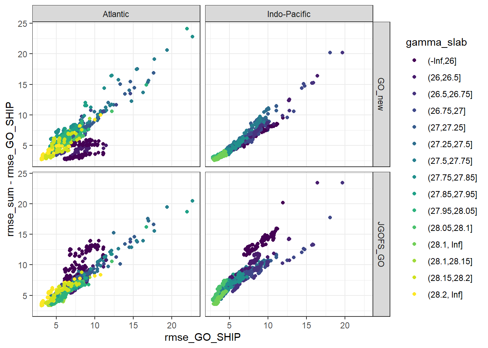
rm(all_lm_stats, all_lm_stats_wide)lm_1 <- GLODAP %>%
filter(basin == "Atlantic",
gamma_slab == "(-Inf,26]",
era == "new_era") %>%
lm(Cstar ~ salinity + temperature + aou + oxygen + phosphate_star, data = .)
lm_2 <- GLODAP %>%
filter(basin == "Atlantic",
gamma_slab == "(-Inf,26]",
era == "new_era") %>%
lm(Cstar ~ salinity + temperature + aou + oxygen + phosphate, data = .)
lm_1
lm_2
sqrt(mean(lm_1$residuals^2))
sqrt(mean(lm_2$residuals^2))6.3.2 Fitting best models
After selecting 10 linear regression models with lowest summed RMSE across all eras, models are fitted again and model coefficients are saved to file.
lm_best <- lm_best %>%
mutate(lm_coeff = str_replace_all(predictors, " ", " + "),
lm_coeff = paste("Cstar ~", lm_coeff))
for (i_basin in unique(GLODAP$basin)) {
for (i_era in unique(GLODAP$era)) {
# i_basin <- unique(GLODAP$basin)[1]
# i_era <- unique(GLODAP$era)[1]
print(i_basin)
print(i_era )
GLODAP_basin_era <- GLODAP %>%
filter(basin == i_basin, era == i_era)
lm_best_basin <- lm_best %>%
filter(basin == i_basin)
for (i_gamma_slab in unique(GLODAP_basin_era$gamma_slab)) {
# i_gamma_slab <- unique(GLODAP_basin_era$gamma_slab)[1]
print(i_gamma_slab)
GLODAP_basin_era_slab <- GLODAP_basin_era %>%
filter(gamma_slab == i_gamma_slab)
lm_best_basin_slab <- lm_best_basin %>%
filter(gamma_slab == i_gamma_slab)
for (i_eras in unique(lm_best_basin_slab$eras)) {
# i_eras <- unique(lm_best_basin_slab$eras)[1]
lm_best_basin_slab_eras <- lm_best_basin_slab %>%
filter(eras == i_eras)
for (i_predictors in unique(lm_best_basin_slab_eras$predictors)) {
# i_predictors <- unique(lm_best_basin_slab_eras$predictors)[1]
lm_best_single <- lm_best_basin_slab_eras %>%
filter(predictors == i_predictors) %>%
select(lm_coeff) %>%
pull()
i_rmse_sum <- lm_best_basin_slab_eras %>%
filter(predictors == i_predictors) %>%
select(rmse_sum) %>%
pull()
lm_formula <- as.formula(lm_best_single)
model_single <- lm(lm_formula,
data = GLODAP_basin_era_slab)
coefficients <- tidy(model_single)
coefficients <- coefficients %>%
mutate(basin = i_basin,
era = i_era,
eras = i_eras,
gamma_slab = i_gamma_slab,
model = lm_best_single,
rmse = i_rmse_sum)
print(lm_best_single)
if (exists("all_lm")) {
all_lm <- bind_rows(all_lm, coefficients)
}
if (!exists("all_lm")) {
all_lm <- coefficients
}
}
}
}
}
}
rm(lm_formula, model_single, coefficients, i_rmse_sum,
GLODAP_basin_era, GLODAP_basin_era_slab,
lm_best, lm_best_basin, lm_best_basin_slab, lm_best_single,
i_basin, i_era, i_gamma_slab, i_predictors)
all_lm %>%
write_csv(here::here("data/eMLR",
"all_lm.csv"))7 Open tasks
- combine correlation, rmse and model calculation into one routine, ideally using the purrr map approach
- select exactly best 10 models, even if same rmse sum appears more than once (currently, selection is set two ten, even if doublicated rmse occur)
- check (phosphate_star) NA’s in coeffcients -> cases of exact colinearity?
8 Open questions
sessionInfo()R version 4.0.2 (2020-06-22)
Platform: x86_64-w64-mingw32/x64 (64-bit)
Running under: Windows 10 x64 (build 18363)
Matrix products: default
locale:
[1] LC_COLLATE=English_Germany.1252 LC_CTYPE=English_Germany.1252
[3] LC_MONETARY=English_Germany.1252 LC_NUMERIC=C
[5] LC_TIME=English_Germany.1252
attached base packages:
[1] stats graphics grDevices utils datasets methods base
other attached packages:
[1] corrr_0.4.2 broom_0.7.0 kableExtra_1.1.0 knitr_1.29
[5] olsrr_0.5.3.9000 GGally_2.0.0 patchwork_1.0.1 lubridate_1.7.9
[9] forcats_0.5.0 stringr_1.4.0 dplyr_1.0.0 purrr_0.3.4
[13] readr_1.3.1 tidyr_1.1.0 tibble_3.0.3 ggplot2_3.3.2
[17] tidyverse_1.3.0 workflowr_1.6.2
loaded via a namespace (and not attached):
[1] fs_1.4.2 webshot_0.5.2 RColorBrewer_1.1-2 httr_1.4.2
[5] rprojroot_1.3-2 tools_4.0.2 backports_1.1.8 R6_2.4.1
[9] nortest_1.0-4 DBI_1.1.0 colorspace_1.4-1 withr_2.2.0
[13] tidyselect_1.1.0 gridExtra_2.3 curl_4.3 compiler_4.0.2
[17] git2r_0.27.1 cli_2.0.2 rvest_0.3.6 xml2_1.3.2
[21] labeling_0.3 scales_1.1.1 goftest_1.2-2 digest_0.6.25
[25] foreign_0.8-80 rmarkdown_2.3 rio_0.5.16 pkgconfig_2.0.3
[29] htmltools_0.5.0 dbplyr_1.4.4 highr_0.8 rlang_0.4.7
[33] readxl_1.3.1 rstudioapi_0.11 generics_0.0.2 farver_2.0.3
[37] jsonlite_1.7.0 zip_2.0.4 car_3.0-8 magrittr_1.5
[41] Rcpp_1.0.5 munsell_0.5.0 fansi_0.4.1 abind_1.4-5
[45] lifecycle_0.2.0 stringi_1.4.6 whisker_0.4 yaml_2.2.1
[49] carData_3.0-4 plyr_1.8.6 grid_4.0.2 blob_1.2.1
[53] promises_1.1.1 crayon_1.3.4 haven_2.3.1 hms_0.5.3
[57] pillar_1.4.6 reprex_0.3.0 glue_1.4.1 evaluate_0.14
[61] data.table_1.13.0 modelr_0.1.8 vctrs_0.3.2 httpuv_1.5.4
[65] cellranger_1.1.0 gtable_0.3.0 reshape_0.8.8 assertthat_0.2.1
[69] xfun_0.16 openxlsx_4.1.5 later_1.1.0.1 viridisLite_0.3.0
[73] ellipsis_0.3.1 here_0.1